Curent alternativ
Table of Contents
1 Bazele teoriei
1.1 Ce este curentul alternativ
În primul capitol am luat în considerare doar curentul continuu, termen folosit în electricitate pentru a defini deplasarea electronilor într-o singură direcţie constantă şi/sau calitatea tensiunii de a deţine o singură polaritate. Curentul continuu este tipul de electricitate produsă de o baterie, de exemplu.
Pe cât de folosit şi uşor de înţeles este curentul continuu, acesta nu este „tipul” de electricitate folosit în general. Unele surse electrice, precum generatoarele electro-mecanice rotative, produc tensiuni a căror polaritate alternează, inversându-se în acest caz polii pozitivi şi negativi între ei. Fie că vorbim de modificarea polarităţii unei tensiuni sau de modificarea direcţiei de deplasare a electronilor înainte şi înapoi, acest gen de electricitatea poartă denumirea de curent alternativ:

Figure 1: curent continuu vs. curent alternativ
Deşi simbolul bateriei este folosit pentru a reprezenta orice sursă de curent continuu, în cazul curentului alternativ, simbolul unei surse generige îl reprezintă o linie sinusoidală într-un cerc, precum în figura de mai sus.
Ne putem întreba, pe bună dreptate, de ce ne-am bate capul şi cu acest tip de electricitate. Este adevărat că în unele cazuri, curentul alternativ nu prezintă niciun avantaj faţă de cel continuu. În aplicaţiile în care curentul electric este folosit doar pentru a genera energie sub formă de căldură (reşou, bec, etc.), polaritatea sau direcţia curentului este irelevantă atâta timp cât tensiunea şi curentul existente în circuit sunt suficiente pentru a disipa puterea necesară elementelor din circuit. Totuşi, cu ajutorul curentului alternativ se pot construi generatoare electrice, motoare electrice şi sisteme de distribuţie a energiei electrice mult superioare din punct de vedere al eficienţei faţă de curentul continuu.
- Generarea curentului alternativ
În cazul în care construim o maşină ce roteşte un câmp magnetic în jurul unui set de înfăşurări staţionare prin intermediul unui ax, vom constata producerea curentului alternativ pe înfăsurări pe măsură ce axul se roteşte; principiul se bazează pe legea inducţiei electromagnetice a lui Faraday. Acesta este şi principiul de bază a unui generator de curent alternativ, cunoscut şi sub numele de alternator.

Figure 2: principiul generatorului de curent alternativ
Putem observa că polaritatea tensiunii pe înfăşurare se inversează atunci când prin preajma acestia trece polul opus al magnetului. Conectată la o sursă, această inversare a polarităţii crează un curent invers (în direcţie opusă) prin circuit. Cu cât viteza de rotaţie a axului generatorului este mai mare, cu atât mai repede se roteşte şi magnetul; rezultatul este o tensiune şi curent alternativ ce-şi modifică direcţiile mult mai des în aceeiaşi perioadă de timp.
- Generarea curentului continuu
Deşi generatoarele de curent continuu funcţionează pe baza aceluiaşi principiu al inducţiei electromagnetice ca şi generatoarele de curent alternativ, construcţia acestora nu este aşa de simplă. La un generator de curent continuu, înfăşurarea este montată pe ax, acolo unde la generatorul de curent alternativ se află magnetul permanent, iar contactul dintre înfăşurarea rotativă şi circuitul exterior se realizează cu ajutorul unor contacte staţionare de carbon, numite perii, ce vin în contact cu fâşii de cabon aflate pe înfăşurare. Toate aceste elemente sunt necesare pentru schimbarea polarităţii de ieşire spre circuitul exterior, pentru ca acesta „să vadă” o polaritate constantă (curent continuu):
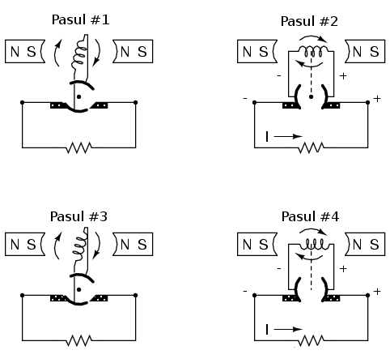
Figure 3: principiul generatorului de curent continuu
Generatorul de mai sus produce două pulsuri de tensiune la fiecare revoluţie a axului, ambele pulsuri având aceeiaşi direcţie (polaritate). Pentru ca un generator de curent continuu să producă o tensiune constantă şi nu o tensiune intermitentă, acesta trebuie echipat cu seturi multiple de înfăşurări pentru contactul cu periile. Diagrama de mai sus este prin urmare una simplificată.
Problema ce se iveşte în cazul închiderii şi deschiderii contactelor între înfăsurările rotative şi perii este dezvoltarea căldurii excesive şi a scânteilor, în special la viteze mari. Dacă mediul ambiant în care funcţionează generatorul prezintă vapori inflamabili sau explozivi, problema folosirii unui asfel de generator este şi mai gravă. Pe de altă parte, un generator de curent alternativ nu necesită perii şi comutatoare pentru funcţionarea sa, şi este prin urmare imun la asfel de probleme. Avantajele curentului alternativ faţă de cel continuu se regăsesc şi în cazul confecţionării motoarelor electrice.
- Transformatorul
Un alt domeniu de aplicare al curentului continuu se bazează pe un efect al electromagnetismului cunoscut sub denumirea de inducţie mutuală: două sau mai multe înfăşurări plasate una în vecinătatea celeilalte, asfel încât câmpul magnetic variabil create de o înfăşurare induce o tensiune electrică în cealaltă. Dacă avem două înfăşurări mutual inductive şi alimentăm una dintre ele în curent altenativ, cea de a doua înfăşurare va şi ea străbătută de curent alternativ. O asfel de utilizare a înfăşurătorilor dă naştere unui dispozitiv numit transformator:
alimentează prima înfăşurare dintr-un set de două înfăşurări mutual inductive, va induce un curent alternativ în cea de a doua înfăşurare

Transformatorul este utilizat în principal pentru ridicarea sau coborârea valorii tensiunii de la înfăşurarea alimentată la cea nealimentată. Prima înfăşurare, cea care este alimentată în curent alternativ, poartă denumirea de primar; cea de a doua înfăşurare, cea în care se induce un curent alternativ dinspre primar, poartă denumirea de secundar. Valoarea tensiunii induse în secundar este egală cu produsul dintre valoarea tensiunii din primar şi raportul dintre numărul de spire din secundar şi numărul de înfăşurări din primar (U2 = U1*n2/n1). Această relaţie poate fi reprezentată printr-o analogie mecanică, folosind cuplul şi viteza pentru reprezentarea tensiunii şi respectiv a curentului.
cuplul reprezintă tensiunea şi viteza reprezintă curentul

Dacă inversăm raportul numărului de spire dintre primar şi secundar, asfel încât primarul va avea mai puţine spire decât secundarul, atunci transformatorul va „ridica” tensiune de la nivelul existent în primar la un nivel mai mare în secundar.
Abilitatea transformatoarelor de a ridica tensiunea sau de a o coborî este extrem de utilă în proiectare reţelelor de distribuţie a energiei electrice. Atunci când se transportă energie electrică pe distanţe lungi, este mult mai eficient dacă aceasta se realizează la tensiuni înalte şi curenţi mici (diamentrul conductorilor este mai mic, prin urmare şi pierderile sunt mai mici), si coborârea acesteia pentru utilizarea de către consumatori.
folosirea transformatoarelor ridicătoare şi coborâtoare de tensiune 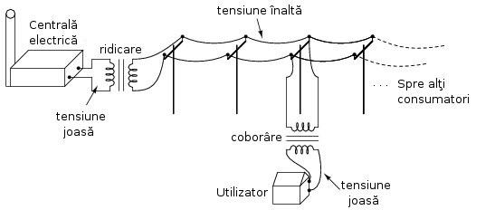
Tehnologia proiectării transformatoarelor face posibilă existenţa sistemelor de distribuţie. Fară capacitatea de ridicare şi coborâre a tensiuni, sistemele de distribuţie ar fi mult prea scumpe pentru a fi practice, decât poate, doar pe distanţe scurte, de câţiva kilometri.
Pe cât sunt de folositoare, transformatoarele funcţionează doar în curent alternativ, deoarece fenomenul de inducţie mutuală se bazează pe câmpuri magnetice variabile, iar curentul continuu nu poate produce decât câmpuri magnetice constante. Desigur, curentul continuu poate fi folosit sub formă de impulsuri prin înfăşurarea primară pentru crearea unui câmp magnetic variabil, dar acest curent pulsatoriu nu este foarte diferit până la urmă de curentul alternativ.
Sumar:
- Curentul continuu menţine tensiunea şi curentul la o polaritate respectiv direcţie constante în timp
- În curent alternativ, tensiunea şi curentul îşi schimbă polaritatea respectiv direcţia în timp
- Generatoarele electromacanice în curent alternativ, cunoscute sub numele de alternatoare, sunt mult mai simplu de construit decât generatoarele de curent continuu. Acelaşi lucru este valabil şi în cazul motoarelor electrice
- Un transformator reprezintă un set de înfăşurări mutual inductive, folosite pentru transmiterea puterii electrice în curent alternativ de la o înfăşurare la cealaltă. De obicei, numărul de spire din fiecare înfăşurare este asfel stabilit încât transformatorul ridică sau coboară tensiune din primar (înfăşurarea alimentată) spre secundar (înfăşurarea nealimentată, indusă)
- Tensiunea din secundar = Tensiunea din primar (numărul de spire din secundar / numărul de spire din primar
- Curentul din secundar = Curentul din primar (numărul de spire din primar / numărul de spire din secundar
1.2 Forme de undă în curent alternativ
Datorită modului de producere al energiei electrice, unda produsă de modificarea continuă a polarităţii tensiunii, respectiv direcţiei curentului, are o formă sinusoidală:

Figure 4: formă de undă sinusoidală
Graficul tensiunii cu timpul pentru un generator electric electromecanic ne arată o modificare netedă a polarităţii (dinspre + spre - sau invers); nivelul tensiunii are cea mai rapidă variaţie în jurul valorii de zero, la intersecţia cu axa timpului, şi cea mai lentă în jurul valorilor maxime. Dacă luăm funcţia trigonometrică sinus între 0 şi 360 de grade şi o desenăm pe un grafic, aceasta va fi exact figurii considerate mai sus.
Motivul pentru care generatorul produce curent alternativ se datorează modului său fizic de funcţionare. Tensiunea produsă de stator (înfăşurările staţionare) datorită mişcării rotorului (magnetului rotativ) este proporţională cu rata variaţiei fluxului magnetic perpendicular pe înfăşurări (legea inducţiei electromagnetice). Această rată de variaţie este maximă atunci când polii magnetului se află în imediata apropiere a înfăşurărilor, iar valoarea ei este minimă atunci când aceştia se află la distanţa maximă faţă de înfăşurări. Matematic, rata variaţiei fluxului magnetic datorită unui magnetet rotativ, urmăreşte graficul funcţiei sinus, asfel că tensiunea produsă de înfăşurări este descrisă de aceeiaşi funcţie.
Dacă urmărim variaţia tensiunii produsă de înfăşurările unui generator din oricare punct de pe graficul funcţiei (sinus în acest caz) până în momentul în care graficul începe să se repete, spunem că s-a efectuat exact o perioadă a acelei funcţii. Matematic, perioada unei funcţii se notează cu T. Aceast concept este cel mai uşor de vizualizat între valorile maxime ale funcţiei, dar poate la fel de bine să fie luat în considerare între oricare puncte ale acestuia. Valorile unghiurilor de pe axa orizontală desemnează domeniul funcţiei trigonometrice sinus, dar şi poziţia unghiulară a axului alternatorului aflat în mişcare:

Figure 5: identificarea unei perioade a funcţiei trigonometrice sinus
Din moment ce axa orizontală a graficului desemnează trecerea timpului precum şi poziţia axului alternatorului în grade, unitatea de măsură folosită pentru marcarea unei perioade este timpul, în majoritatea cazurilor măsurat în secunde sau fracţiuni de secundă. Perioada unei unde, măsurată în grade, este tot timpul 360, dar tipul ocupat de o singură perioadă depinde de rata variaţiei tensiunii de la o polaritate spre cealaltă.
- Frecvenţa
O metodă şi mai des folosită pentru a descrie alternanţa curentului alternativ este exact rata acestei oscilaţii, denumită frecventă, desemnată matematic prin f. Unitatea de măsură pentru frecventă este Hertz-ul (prescurtat Hz), şi reprezintă numărul de perioade complete într-un interval de o secundă. În Europa, frecvenţa standard folosită este de 50 Hz, ceea ce se traduce prin faptul că tensiunea alternativă oscilează cu o rată de 50 de perioade la fiecare secundă. O staţie de transmisie radio ce foloseşte o frecvenţă de 100 MH generează tensiune alternativă ce oscilează cu o rată de 100 de milioane de perioade pe secundă.
Matematic, perioada şi frecvenţa sunt mărimi reciproce, frecvenţa fiind egală cu inversul perioadei (f = 1 / T) De exemplu, pentru o perioadă T = 16 ms, frecvenţa f = 1 / 16 = 62.5 Hz. Instrumentul folosit pentru vizualizarea formelor de undă (a variaţiei tensiunii sau curentului cu timpul) se numeşte osciloscop
- Alte forme de undă
Deşi generatoarele electromecanice şi multe alte fenomene fizice produc în mod natural forme de undă sinusoidale, acestea nu sunt singurele forme de unde alternative existente. Există o varietate de unde alternative produse de circuitele electronice. Mai jos sunt câteva exemple:

Figure 6: exemple de formă de undă: dreptunghiulară, triunghiulară, dinte de fierăstrău
Acestea nu sunt însă singurele tipuri de forme de undă existente, ci doar câteva dintre cele mai comune. Chiar şi circuitele considerate sinusoidale, dreptunghliare sau triunghiulare pure nu sunt perfecte în realitate. Unele forme de undă sunt atât de complexe încăt nu pot fi clasificate. General vorbind, orice formă de undă ce se apropie de o formă sinusoidală este denumită ca atare, toate celelalte fiind denumite ne-sinusoidale. Forma undei de tensiune sau curent are o importanţă crucială asupra comportamentului unui circuit şi trebuie să fim prin urmare atenţi la diferitele forme de undă existente în practică.
Sumar:
- Graficul curentului alternativ produs de un generator (alternator) electromecanic este sinusoidal (formă de undă)
- Perioada reprezintă timpul, luat din oricare punct al graficului formei de undă până în punctul în care acesta începe să se repete, măsurat în secunde
- Frecvenţa este numărul perioadelor efectuate de o formă de undă într-un interval de o secundă şi se măsoară în Hertz (Hz); 1 Hz este egal cu o perioadă efectuată într-un interval de o secundă
- f = 1 / T
1.3 Amplitudinea curentului alternativ
În curent continuu, unde valoarea tensiunii şi a curentului sunt constante în timp, exprimarea cantităţii acestora în orice moment este destul de uşoară. Dar cum putem măsura valoarea unei tensiuni sau a unui curent care variază tot timpul?
O metodă de exprimare a intensităţii, denumită şi amplitudine, curentului alternativ este măsurarea înălţimii formei de undă de pe grafic. Aceasta este denumită valoarea de vârf a unei unde alternative:

Figure 7: măsurarea tensiunii de vârf pe grafic în cazul unei forme de undă alternative
O altă metodă constă în măsurarea înălţimii totale a forme de undă, între cele două vârfuri, valoare ce poartă numele de amplitudine vârf la vârf:
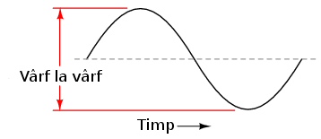
Figure 8: măsurarea amplitudinii vârf la vârf pe grafic în cazul unei forme de undă alternative
Din păcate, ambele modalităţi de calculare a amplitudinii undei alternative sunt puţin folositoare atunci când vrem să facem o comparaţie între diferite tipuri de undă. De exemplu, o undă dreptunghiulară cu valoarea de vârf de 10 V are evident o valoare a tensiunii mai mare pentru o perioadă mai lungă de timp faţă de o undă triunghiulară cu aceeiaşi valoare maximă de 10 V. Efectele acestor două tipuri de undă asupra unei sarcini sunt diferite:
o amplitudine de vârf de 10 V, asupra aceleiaşi sarcini sunt diferite

O modalitate de exprimare a amplitudinilor diferitelor forme de undă într-o formă echivalentă contă în efectuarea mediei aritmetice a valorilor tuturor punctelor de pe grafic. Această mărime este cunoscută sub numele de valoarea medie a formei de undă. Dacă luăm media aritmetică a tuturor punctelor de pe grafic, luând în considerare şi semnul (pozitiv sau negativ), valoarea medie pentru majoritatea undelor va fi zero, datorită anulării reciproce dintre valorile pozitive şi cele negative pe o perioadă completă:
de undă sinusoidală, luând în considerare şi semnul acestora, este zero

Acest lucru este valabil pentru oricare formă de undă constituită din arii egale atât deasupra cât şi sub axa orizonatală (zero) a graficului. Totuşi, practic, măsurarea valorii medii a undei se efectuează matematic prin considerarea valorilor absolute a tuturor punctelor dintr-o perioadă. Cu alte cuvinte, valoarea medie practică a undei se calculează considerând toate punctele de pe grafic ca fiind pozitive, prin „răstunarea” imaginară a tuturor punctelor de pe grafic aflate sub linia orizontală:
unei forme de undă sinusoidală, considerând toate punctele de pe grafic

Figure 9: ca fiind pozitive
- Valoarea efectivă a tensiunii sau a curentului (RMS)
O altă metodă de aflare a valorii reale a amplitudinii unei unde se bazează pe capacitatea acesteia de a efectua lucru mecanic util atunci când este aplicată asupra unei sarcini (P = E2/R, and P = I2R).
Să considerăm de exemplu un fierăstrău circular şi unul pendular (vertical), ambele folosite pentru tăierea lemnului. Ambele tipuri de fierăstraie folosesc o lamă metalică dinţată acţionată de un motor electric, dar cel circular foloseşte o mişcare continuă a lamei pentru a tăia, iar cel pendular foloseşte o mişcare înainte şi înapoi pentru a realiza aceeiaşi operaţie. Comparaţia dintre cele două tipuri de mişcări este analoagă comparaţiei dintre curentul continuu şi cel alternativ:

Figure 10: analogie între fierăstră circular (curent continuu) şi fierăstrău pendular (vertical)(curent alternativ)
Problema descrierii variaţiei valorilor prezente în curent alternativ într-o singură componentă, este prezentă şi în acest caz al analogiei: cum putem exprima viteza lamei fierăstrăului? Lama fierăstrăului circular are o viteză constantă, la fel ca în cazul curentului continuu ce „împinge” electronii prin circuit cu o forţă constantă. Lama fierăstrăului pendular, pe de altă parte, se deplasează înainte şi înapoi (curent alternatic), iar în acest caz valoarea vitezei acesteia variază în fiecare clipă. Care viteză este mai mare, care dintre fierăstraie poate tăia mai mult lemn în aceeiaşi durată de timp? Mai mult decât atât, mişcare înainte şi înapoi a unui fierăstrău se poate să nu fie de acelaşi tip cu mişcare unui alt fierăstrău, în funcţie de caracteristicile mecanice ale fiecăruia. Unul dintre ele poate, de exemplu, să folosească o formă de undă sinusoidală în mişcarea sa, pe când un altul, o undă triunghiulară. O comparaţie între viteza de vârf între două fierăstraie nu are avea aproape niciun rost (sau o comparaţie între unul circular şi unul pendular!). Cu toate că fiecare dintre aceste fierăstraie are o mişcare diferită a lamei, toate sunt egale în cel puţin un sens: toate taie lemn, iar o comparaţia cantitativă asupra acestei funcţii comune poate servi ca punct de plecare pentru determinarea valorii universale a vitezei oricărui fierăstrău.
Dacă de imaginăm două fierăstraie, unul circular şi altul pendular, cu lame identice, capabile să taie acelaşi tip de lemn, cu aceeiaşi grosime, în acelaşi interval de timp, am putea spune despre ele că sunt echivalente în ceea ce priveşte capacitatea lor de tăiere, şi totuşi, ele sunt foarte diferite în modul lor de funcţionare. Această comparaţie poate fi folosită pentru a desemna o viteză a fierăstrăului pendular echivalentă cu cea a fierăstrăului circular, pentru a putea realiza o comparaţie reală între eficienţa celor două tipuri. Aceasta este şi ideea folosiri unui procedeu de măsură a „echivalenţei în curent continuu” a oricărei mărimi din curent alternativ: valoarea curentului sau tensiunii în curent continuu ce ar produce aceeişi cantitate de energie disipată pe o rezistenţă egală.
valoarea efectivă a tensiunii şi a curentului alternativ 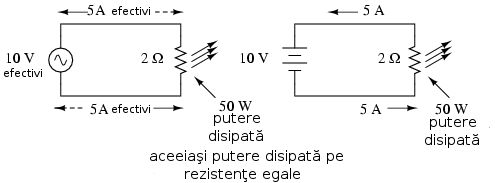
În cele două circuite de mai sus, avem aceeiaşi valoare a sarcinii, respectiv 2 Ω, ce disipă aceeiaşi cantitate de putere sub formă de căldură, 50 W, unul dintre ele fiind alimentat în curent alternativ, celălalt în curent continuu. Deoarece sursa de tensiune alternativă este echivalentă din punct de vedere al puterii transmise spre sarcină cu o baterie de 10 V în curent continuu, putem denumi aceasta o sursă de 10 V. Mai precis, spunem că tensiunea efectivă este de 10 V. În limba engleză notaţia este de 10 V RMS, notaţie ce o vedem adesea mai ales în sistemele audio. RMS înseamnă Root Mean Square şi se referă la modalitatea matematică de obţinere a acestei valori, şi anume, ridicarea la pătrat a tuturor valorilor de pe graficul formei de undă, atât pozitive cât şi negativa, calcularea valori medii a acestora şi introducerea lor sub radical pentru obţinerea valorii finale, efective.
Măsurarea valorii efective este cea mai bună modalitate de realizare a echivalenţei dintre cele două tipuri de electricitate, continuă şi alternativă, indiferent de natura formelor de undă implicate, fie sinusoidale, triunghiulare sau de orice altă formă.
Măsurătorile vârf la vârf sunt cel mai bine efectuate cu ajutorul unui osciloscop, deoarece acesta poate indicat vârful formei de undă cu o acurateţe maximă. Pentru măsurarea valorilor efective, aparatele de măsură analogice vor funcţiona doar dacă au fost special calibrate pentru acest scop. Datorită inerţiei mecanice şi efectului de atenuare, deplasarea indcatorului electromecanic al aparatului de măsură va fi în proporţie cu valoarea medie a undei alternative, şi nu valoare ei efectivă. Datorită acestui lucru, aparatele de măsură analogice trebuiesc calibrate, iar acurateţea acestei operaţii depinde de natura formei de undă presupuse, de obicei sinusoidală.
Cele mai bune aparate de măsură a volorilor efective sunt cele electronice, special concepute pentru acest tip de măsurători. O metodă constă în măsurarea temperaturii unui element rezistiv pentru redarea precisă a valorii efective fără alte calcula matematice, folosind doar legile fizici. Acurateţea acestui tip de măsurătoare este independentă de natura formei de undă.
Pentru forme de undă „pure”, există nişte coeficienţi pentru calcularea relaţiei dintre valorile de vârf, vârf la vârf, medii practice şi valorii efective ale acestora:
vârf, vârf la vârf, medii practice şi valorii efective pentru formele de
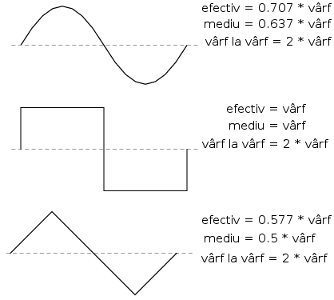
Figure 11: undă sinusoidale, dreptunghiulare şi triunghiulare
Pe lângă aceşti coeficienţi, mai există şi alte modalităţi de exprimare a proporţionalităţii între formele de undă fundamentale. Factorul de vârf a unei forme de undă alternative este raportul dintre valoarea sa de vârf şi valoarea efectivă. Factorul de formă reprezintă raportul dintre valoarea efectivă a undei şi valoarea sa medie. Factorii de vârf şi formă ale undelor dreptunghiulare sunt întotdeauna egali cu 1, din moment ce valoarea de vârf este egală cu cea medie (practică) şi cea efectivă. Formele de undă sinusoidale au o valoare efectivă de 0.707 (1 / 21/2) şi un factor de formă de 1.11 (0.707 / 0.636). Formele de undă triunghiulare şi dinte de fierăstrău a valorile efective de 0.577 (1 / 31/2) şi factorii de formă egali cu 1.15 (0.5777 / 0.5)
Ţineţi minte că aceste constate de conversi între valorile de vârf, vârf la vârf, medii şi efective ale unei forme de undă se pot folosi doar pentru formele de undă pure. Relaţiile dintre aceste valori, folosind aceste constante, nu se pot aplica în cazul formele de undă distorsionate:
coeficienţi pentru calcularea relaţiei dintre valorile de vârf, vârf la

Figure 12: vârf, medii şi efective
Sumar:
- Amplitudine unei unde alternative este valoarea sa pe grafic în funcţie de timp, şi poate însemna valoare de vârf, vârf la vârf, medii sau efective
- Valoarea de vârf a unei forme de unde alternative se măsoară de la intersecţia acesteia cu axa orizontală (timp) până la nivelul maxim pozitiv pe grafic, sau nivelul minim negativ
- Amplitudinea vârf la vârf reprezintă înălţimea totală a unei forme de undă alternative măsurată pe grafic între valoarea sa maximă pozitivă şi valoarea minimă negativă
- Amplitudinea medie reprezintă media aritmetică a valorilor tuturor punctelor de pe grafic în decurs de o perioadă. Pentru că valoarea medie a unei forme de undă simetrice faţă de axa orizontală este tot timpul zero, se foloseşte adesea valoarea medie practică a undei, ca fiind valoarea medie a valorilor absolute a tuturor punctelor de pe grafic (considerând valorile negative ca fiind pozitive)
- Valoarea efectivă (RMS) a unei forme de undă alternative este un mod de exprimare a echivalenţei dintre efectele curetului continuu şi cel alternativ. RMS vine din engleză, şi înseamnă Root Mean Square, adică metoda de calcul a acestei valori
- Factorul de vârf a unei unde alternative este raportul dintre valoarea sa de vârf şi cea efectivă
- Factorul de formă a unei unde alternative este raportul dintre valoarea sa efectivă şi cea medie
1.4 Rezolvarea circuitelor simple de curent alternativ
Rezolvarea circuitelor de curent alternativ se poate dovedi extrem de complexă în unele cazuri datorită comportamentului condensatoarelor şi circuitelor în aceste cazuri. Totuşi, în cazul circuitelor simple, constând dintr-o sursă de curent alternativ şi unul sau mai mulţi rezistori, putem aplica aceleaşi regului ca şi în cazul curentului alternativ fără alte complicaţii.

Figure 13: circuit electric simplu în curent alternativ
Rezistenţele serie se adună, cele în paralel se diminuează, iar legile lui Ohm şi Kirchhoff sunt şi ele valabile. De fapt, după cum vom vedea, aceste regului sunt tot timpul valabile, doar că trebuie să folosim forme matematice mai avansate pentru exprimarea tensiuni, curentului şi a opoziţiei faţă de acesta. Pentru că acesta este însă un circuit pur rezistiv, complexităţile circuitelor de curent alternativ nu afectează rezolvarea lui.
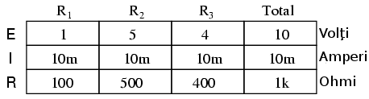
Figure 14: tabel
Un singur lucru foarte important trebuie ţinut minte: toate mărimile folosite în curent alternativ trebuiesc exprimate folosind aceeiaşi termeni (valori de vârf, vârf la vârf, medii sau efective). Dacă tensiunea sursei este dată ca valoare de vârf, atunci toţi curenţii şi tensiunile calculate vor fi exprimate ca şi valori de vârf. Acelaşi lucru este valabil şi în cazul celorlalte tipuri de valori. Exceptând cazurile speciale ce vor fi descrise explicit, toate valorile tensiunilor şi curenţilor din circuite se vor considera a fi valorile efective ale formelor de undă alternative şi nu cele de vârf, vârf la vârf sau medii.
Sumar:
- Toate regulile şi legile circuitelor de curent continuu sunt valabile şî în cazul circuitelor de curent alternativ. Totuşi, pentru circuitele complexe, cantiăţile folosite vor trebui să fie exprimate într-o formă matematică mai complexă
1.5 Fazele curentului alternativ
Lucrurile încep să se complice atunci când trebuie să comparăm două sau mai multe forme de undă alternative ce sunt defazate între ele. Prin această „defazare” se înţelege faptul că formele de undă nu sunt sincronizate, valorile lor de vârf şi punctele de intersecţie cu axa orizontală nu sunt identice în timp. Figura de mai jos ilustrează acest lucru:

Figure 15: forme de undă sinusoidale defazate între ele
Cele două unde de mai sus (A şi B) au aceeiaşi amplitudine şi frecvenţă, dar sunt defazate între ele. În exemplele precedente am considerat faptul că funcţia trigonometrică sinus este reprezentată grafic pornind din punctul zero (zero grade), continuând până la valoarea sa maximă pozisitvă la 90 de grade, din nou la zero la 180 de grade, minimă negativă la 270 de grade şi înapoi la punctul de plecare la 360 de grade. Putem folosi această scară pentru axa orizontală pentru a exprima valoarea defazajului dintre cele două unde:
pentru vizualizarea defazajului dintre două forme de undă sinusoidale -

Figure 16: defazaj de 45 de grade
Defazajul (diferenţa de fază) dintre cele două forme de undă este de 45 de grade, unda A fiind înaintea undei B. O comparaţie între defazaje diferite ale undelor în graficiele de mai jos ilustrează mai bine acest concept:

Figure 17: graficul diferitelor defazaje între două forme de undă
Deoarece formele de undă de mai sus au aceeiaşi frecvenţă, defazajul dintre ele este acelaşi în oricare punct din timp. Din acest motiv, putem exprima defazajul dintre două sau mai multe forme de undă ce au aceeiaşi frecvenţă ca şi o valoare constantă pentru întreagă undă, şi nu doar între două puncte particulare. Putem spune prin urmare că tensiunea A este defazată cu 45 de grade faţă de tensiunea B, de exemplu. Forma de undă ce este în faţă se numeşte defazată înainte, iar cea care este în urmă spunem că este defazată înapoi.
Defazajul, ca şi tensiunea, este tot timpul o valoare relativă între două lucruri. Nu putem spune că o formă de undă are o anumită fază absolută pentru că nu există o referinţă universală pentru fază. În mod uzual, în analiza circuitelor de curent alternativ, forma de undă a sursei de energie este folosita ca şi referinţă de fază, sub formă de „x volţi la 0 grade”. Orice altă tensiune sau curent alternativ va fi în fază sau defazată înainte sau înapoi faţă de această undă de referinţă.
Din acest motiv, circuitele de curent alternativ sunt mult mai complicate decât cele de curent continuu. La aplicarea legilor lui Ohm şi Kirchhoff, trebuiesc luate în considerare atât amplitidinile cât şi diferenţele de faze între undele de tensiune sau curent. Operaţiile de adunare, scădere, înmulţire sau împărţire trebuie să ia în considerare aceste lucruri, folosind sistemul numerelor complexe pentru reprezentarea amplitidinii şi a fazei.
Sumar:
- Diferenţa de fază (defazajul) reprezintă nesincronizarea a două sau a mai multor forme de undă între ele
- Valoarea defazajului dintre două forme de undă poate fi exprimată prin grade
- Două sau mai multe forme de undă pot fi defazate înainte, înapoi sau se pot afla în fază (diferenţa de fază de 0 grade)
- Rezolvarea circuitelor de curent alternativ trebuie să ia în considerare atât amplitudinea undei cât şi diferenţele de fază existente; matematic, acest lucru se realizează cu ajutorul numerelor complexe
1.6 Principii ale undelor radio
Una dintre cele mai fascinante aplicaţii a energiei electrice constă în generarea undelor invizibile de energie, şi anume, a undelor radio. Deşi subiectul este prea vast pentru a fi acoperit în acest scurt capitol, vom prezenta totuşi unele principii de bază.
1.6.1 Unde electromagnetice
Odată cu descoperirea accidentală a electromagnetismului de către Oersted, lumea ştiinţifică a realizat legătura strânsă dintre electricitate şi magnetism. La trecerea unui curent electric printr-un conductor, se generează un câmp magnetic perpendicular pe axa de curgere. Asemănător, dacă un conductor este expus unui flux magnetic variabil perpendicular pe lungimea acestuia, se va produce o cădere de lungime pe această porţiune. Până în acel moment, oamenii de ştiinţă ştiau că electricitatea şi magnetismul erau strâns legate prin aceste principii enumerate mai sus. Totuşi, o descoperire crucială se ascundea sub acest concept simplu al perpendicularităţii celor două câmpuri. Această descoperire reprezintă un moment crucial în istoria ştiinţei.
Cel responsabil de această revoluţie conceptuală în domeniul fizicii a fost James Clerk Maxwell (1831-1879), cel care a unificat studiul electricităţii şi a magnetismului sub forma unor ecuaţii diferenţiale compacte (în număr de 4) ce-i poartă numele (ecuaţiile lui Maxwell). Acestea descriu practic întreg comportamentul câmpurilor electrice şi magnetice, dar, necesită un nivel înalt de abstractizare şi pregătire matematică pentru a le putea înţelege. Formal însă, descoperirea lui Maxwell poate fi rezumată astfel: un câmp electric variabil produce un câmp magnetc perpendicular, iar un câmp magnetic variabil produce un câmp electric perpendicular.
Acest comportament poate avea loc în spaţiu liber, cele două câmpuri alternante menţinându-se unul pe celălalt pe măsură ce parcurg spaţiul cu viteza luminii. Această structură dimanică formată din câmpuri electrice şi magnetice este cunoscută sub numele de undă electromagnetică.
Există multe tipuri de energie radiantă naturală compusă din unde electromagnetice. Chiar şi lumina este o undă electromagnetică. La fel razele-X şi radiaţia gamma. Singura diferenţă dintre aceste tipuri de radiaţie electromagnetică este frecvenţa lor de oscilaţie (schimbarea polarităţii câmpurilor electrice şi magnetice).
1.6.2 Crearea undelor electromagnetice cu ajutorul antenelor
Folosind o sursă de tensiune de curent alternativ, şi un dispozitiv special ce poartă numele de antenă, putem crea unde electromagnetice (cu o frecvenţă mult mai mică decât cea a luminii) relativ uşor. O antenă nu este altceva decât un dispozitiv construit pentru a produce un câmp electric sau magnetic dispersi. Cele două tipuri fundamentale de antene sunt antena dipol şi antena cadru, prezentate în figura de mai jos:
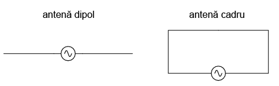
Figure 18: tipuri de antenă (dipol şi cadru)
Deşi cele două tipuri de antene nu sunt altceva decât un circuit deschis (dipol), respecitv un scurt-circuit (cadru), aceşti conductori reprezintă surse eficiente de câmpuri electromagnetice atunci când sunt conectate la surse de curent alternativ cu o frecvenţă corespunzătoare. Cei doi conductori ai antenei dipol joacă rolul unui condensator (doi conductori separaţi de un dielectric). Dispersia câmpului electric este însă permisă, spre deosebire de condensatoarele propriu-zise unde acesta este concentrat între două armători.
Circuitul închis al antenei cadru se comportă precum o bobină cu miez (mare) de aer. Din nou, şi în cazul acestei antene, dispersia câmpului este facilitată dinspre antenă spre mediul înconjurător. Acest lucru este în contradicţie cu o bobină propriu-zisă, unde câmpurile magnetice sunt concentrate în interior.
Pe măsură ce antena dipol radiază un câmp electric în spaţiu, va lua naştere un câmp magnetic variabil la unghiuri drepte. În acest fel, câmpul electric este susţinut mai departe în spatiu, iar unda electromagnetică se propagă cu viteza luminii (în vid). Acelaşi lucru este valabil şi pentru antena cadru, cu deosebirea că aceasta radiază iniţial un câmp magnetic şi nu electric. Rezultatul final este însă acelaşi: producerea controlată a unui câmp electromagnetic.
1.6.3 Transmisia şi recepţia undelor electromagnetice
Alimentată de o sursă de curent alternativ de frecvenţă înaltă, o antenă joacă rolul unui dispozitiv de transimisie. Tensiunea şi curentul alternativ sunt convertite în energie sub forma undelor electromagnetice. Antenele pot de asemenea să intercepteze undele electromagnetice şi să transforme energie lor în tensiunea şi curent alternativ. În acest mod de funcţionare, antena joacă rolul unui dispozitiv de recepţie:
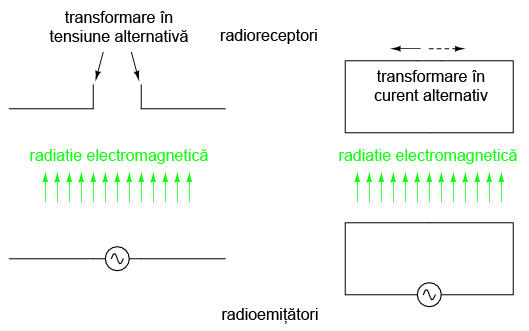
Figure 19: radioemiţători şi radioreceptori
Sumar:
2 Numere complexe
2.1 Introducere
Dacă dorim de exemplu să descriem distanţa dintre două oraşe, putem folosi o singură cifră, în kilometri, sau orice altă unitate de măsură pentru distanţa liniară. Totuşi, dacă vrem să descriem şi modul de deplasare dintr-un oraş în altul, avem nevoie de mai multă informaţie pe lângă distanţă propriu-zisă dintre oraşe; trebuie să indicăm şi direcţia de mers în acest caz.
Tipul de informaţie ce exprimă o singură dimensiune, precum distanţa liniară, poartă denumirea de scalar în matematică. Numerele scalare sunt cele folosite pentru desemnarea valori tensiunii unei bateri, de exemplu, a rezistenţei sau a curentului, dacă vorbim de curent continuu.
Totuşi, atunci când începem să analizăm circuitele electrice în curent alternativ, descoperim că valorile tensiunii, curentului şi chiar a rezistenţei (denumită impedanţă în curent alternativ) nu sunt cantităţi uni-dimensionale precum în cazul circuitelor de curent continuu, ci, aceste cantităţi, fiind dinamice (alternează în direcţie şi amplitudine), posedă alte dimensiuni ce trebuiesc luate în considerare. Frecvenţă şi diferenţă de fază sunt două dintre aceste dimensiuni adiţionale.
Pentru a putea analiza cu succes circuitele de curent alternativ, trebuie să abandonăm numerele scalare şi să luăm în considerare cele complexe, capabile să reprezinte atât amplitudine cât şi faze unei unde în acelaşi timp.
Numerele complexe sunt mai uşor de înţeles dacă sunt trecute pe un grafic. Dacă desenăm o linie cu o anumită lungime (amplitudine) şi unghi (direcţie), obţinem o reprezentare grafică a unui număr complex, reprezentare cunoscută în fizica sub numele de vector:

Figure 20: reprezentarea grafică a numerelor complexe sub formă de vectori; diferite lungimi şi unghiuri
Precum în cazul distenţelor şi direcţiilor de pe o hartă, trebuie să avem un sistem de referinţă pentru ca toate aceste valori să aibă un sens. În acest caz, dreapta înseamnă 0o, iar unghiurile sunt măsurate în direcţie pozitive în sensul invers acelor de ceasornic:
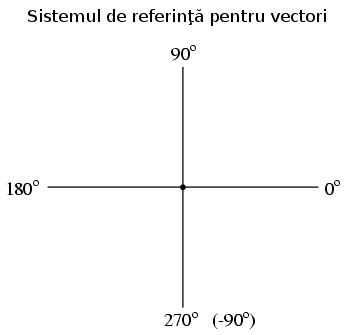
Figure 21: sistemul de referinţă al vectorilor
Sumar:
- Un număr scalar este un tip de obiect matematic uni-dimensional folosit pentru măsurarea temparaturii, distanţei, greutăţii, etc.
- Un număr complex este un tip de obiect matematic bi-dimensional (două dimensiuni) folosit pentru reprezentarea valorii cât şi a direcţiei
- Un vector, este reprezentarea grafică a unui număr complex, posedând direcţie şi sens. Câteodată, în aplicaţiile electrice, mai este folosit şi termenul de fazor, acolo unde unghiul vectorului reprezintă diferenţa de fază între formele de undă
2.2 Vectori şi forme de undă în curent alternativ
Să luăm câteva exemple de reprezentare a formelor de undă în curent alternativ cu ajutorul vectorilor, unde lungimea vectorului reprezintă amplitudinea undei, asfel:
ajutorul vectorilor, unde lungimea vectorului reprezintă amplitudinea

Figure 22: undei
Cu cât amplitudinea formei de undă este mai mare, cu atât lungimea vectorului corespunzător va fi mai mare. Unghiul vectorului, pe de altă parte, reprezintă diferenţa de fază (defazajul) dintre unda considerată si o altă formă de undă de referinţă. De obicei, atunci când exprimăm faza unei forme de undă, punctul de referinţă îl reprezintă forma de undă a sursei de alimentare, considerată a fi Oo. Ţineţi minte că faza este tot timpul o mărime relativă dintre două unde şi nu o proprietate absolută a undelor.
ajutorul vectorilor; faze şi relaţii pentru defazaje de 0, 90, -90

Figure 23: respectiv 180 de grade

Figure 24: relaţia grafică dintre defazaj şi unghiul dintre vectori
Cu cât defazajul dintre formele de undă considerate este mai mare, cu atât este mai mare unghiuld dintre vectorii corespunzători.
Sumar:
- Când este folosit pentru descrierea valorilor în curent alternativ, lungimea unui vector reprezintă amplitudinea undei iar unghiul său reprezintă diferenţa de fază (defazajul) undei faţă de unda de referinţă
2.3 Adunarea simplă a vectorilor
Operaţiile ce pot fi efectuate asupra vectorilor sunt aceleaşi care sunt posibile asupra oricărei mărimi scalare: adunare, scădere, înmulţire, împărţire. Dintre toate acestea, adunarea este probabil cea mai uşor de înţeles. Dacă adunăm doi vectori ce au acelaşi unghiu, lungimile lor se adună precum o mărime scalară:
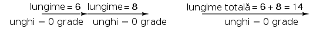
Figure 25: adunarea vectorilor în cazul în care unghiurile lor sunt egale
Similar, dacă două sau mai multe surse de curent alternativ cu aceeiaşi fază sunt conectate în serie, tensiunile lor se adună asemenea tensiunilor bateriilor:
aceeiaşi fază sunt conectate în serie, tensiunile lor se adună asemenea

Figure 26: tensiunilor bateriilor
Observaţi notaţia „+” şi „-” la bornele surselor de alimentare în curent alternativ. Chiar dacă noţiunea de polaritate nu este aceeiaşi precum în curent continuu, aceste notaţii sunt esenţiale pentru scoaterea în evidenţă a fazei undei de referinţă (tensiunea).
Dacă adunăm doi vectori, a căror diferenţe de fază este de 180o, aflaţi prin urmare în opoziţie, lungimile lor se scad, asemenea operaţiei de adunare dintre doi scalari, unul pozitiv şi celălalt negativ:
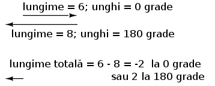
Figure 27: adunarea vectorilor aflaţi în opoziţie de fază (180 grade)
În mod similar, dacă două surse de curent alternativ aflate în antifază (defazaj de 180o sunt conectate în serie, tensiunile lor se scad asemenea bateriilor de curent continuu conectate în opoziţie:
(180 grade) 
Pentru a determina dacă cele două surse se află în opoziţie una faţă de celalată, este nevoie de o examinare atentă atât a polarităţii (+ sau -) cât şi a fazelor. Polarităţile de mai sus tind să indice faptul că cele două tensiuni sunt aditive (de la stânga spre dreapta: - şi + la sursa de 6 V, - şi + la sursa de 8 V). Chiar dacă aceste notaţii ar indica în mod normal un efect aditiv într-un circuit de curent continuu (cele două tensiuni „lucrează” împreună pentru a produce o tensiune rezultată mai mare), în acest circuit de curent alternativ, cele două tensiuni se scad pentru a da tensiunea finală, deoarece faza uneia dintre ele este de 0o, iar a celeilalte de 180o. Rezultatul total este o tensiune de 2 V, la 180o, sau, -2 V la 0o.
Un alt exemplu în care tensiunile se scad este următorul:
(180 grade) 
După cât am văzut mai sus, există două moduri de reprezentare a rezultatului final:
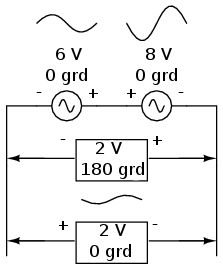
Figure 28: cele două moduri de reprezentare a tensiunilor alternative; 0 sau 180 de grade cu semnul schimbat
O inversare a firelor sursei de curent alternativ este echivalentă cu schimbarea fazei acelei surse cu 180 de grade:
polaritatea schimbată şi faza modificată cu 180 de grade faţă de
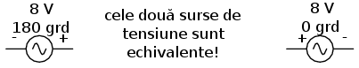
Figure 29: cealaltă
2.4 Adunarea complexă a vectorilor
Dacă adunăm doi vectori cu unghiuri diferite, lungimile lor se adună diferit faţă de cele scalare:

Figure 30: adunarea vectorilor cu unghiuri diferite
Dacă două tensiuni alternativ, defazate cu 90o între ele, sunt conectate în serie, amplitudinile lor nu se adună sau scad direct precum valorile scalare în cazul curentului continuu. În schimb, aceste tensiuni sunt valori complexe, şi, precum în cazul vectorilor de mai sus a căror adunare se realizează trigonometric, o sursă de 6 V la 0o adunată (conectată în serie) cu o sursă de 8 V la 90o, rezultă într-o tensiune de 10 V a cărei fază este de 53.13o:

Figure 31: adunarea tensiunilor alternative aflate în diferenţă de fază
Prin comparaţie cu circuitele de curent continuu, acest lucru poate părea ciudat la început. De exemplu, cu ajutorul unui voltmetru, putem citi indicaţiile de 6 şi respectiv 8 volţi la borenele celor două surse de curent alternativ, dar tensiunea totală indicată de acesta va fi de „doar” 10 volţi!
2.5 Notaţia polară şi rectangulară a numerelor complexe
Pentru a putea lucra cu aceste numere complexe fără a fi nevoiţi să desenăm tot timpul vectori, avem nevoie de o notaţie matematică standard. Există două forme pentru notaţia numerelor complexe: polară şi rectangulară.
- Notaţia polară
Forma polară constă în exprimarea unui număr complex prin lungimea (cunoscută şi sub numele de dimensiune, valoare absolută, modul) şi unghiul vectorului (desemnat de obicei prin simbolul ∠). Să luăm două exemple de vectori împreună cu notaţia lor polară:

Figure 32: notaţia polară a vectorilor; exemple
Orientarea standard pentru unghiurile vectorilor în curent alternativ defineşte unghiul de 0 grade ca fiind în dreapta (axa orizontală), 90o sus, 180o stânga, 270o jos. Atenţie, vectorii a căror unghi este „în jos” pot fi reprezentaţi cu ajutorul notaţiei polare ca fiind vectori pozitivi cu un unghi de peste 180o, sau ca numere negative cu unghiuri sub 180o. De exemplu, putem spune că un vector cu unghiul ∠270o (direct în jos) are unghiul de -90o (notaţie echivalentă). Vectorul de mai sus (7.81 ∠230.19o) poate fi descris de asemenea prin 7.81 ∠-129.81o.
Figure 33: sistemul de referinţă pentru unghiul vectorilor în curent alternativ
- Notaţia rectangulară
Forma rectangulară constă în reprezentarea vectorului prin componentele sale orizontale şi verticale. În esenţă, vectorului unghiular este considerat a fi ipotenuza unui unghi drept şi descris cu ajutorul lungimilor laturilor opuse respectiv adiacente. În loc să descrie lungimea şi direcţia unui vector prin precizarea lungimii şi a unghiului, acesta este descris în termenii „cât de departe în stânga/dreapta” şi „cât de departe „sus/jos”.
Aceste două valori dimensionale (orizontală şi verticală) sunt simbolizate prin două valori numerice. Pentru a putea face distincţie între cele două dimensiuni, cea verticală este însoţită de notaţia „i” (în matematica pură) sau „j” (în domeniul electric). Aceste litere nu reprezintă o variabilă fizică (precum curentul instantaneu, simbolizat de asemenea prin „i”), ci sunt operatori matematici folosiţi pentru a face distincţia dintre componenta verticală şi cea orizontală a unui vector. Ca şi număr complex complet, valorile cele două componente sunt scrise ca şi sumă:

Figure 34: exprimarea vectorilor folosind notaţia rectangulară
Componenta orizontală este denumită componentă reală deoarece aceasta este compatibilă cu numerele normale, scalare („reale”). Componenta verticală este denumită componenta imaginară, deoarece această dimensiune se află pe o altă direcţie şi nu are nicio legătură cu scara numerelor reale.

Figure 35: sistemul de referinţă vectorial cu notarea axelor reale şi imaginare
Cele două axe poartă denumirea de axa reală respectiv axa imaginară:

Figure 36: axa reală şi cea imaginară a unui sistem de referinţă vectorial
Oricare dintre cele două forme poate fi folosită pentru numerele complexe. Principalul motiv pentru care există două sisteme de notaţie valide se datorează faptului că forma rectangulară este uşor de folosit pentru adunare şi scădere, iar forma polară pentru înmulţire şi împărţire.
- Transformarea din formă polară în formă rectangulară
Conversia de la o formă la alta se poate realiza pe cale trigonometrică destul de uşor. Pentru a transforma forma polară în forma rectangulară, aflăm mai întâi componenta reală prin înmulţirea lungimii polare cu cosinusul unghiului, iar componenta imaginare prin înmulţirea lungimii polare cu sinusul unghiului. Acest lucru poate fi înţeles mult mai uşor dacă desenăm valorile ca şi laturi ale unui triunghi dreptunghic, ipotenuza acestuia reprezentând exact vecotorul analizat (lungimea şi unghiul său faţă de orizontală reprezintă forma sa polară), latura orizontală fiind componenta reală, iar latura verticală reprezentând componenta imaginară:

Figure 37: relaţia dintre forma polară şi cea rectangulară

Figure 38: transformarea formei polare în formă rectangulară
- Transformarea din formă rectangulară în formă polară
Pentru a realiza conversi de la forma rectangulară la cea polară, găsim mai întâi lungimea polară folosind teorema lui Pitagora, fiindcă lungimea polară este ipotenuza unui triunghiu dreptunghic, iar componenta reală şi cea imaginară sunt reprezentate de latura adiacentă respectiv cea opusă. Găsim unghiul ca fiind raportul dintre arctangenta componentei imaginare şi componenta reală:
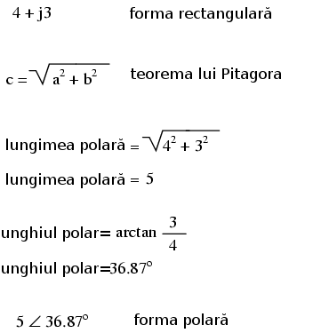
Figure 39: transformarea formei rectangulare în formă polară
Sumar:
- Notaţia polară desemnează un număr complex ca fiind compus din lungimea şi direcţia vectorului faţă de punctul de plecare
- Notaţia rectangulară denesemnează un număr complex ca fiind compus din dimensiunile orizontale şi verticale ale vectorului
- În notaţia rectangulară, prima valoarea este componenta „reală” (dimensiunea orizontală a vectorului) iar a doua este componenta „imaginară” (dimensiunea verticală a vectorului). Componenta imaginară este desemnată prin alăturarea literei „j” (operatorul j) valorii imaginare
- Atât forma polară cât şi cea rectangulară a numerelor complexe poate fi reprezentată grafic sub forma unui triunghi, cu ipotenuza reprezentând vectorul însăşi (formă polară: lungimea ipotenuzei = lungimea vectorului; unghiul faţă de orizontală = unghiul vectorului), latura orizontală reprezentând componenta „reală”, iar latura opusă, verticală, reprezentând componenta rectangulară „imaginară”
2.6 Aritmetica numerelor complexe
- Adunarea numerelor complexe
Pentru adunarea numerelor complexe, adunăm pur şi simplu componentele reale pentru a determina componenta reală a sumei cele două numere complexe; acelaşi lucru este valabil şi pentru componenta imaginară:

Figure 40: adunarea numerelor complexe
- Scăderea numerelor complexe
Pentru scăderea numerlor complexe, se aplică acelaşi principiu de mai sus, doar cu scădere în loc de adunare:

Figure 41: scăderea numerelor complexe
- Înmulţirea numerelor complexe
Pentru operaţiile de înmulţire şi împărţire forma preferată este cea polară. Atunci când efectuăm înmulţirea numerelor complexe sub formă polară, înmulţim pur şi simplu dimensiunile numerelor complexe pentru determinarea dimensiuni produsului şi adunăm unghiurile numerelor complexe pentru determinarea unghiului final al produsului:

Figure 42: înmulţirea numerelor complexe
- Împărţirea numerelor complexe
Pentru efectuarea împărţirii numerelor complexe, calculăm pur şi simplu raportul dintre dimensiunea primului număr complex cu dimensiunea celui de al doilea pentru aflarea dimensiunii final a raportului, şi scădem unghiul celui de al doilea număr complex din primul pentru a afla unghiul final al raportului dintre cele două numere complexe:
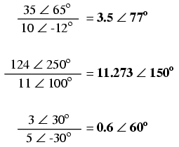
Figure 43: împărţirea numerelor complexe
- Reciproca (inversa) numerelor complexe
Pentru a obţine reciproca (1/x), sau inversa unui număr complex, calculăm raportul dintre valoarea scalară 1 (unghi zero) şi numărul complex sub formă polară:
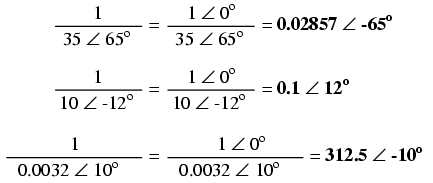
Figure 44: reciproca (inversa) numerelor complexe
2.7 Clarificări legate de polaritatea curentului alternativ
2.7.1 Polaritatea căderilor de tensiune
Numerele complexe sunt folositoare pentru analiza circuitelor de curent alternativ, deoarece reprezintă o metodă comodă de reprezentare simbolică a defazajului dintre mărimile curentului alternativ, precum tensiunea şi curentul. Totuşi, pentru majoritatea dintre noi, echivalenţa dintre abstractizarea vectorială şi valorile reale dintr-un circuit este destul de greu de înţeles. În acest capitol, am văzut că sursele de tensiune de curent alternativ sunt caracterizate atât prin valoarea tensiunii sub formă complexă (amplitudine şi unghi de fază) cât şi prin polaritatea tensiunii. Dat fiind faptul că în cazul curentului alternativ nu există o „polaritate” dată, precum în cazul curentului continuu, aceste notaţii de polaritate şi relaţia acestora cu unghiul de fază poate crea confuzii. Această secţiune este scrisă pentru a încerca clarificarea unora dintre aceste probleme.
Tensiunea este o cantitate relativă. Atunci când măsurăm o tensiune, putem alege modul de conectare a voltmetrului la sursa de tensiune, din moment ce există două puncte între care măsurăm tensiunea şi două sonde pentru oricare voltmetru. În cazul circuitelor de c.c., polaritatea şi valoarea surselor de tensiune se specifică exact folosind simbolurile „+” şi „-”. În cazul sondelor aparatului de măsură, acestea sunt colorate cu roşu, respectiv negru. Dacă un voltmetru digital indică o tensiune de c.c. negativă, putem fi siguri că sondele de test au fost conectate invers (roşu la „-” şi negru la „+”).
Polaritatea bateriilor este specificată prin intermediul simbolisticii specifice acestora: linia mai scurtă reprezintă tot timpul terminalul negativ (-), iar linia orizontală mai lungă este tot timpul borna pozitivă (+):
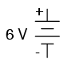
Figure 45: simboul şi polaritatea unei baterii electrice
Cu toate că, din punct de vedere matematic, reprezentarea tensiunii bateriei printr-o valoare negativă şi polaritatea bornelor inversată este corectă, acest lucru nu este convenţional:

Figure 46: simboul şi polaritatea unei baterii electrice
Interpretarea unei astfel de notaţii ar fi mai usoară dacă polarităţile „+” şi „-” ar fi văzute ca şi puncte de referinţă pentru sondele voltmetrului. Polaritatea „+” însemnând „roşu” iar „-” însemnând „negru”. Un voltmetru conectat la bateria de mai sus cu sonda roşie la borna de jos şi sonda neagră la borna de sus, ar indica într-adevăr o tensiune negativă (-6 V).
În cazul circuitelor de c.a. totuşi, nu lucrăm cu valori negative ale tensiunii. În schimb, descriem relaţia dintre două tensiuni prin intermediul fazei: defazarea în timp dintre două forme de undă. Nu descriem niciodată o tensiune de c.a. printr-o valoare negativă, deoarece utilizarea notaţiei polare permite existenţa vectorilor cu sens invers. Dacă două tensiuni de c.a. sunt opuse (+6 V şi -6 V pentru c.c.), spunem că ele sunt defazate cu 1800 între ele, sau că se găsesc în antifază.
Totuşi, tensiunea este o valoare relativă între două punce, şi putem alege modul de conectare a aparatului de măsură între aceste două puncte. Semnul matematic al indicaţiei unui voltmetru în cazul unei măsurători în c.c. are sens doar în contextul modului de conectare al celor două sonde (la care terminal este conectată sonda roşie, şi la care terminal cea neagră). Asemănător, unghiul de fază a unui semnal de c.a are sens doar dacă ştim care din cele două puncte este considerat punctul de „referinţă”. Din această cauză, polarităţile „+” şi „”¨sunt adesea folosite pentru bornele surselor de c.a.: pentru a specifica punctul de referinţă al unghiului de fază.
Sumar:
3 Reactanta inductiva
3.1 Circuite rezistive în curent alternativ
Să considerăm un circuit de curent alternativ pur rezistiv, caz în care tensiunea şi curentul sunt în fază (unghiul de defazaj dintre ele este 0o):

Figure 47: circuit de curent alternativ pur rezistiv - tensiunea şi curentul sunt în fază
Dacă trecem curentul şi tensiunea din circuitul de mai sus pe un grafic, acesta va arăta aproximativ asfel:

Figure 48: graficul tensiunii şi al curentului în cazul unui circuit circuit de curent alternativ pur rezistiv
Deoarece rezistorul se opune pur şi simplu deplasării electronilor prin circuit în mod direct, în orice moment din timp, forma de undă a căderii de tensiune pe rezistor este exact în fază cu forma de undă a curentului prin acesta. Putem lua în considerare orice punct de pe axa orizontală a graficului şi compara valorile curentului şi ale tensiunii între ele (aceste puncte poartă denumirea de valori instantanee). Asfel, atunci când valoarea instantanee a curentului este zero, valoarea instantanee a tensiunii este şi ea zero. De asemenea, atunci când curentul prin rezistor atinge valoarea sa maximă pozitivă, tensiunea la bornele sale este şi ea la valoarea sa maximă pozitivă. În orice punct de-a lungul formelor de undă, putem aplica legea lui Ohm pentru valorile instantanee a curentului şi tensiunii.
Putem de asemenea să calculăm puterea disipată de rezistor şi să completăm graficul asfel:
unui circuit circuit de curent alternativ pur rezistiv 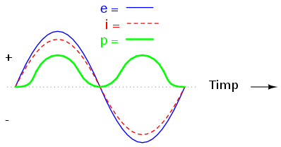
Se poate observa de pe grafic faptul că puterea nu are niciodată o valoarea negativă. Atunci când valoarea curentului este pozitivă, şi tensiunea este pozitivă, produsul celor două (p=ie) fiind prin urmare pozitiv. Atunci când curentul este negativ, şi tensiunea este negativă, ceea ce se traduce din nou printr-un produs pozitiv între cele două. Această polaritate unică ne spune de fapt că rezistorul disipă tot timpul putere ce este generată de sursă şi degajată de acesta sub formă de căldură. Indiferent de valoarea curentului, pozitivă sau negativă, un rezistor va disipa tot timpul energie.
3.2 Circuite inductive în curent alternativ
Bobinele au în schimb un comportament diferit faţă de cel al rezistorilor atunci când sunt introduse în circuit. Faţă de rezistor, care doar se opun treceri curentului prin acel punct din circuit în care aceştia sunt conectaţi (prin dezvoltarea unei căderi de tensiune direct proporţionale cu valoarea curentului), bobinele se opun variaţiei curentului prin ele, prin dezvoltarea unei căderi de tensiune direct proporţionale cu rata de variaţie a curentului. În conformitate cu legea lui Lenz, polaritatea aceastei tensiuni induse este asfel încât valoarea curentului să se menţină la valoarea curentă, şi anume, dacă valoarea curentului creşte , tensiunea indusă se va opune deplasării electronilor; în cazul descreşterii curentului, polaritatea este inversă pentru a putea împinge electronii şi a se opune descreşterii curentului. Această opoziţie la variaţia curentului poartă denumirea de reactanţă, în loc de rezistenţă.
Matematic, relaţia dintre căderea de tensiune pe o bobină şi rata variaţiei curentului prin aceasta, se exprimă asfel:
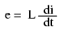
Figure 49: relaţia dintre căderea de tensiune pe o bobină şi rata variaţiei curentului prin aceasta
Expresia di/dt reprezintă derivata curentului cu timpul, adică rata de variaţia a curentului instantaneu (i) cu timpul, în amperi per secundă. „L” reprezintă inductanţă în Henry, iar „e” este tensiunea instantanee. Câteodată în loc de „e” se mai foloseşte şi „v”, dar cele două notaţii sunt echivalente.
Să analizăm un circuit pur inductiv simplu în curent alternativ. În acest, curentul este defazat în urmă faţă de tensiune cu 90o:

Figure 50: circuit electric pur inductiv simplu în curent alternativ
Graficul tensiunii şi al curentului în acest caz arată aproximativ asfel:

Figure 51: graficul formelor de undă pentru un circuit electric pur inductiv simplu în curent alternativ
Reţineţi faptul că valoarea căderii de tensiune pe bobină este în funcţie de variaţia curentului prin aceasta. Prin urmare, tensiunea instantanee este zero ori de câte ori curentul instantaneu este la valoarea maximă, de vârf (pozitivă sau negativă), deoarece în acest caz variaţia, sau panta, este zero; tensiunea instantanee are o valoare maximă, de vârf, atunci când panta curentului instanteneu, sau variaţia acestuia este maximă (intersecţia formei de undă cu axa orizontală a timpului). Datorită acestui fapt, formele de undă sunt defazate cu 90o. Dacă ne uităm pe grafic, observăm că unda de tensiune are un mic „avantaj” faţa de una de curent; prin urmare, spunem că tensiunea este defazată cu 90o înaintea curentului, sau echivalent, curentul este defazat cu 90o în urma tensiunii.
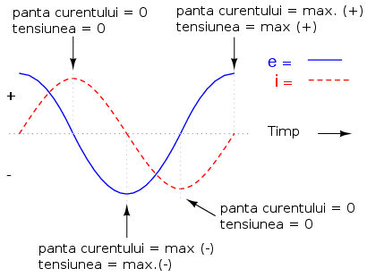
Figure 52: graficul formelor de undă pentru un circuit electric pur inductiv simplu în curent alternativ - explicaţii
Lucrurile devin şi mai interesante atunci când introducem şi forma de undă a puterii pe grafic:
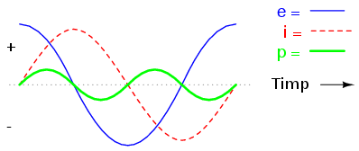
Figure 53: graficul formelor de undă pentru un circuit electric pur inductiv simplu în curent alternativ
Deoarece puterea instantanee reprezintă produsul dintre tensiunea şi curentul instantaneu (p=ie), puterea este egală cu zero atunci când curentul sau tensiunea instantanee este zero. Ori de câte ori curentu şi tensiunea instantanee sunt ambele pozitive sau ambele negative, puterea este şi ea pozitivă. Dar, datorită faptului că cele două unde de tensiune, respectiv curent, sunt defazate între ele cu 90o, există momente în care una este pozitivă şi cealaltă negativă, rezultatul fiind o putere instantanee negativă:
Dar ce înseamnă putere negativă? Înseamnă că bobina generează putere înapoi în circuit, iar putere pozitivă înseamnă că aceasta absoarbe putere din circuit. Acest lucru dovedeşte faptul că bobina nu „consumă” putere precum o face un rezistor (ce o disipă sub formă de căldură), ci puterea absorbită din circuit este stocată sub formă de câmp magnetic. În cazul de faţă, datorită faptului că duratele de putere pozitivă şi negativă sunt perfect egale, bobină generează aceeiaşi cantitate de putere înapoi în circuit pe care absorbit-o într-o perioadă completă de timp. Practic, reactanţă (rezistenţă în curent continuu) bobine nu disipă energie, sau echivalent, energia disipată de aceasta este zero. Atenţie, cazul de sus este cel al unei bobine ideale, cu rezistenţă zero.
Opoziţia unei bobine faţă de variaţia curentului se traduce printr-o opoziţie faţă de curentul alternativ în general, curent ce este prin definiţie variabil în magnitudine instantanee şi direcţie (polaritate). Această opoziţie faţă de curent alternativ este similară rezistenţei, dar diferită prin faptul că rezultă întotdeaună într-o diferenţă de fază între curent şi tensiune, iar puterea disipată este zero. Datorită acestei diferenţe, are şi o denumire specificiă: reactanţă. Reactanţă în curent alternativ se exprimă în ohmi, la fel ca şi rezistenţa, doar că simbolul matematic este X, în loc de R. Pentru a fi mai exacţi, reactanţa asociata cu o bobină poartă numele de reactantă inductivă şi este simbolizată prin XL.
Din moment ce căderea de tensiune pe bobine este proporţională cu rata de variaţie a curentului, căderea de tensiune va fi mai mare pentru variaţii mai rapide de curent, şi mai mică pentru variaţii mai lente. Acest lucru înseamnă că reactanţă în ohmi pentru oricare bobină, este direct proporţională cu frecvenţă curentului alternativ. Matematic, acest lucru se exprimă asfel:
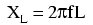
Figure 54: formula matematică pentru calcularea reactanţei inductive
Dacă avem o bobină de 10 mH şi o conectăm într-un circuit cu frecvenţa variabilă, asfel: 60, 120 şi 2.500 Hz, reactanţa (inductivă) acesteia în fiecare dintre cele trei cazuri este următoarea:
| Frecvenţa (Hertz) | Reactanţă (Ohm) |
|---|---|
| 60 | 3.7699 |
| 120 | 7.5398 |
| 2500 | 157.0796 |
- Viteza unghiulară a sistemului
În formula de calcul a reactanţei inductive, termenul „2πf” are un înţeles aparte. Este numărul de radiani pe secundă la care se „roteşte” curentul alternativ, dacă ne imaginăm că o perioadă a curentului alternativ reprezintă o rotaţie completă. Radianul este o unitate de măsură unghiulară: într-o rotaţie completă există 2π radiani, echivalentul a 360o într-un cerc complet. Dacă generatorul ce produce curentul alternativ are doi poli, va produce o rotaţie completă pentru fiecare rotaţie completă a arborelui, adică la fiecare 2π radiani, sau 360o. Dacă această constantă, 2π, este înmulţită cu frecvenţă în Herzi (număr de rotaţii pe secundă), rezultatul va reprezenta o valoare în radiani per secundă, valoare cunoscută sub numele de viteza unghiulară a sistemului de curent alternativ.
Viteza unghiulară poate fi reprezentată prin expresia 2πf, sau poate fi reprezentată folosind propriul său simbol, şi anume, litera grecească Omega, ω. Asfel, formula reactanţei, XL = 2πfL, poate fi rescrisă asfel: XL = ωL.
Trebuie înţeles faptul că această „viteză unghiulară” este o expresie a vitezei de rotaţie a formelor de undă în curent alternativ, o rotaţie completă fiind egală cu 2π radiani, şi nu este neapărat viteza actuală a arborelui generatorului ce produce curentul alternativ. Dacă generatorul este format din mai mult de doi poli, viteza unghiulară va fi multiplu de viteza arborelui. Din acest motiv, viteza unghiulară ω este câteodaţa exprimata sub formă de radiani electrici per secundă, pentru a face diferenţă între aceasta şi rotaţia mecanică.
Indiferent de modul în care reprezentăm viteza unghiulară a sistemului, este ştiut faptul că ractanţa bobinei este direct proporţională cu aceasta. Odată cu creşterea frecvenţei sistemului de curent alternativ (creşterea vitezei de rotaţie a arborelui generatorului), opoziţia bobinei faţă de curgerea curentului va fi tot mai mare, şi invers. Curentul alternativ într-un circuit inductiv simplu este egal cu raportul dintre tensiunea şi reactanţa inductivă, asemănător modului de calcul în curent continuu, sau în circuitele rezistive în curent alternativ; să considerăm un exemplu:
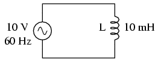
Figure 55: circuit electri în curent alternativ pur inductiv
Totuşi, trebuie să fim atenţi la faptul că tensiunea şi curentul nu sunt în fază în acest caz. După cum am văzut, diferenţa de fază dintre cele două unde este de 90o. Dacă reprezentăm aceste unghiuri de fază matematic, sub forma numerelor complexe, observăm că opoziţia unei bobine faţă de curent posedă şi un unghi al fazei:

Figure 56: formule
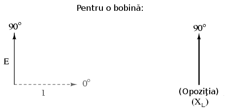
Figure 57: curentul este în urma tensiunii în cazul bobinei
Matematic, spunem că unghiul de fază a opoziţiei bobinei faţă de curent este de 90o, ceea ce înseamnă o mărime imaginară pozitivă. Acest unghi de fază este foarte important în analiza circuitelor electrice, în special al celor complexe (în curent alternativ), unde există o interacţiune între rezistenţă şi reactanţă. Se va dovedi extrem de benefică reprezentarea opoziţiei faţă de curent a oricărei componente sub forma numerelor complexe şi nu sub forma cantităţilor scalare.
Sumar:
- Reactanţa inductivă reprezintă opoziţia bobinei faţă de curentul alternativ datorată defazajului ce apare la stocarea şi eliberarea energiei sub formă de câmp magnetic. Simbolul reactanţei este „X”, iar unitatea de măsură este ohm-ul, exact ca în cazul rezistenţei (R)
- Matematic, reactanţa inductivă se calculează folosind formula: XL = 2πfL
- Viteza unghiulară a unui circuit electric în curent alternativ reprezintă un alt mod de exprimare a frecvenţei sale; unitatea de măsură o reprezintă radiani electrici per secundă în loc de numărul de perioade per secundă. Simbolul este litera grecească „omega”, ω
- Reactanţa inductivă creşte odată cu creşterea frecvenţei, şi invers. Cu alte cuvinte, cu cât frecvenţa este mai mare, cu atât mai mare este opoziţia faţă de deplasarea electronilor (curent) în curent alternativ
3.3 Circuite rezistiv-inductive serie. Impedanţa
În secţiunile precedente, am văzut ce se întâmplă într-un circuit electric de curent alternativ simplu pur rezistiv, respectiv pur inductiv. Acum vom considera ambele componente legate în serie şi vom studia efectele lor. Luăm aşadar ca şi exemplu un curcuit rezistiv-inductiv, caz în care curentul este defazat în urma tensiunii cu un unghi cuprins între 0o şi 90o
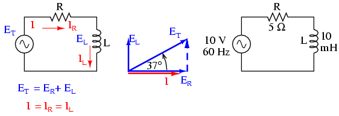
Figure 58: circuit electric rezistiv-inductiv serie în curent alternativ
Rezistorul impune o rezistenţă de 5 Ω faţă de curent, indiferent de valoarea frecvenţei, iar bobina va oferi o reactanţă de 3.7699 Ω faţă de curentul alternativ la o valoare a frecvenţei de 60 Hz. Deoarece rezistenţa rezistorului este un număr real (5 Ω ∠ 0o, sau 5 + j0 Ω), iar reactanţa bobinei este un număr imaginar (3.7699 Ω ∠ 90o, sau 0 + j3.7699 Ω), efectul total (combinat) al celor două componente va crea o opoziţie faţă de curent egală cu suma complexă a celor două numere. Această opoziţie combinată va fi un vector. Pentru a putea exprima mai clar această opoziţie, avem nevoie de un nou termen pentru opoziţia faţă de curent pe lângă rezistenţă şi reactanţă. Acest termen poartă numele de impedanţă, iar simbolul lui este „Z”; unitatea de măsură este de asemenea ohm-ul, la fel ca şi a rezistenţei şi a reactanţei. În exemplul de mai sus, impedanţa totală a circuitului este:

Figure 59: formule
Relaţia dintre impedanţă, curent şi tensiune este similară rezistenţei din legea lui Ohm:

Figure 60: Leagea lui Ohm pentru circuite în curent alternativ
De fapt, această expresie este o formă a legii lui Ohm mult mai cuprinzătoarea (mai generală) decât cea considerată în curent continuu (E=IR), la fel precum impedanţă este o expresie mult mai cuprinzătoare a opoziţiei faţă de deplasarea electronilor decât rezistenţa. Orice rezistenţă şi orice reactanţă, separate sau în combinaţii serie/paralel, pot fi şi trebuie exprimate ca şi o singură impedanţă într-un circuit de curent alternativ.
Pentru aflarea valorii curentului în circuitul de mai sus, trebuie mai întâi să impunem o referinţa pentru unghiul de fază a sursei de tensiune, iar în mod normal, aceasta se presupune a fi zero.
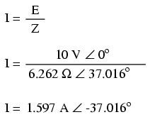
Figure 61: formule
La fel ca şi în cazul circuitelor pur inductive, curentul este defazat în urma tensiunii (sursei), cu toată că de data aceasta defazajul nu este atât de mare, doar 37.016o, faţă de 90o în cazul circuitului pur inductiv.
electric rezistiv-inductiv serie în curent alternativ 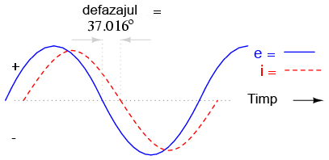
Relaţiile de fază pentru rezistor şi bobină, luate individual, nu s-au modificat. Caderea de tensiune la bornele rezistorului şi curentul prin acesta sunt in fază (defazaj de 0o), iar defazajul dintre tensiune şi curent în cazul bobinei este de +90o. Putem verifica matematic acest lucru:
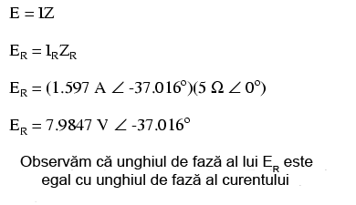
Figure 62: formule
În formula de mai sus ZR semnifică impedanţa rezistivă, şi este acelaşi lucru cu rezistenţa. Tensiunea şi curentul prin rezistor sunt în fază, adică au acelaşi unghiu de fază.

Figure 63: formule
Tensiunea la bornele bobinei are un unghiu de fază de 52.984o (faţă de unghiul de fază de referinţă, 0o), iar curentul prin bobina are un unghiu de fază de -37.016o, o diferenţă de exact 90o între cele două. Acest lucru ne spune că E şi I sunt defazate între ele tot cu 90o (doar în cazul bobinei).
Putem de asemenea să demonstrăm matematic că rezultatul sumei acestor valori complexe este tensiunea totală, aşa cum rezultă din aplicarea legii lui Kirchhoff:
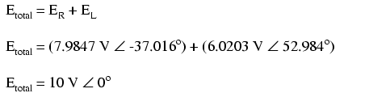
Figure 64: formule
- Aplicarea metodei tabelului
Cu toate aceste valori rezultate, chiar şi pentru un circuit simplu precum este acesta, este mai uşor să aplicăm metoda tabelului. Tabelul va conţine valorile pentru tensiune (E), curent (I) şi impedanţă (Z) pentru fiecare component în parte. Nu vom insera valorile propriu-zise ale rezistenţei şi inductanţei în ohm sau Henry, ci forma lor complexă:

Figure 65: tabel
Deşi nu este neapărat necesar, este folositor să trecem atât forma rectangulară (x + jy) cât şi pe cea polară (x ∠y) în fiecare tabel. Dacă folosim un calculator pentru a realiza automat aceste calcule complexe fără a mai fi nevoiţi să facem conversia între cele două forme, atunci această documentaţie suplimentară nu este deloc necesară. Totuşi, dacă suntem nevoiţi să efectuăm calculele „de mână”, atunci scrierea ambelor forme în tabel se va dovedi într-adevăr folositoare.
După ce am introdus în tabel toate datele cunoscute, putem trece la rezolvarea circuitului asemănător circuitelor de curent continuu: determinăm impedanţa totală din impedanţele individuale. Din moment ce acesta este un circuit serie, ştim că opoziţia faţă de curgerea electronilor (rezistenţă sau impedanţă) este aditivă, iar rezultatul îl reprezintă opoziţia totală:

Figure 66: tabel
Acum, după ce tensiunea şi impedanţa totală ne sunt cunoscute, putem aplica legea lui Ohm (I=E/Z) pentru determinarea curentului total din circuit:

Figure 67: tabel
La fel ca în cazul circuitelor de curent continuu, curentul total într-un circuit de curent alternativ serie este acelaşi prin oricare din componentele circuitului. Acest lucru este în continuare adevărat, deoarece într-un circuit serie există doar o singură cale pentru curgerea electronilor, prin urmare, rata lor de deplasare trebuie să fie uniformă în întreg circuitul. Prin urmare, putem trece valorile curentului total pentru fiecare component în parte (rezistor şi bobină) în tabel:
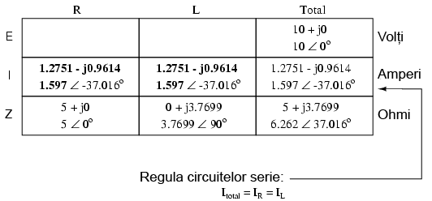
Figure 68: tabel
Acum, tot ceea ce mai avem de făcut este să completăm căderea de tensiune pe rezistor şi pe bobină. Aflarea acestor valori se realizează folosind legea lui Ohm (E=IZ), aplicată pe fiecare coloană a tabelului:
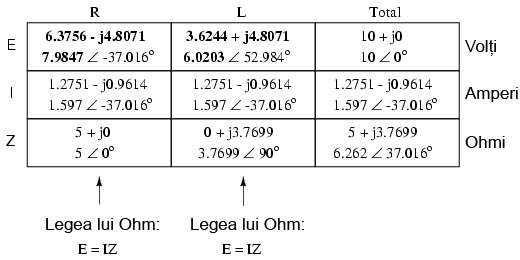
Figure 69: tabel
Tabelul este acum complet. De observat că am aplicat exact aceleaşi reguli ca şi în analiza circuitelor electrice în curent continuu, cu diferenţa ca toate valorile trebuie exprimate şi calculate sub formă complexă şi nu scalară precum era cazul în curent continuu. Atâta timp cât diferenţa de fază este reprezentată corect, nu există nicio diferenţă fundamentală între analiza unui circuit de curent alternativ faţă de unul în curent continuu.
- Indicaţia instrumentelor de măsură
Să luăm acum în considerare relaţie dintre valorile calculate mai sus şi indicaţia tensiunii şi a curentului dată de instrumentele de măsură. Valorile din tabel care corespund cu valorile citite de pe un instrument de măsură sunt cele sub formă polară, nu rectangulară! Cu alte cuvinte, dacă am conecta un voltmetru la bornele rezistorului din circuit pentru aflarea căderii de tensiune, acesta va indica 7.9847 V (valoarea sub formă polară), nu 6.3756 V (valoarea reală sub formă rectangulară) şi nici 4.8071 V (valoarea imaginară sub formă rectangulară). Pentru a exprima acest lucru grafic, aparatele de măsură „indică” pur şi simplu lungimea vectorului (pentru tensiune sau curent). Notaţia rectangulară, deşi este mai uşor de folosit pentru operaţiile aritmetice de adunare şi scădere, este o formă de notaţia mai abstractă decât forma polară pentru măsurătorile reale. Dacă ar fi să folosim doar o singură notaţie, cea mai bună alegere ar fi cea polară, pentru că este singura ce are legătură directă cu măsurătorile reale.
- Diagrama impedanţei
Impedanţa (Z) unui circuit serie R-L poate fi calculată cunoscând rezistenţă (R) şi reactanţa inductivă (XL). Din moment ce E=IR, E=IXL şi E=IZ, rezistenţa, reactanţa şi impedanţă sunt proporţionale cu tensiunea. Prin urmare, diagrama fazorială a tensiunii poate fi înlocuită cu o diagramă similară a impedanţei:
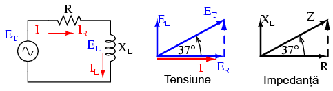
Figure 70: diagrama fazorială a impedanţei într-un circuit R-L serie
- Exemplu
Găsiţi impedanţă totală a circuitului format dintr-un rezistor de 40 Ω conectat în serie cu o bobină de 79.59 mH, la o frecvenţă a sursei de alimentare de 60 Hz. Răspuns: Z = 40 + j30 = 50∠36.87o.
Sumar:
- Impedanţa reprezintă valoarea totală a opoziţiei faţă de curentul electric şi este suma complexă (vector) a rezistenţei (reale) şi a reactanţei (imaginară). Simbolul este litera „Z” iar unitate sa de măsură este Ohm-ul, la fel ca a rezistenţei (R) şi a reactanţei (X)
- În analiza circuitelor, impedanţele (Z) serie se comportă precum rezistenţele (R) serie: se adună pentru a forma impedanţa totală. Ţineţi minte să efectuaţi toate calculele sub formă complexă, nu scalară! ZTotal = Z1 + Z2 + . . . Zn
- O impedanţă pur rezistivă va avea tot timpul un unghi de fază de exact 0o (ZR = R Ω ∠ 0o)
- O impedanţă pur inductivă va avea tot timpul un unghi de fază de exact +90o (ZL = XL Ω ∠ 90o)
- Legea lui Ohm pentru circuitele de curent alternativ: E=IZ; I=E/Z; Z=E/I
- Când într-un circuit avem şi rezistori şi bobine, impedanţă totală va avea un unghi de fază între 0o şi +90o. Curentul din circuit va avea un unghi de fază între 0o şi -90o
- Circuitele serie în curent alternativ posedă aceleaşi proprietăţi fundamentale precum circuitele de curent continuu: curentul este acelaşi prin întreg circuitul, căderile de tensiune se adună pentru a forma tensiunea totală din circuit, iar impedanţele se adună pentru a forma impedanţa totală
3.4 Circuite rezistiv-inductive paralel în curent alternativ
Să luăm în considerare aceleaşi componente din circuitul serie, dar să le conectăm de data aceasta în paralel:
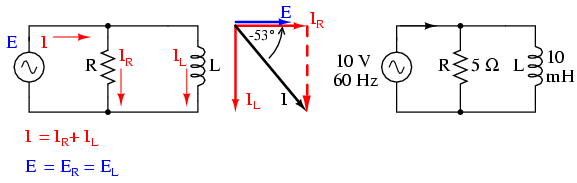
Figure 71: circuit rezistiv-inductiv paralel în curent alternativ
Deoarece sursa de tensiune are aceeiaşi frecvenţă ca şi în cazul circuitului serie, iar rezistorul şi bobina au aceleaşi valori ale rezistenţei şi inductanţei, acestea trebuie sa aibă aceleaşi valori ale impedanţei. Prin urmare, începem completarea tabelului cu aceleaşi valori date:
Figure 72: tabel
Singura diferenţă faţă de cazul precedent, este că de data aceasta vom aplica regulile circuitelor paralele, şi nu cele ale circuitelor serie. Metoda de lucru este practic aceeiaşi ca şi în cazul circuitelor de curent continuu. Cunoaştem faptul că tensiunea este aceeiaşi pe toate componentele într-un circuit paralel, aşa că putem copleta toate coloanele cu aceeiaşi valoare a tensiunii:

Figure 73: tabel
Acum putem aplica legea lui Ohm (I=E/Z) vertical pentru cele două coloane, calculând curentul prin rezistor şi curentul prin bobină:

Figure 74: tabel
La fel ca în cazul circuitelor de curent continuu, curenţii de ramură în circuitele de curent alternativ se însumează pentru a forma curentul total (legea lui Kirchhoff pentru curent este valabilă şi în acest caz):
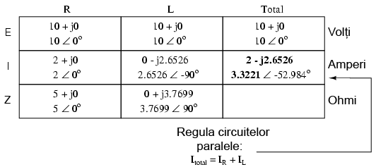
Figure 75: tabel
Impedanţa totală poate fi calculată folosind legea lui Ohm (Z=E/I) vertical pe coloana „Total”. Impedanţa totală poate fi calculată, de asemenea, folosind o formulă echivalentă celei folosite pentru calcularea rezistenţei totale paralele:

Figure 76: formula de calcul a impedanţei paralele totale
Indiferent ce motodă folosim, rezultatul este acelaşi:

Figure 77: tabel
Sumar:
- În analiza circuitelor, impedanţele paralel (Z) se comportă precum rezistorii (R) paralel: impedanţa totală este mai mică decât impedanţă fiecărei ramuri luată individual, folosind formula echivalentă. Atenţie, realizaţi toate calculele sub formă complexă, nu scalară! ZTotal = 1/(1/Z1 + 1/Z2 + . . . 1/Zn)
- Legea lui Ohm pentru circuitele de curent alternativ: E = IZ ; I = E/Z ; Z = E/I
- Când rezistorii şi bobinele sunt conectate în parelel, impedanţa totală va avea un unghi de fază între 0o şi +90o. Curentul din circuit va avea un unghi de fază între ^{o} şi -90o
- Circuitele paralel în curent alternativ prezintă aceleaşi proprietăţi ca şi circuitele în curent continuu: căderile de tensiune sunt aceleaşi pe toate componentele circuitului, curenţii de ramură se însumează şi dau naştere curentului total, iar impedanţele totală este mai mică decât impedanţa fiecărei ramuri luate în parte
4 Reactanta capacitiva
4.2 Circuite pur capacitive
Comportamentul condensatoarelor este diferit faţă de cel al rezistorilor. Pe când rezistorii opun o rezistenţă direct proporţională cu căderea de tensiune în faţă curgerii curentului, condensatoarele se opun variaţiei de tensiune absorbând (încărcare) sau eliberând (descărcare) curent în circuit. Curgerea curentului „prin” condensator este direct proporţională cu rata de variaţie a tensiunii la bornele acestuia. Această opoziţie în calea variaţiei tensiunii este o altă formă de reactanţă, opusă însă reactanţei bobinei.
Matematic, relaţia dintre curentul condensatorului şi rata de variaţie a tensiunii la bornele acestuia, se exprimă asfel:
condensatorului şi rata de variaţie a tensiunii la bornele acestuia

Expresia de/dt exprimă rata de variaţie a tensiunii instantanee (e) în raport cu timpul, calculată în volţi per secundă. Capacitatea (C) este în Farazi, iar curentul instantaneu (i) în Amperi. O exprimare echivalentă este şi dv/dt, folosind „v” în loc de „e” pentru exprimarea tensiunii; cele două notaţii sunt însă echivalente. Să analizăm un circuit simpul pur capacitiv:

Figure 78: circuit electric pur capacitiv şi diagrama fazorială
În circuitul de mai sus, tensiunea este defazată în urma curentului cu 90o. Graficul celor două forme de undă arată asfel:

Figure 79: graficul formelor de undă pentru un circuit electric pur capacitiv
Reţineti, curentul printr-un condensator este rezultatul variaţiei tensiunii la bornele acestuia. Prin urmare, curentu instantaneu este zero atunci când tensiunea instantanee este la valoarea sa maximă, pozitivă sau negativă, reprezentând variaţie zero sau pantă zero; curentul instantaneu are valoarea maximă atunci când tensiunea instantanee are variaţia maximă, adică zona în care variaţia este maximă (intersecţia cu axa orizontală a timpului). Rezultă o undă a tensiunii defazată cu -90o faţă de curent. Dacă ne uităm pe grafic, curentul pare să aibe un „avantaj” faţă de tensiune; curentul este defazat înaintea tensiunii, sau echivalent, tensiunea este defazată în urma curentului.

Figure 80: graficul explicat al formelor de undă pentru un circuit electric pur capacitiv
Forma de undă pentru putere este asemănătoare celei existente în cazul circuitului pur inductiv:
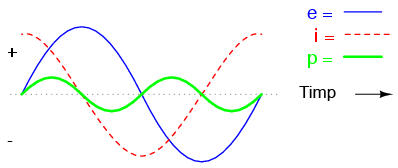
Figure 81: graficul formelor de undă pentru un circuit electric pur capacitiv
Defazajul de 90o dintre curent şi tensiune duce la o formă a undei de putere ce alternează în mod egal între pozitiv şi negativ. Aceast lucru înseamnă că nu există pierdere de putere (nu se disipă putere) pe condensator ca urmare a variaţiei tensiunii; acesta doar absoarbe putere şi apoi o eliberează din şi înspre circuit, în mod alternativ.
Opoziţia condensatorului la variaţia tensiunii se traduce printr-o opoziţia faţă de tensiunea alternativă în general, care prin definiţie îşi modifică tot timpul amplitudinea instantanee şi direcţia. Oricare ar fi amplitudinea tensiunii alternative pentru o anumită frecvenţă, un condensator va „conduce” o anumită valoare a curentului alternativ. La fel ca în cazul rezistorilor, unde curentul este o funcţie de tensiune la bornele acestuia şi rezistenţa sa, curentul alternativ printr-un condensator este o funcţie de tensiune la bornele sale şi reactanţa oferită de acesta. Ca şi în cazul bobinelor, reactanţa este exprimată în ohmi, iar simbolul este X (sau mai exact, XC - reactanţa capacitivă).
Din moment ce condensatoarele „conduc” curent în proporţie directă cu variaţia tensiunii, acestea vor conduce mai mult curent cu cât variaţia tensiunii este mai mare (durata de încărcare şi descărcare la valorile de vârf este mai mică), şi mai puţin cu cât variaţia tensiunii este mai mică. Acest lucru înseamnă că reactanţă condensatoarelor este invers proporţională cu frecvenţă curentului alternativ.

Figure 82: formula de calcul a reactanţei capacitive
Reactanţă unui condensator de 100 µF:
| Frecvenţa (Hertz) | Reactance (Ohm) |
|---|---|
| 60 | 26.5258 |
| 120 | 13.2629 |
| 2500 | 0.6366 |
De observat că relaţia dintre reactanţa capacitivă şi frecvenţă este exact opusă faţă de cea a reactanţei inductive. Reactanţa capacitivă scade odată cu creşterea frecvenţei curentului alternativ, şi invers. Bobinele se opun variaţiei curentului prin producerea unor căderi de tensiune mai mari; condensatoarele se opun variaţiei tensiunii prin trecerea unor curenţi mai mari prin aceştia.
Termenul 2πf poate fi înlocuit cu litera grecească Omega (ω), viteza unghiulară a circuitului de curent alternativ. Asfel, ecuaţia XC = 1/(2πfC) devine XC = 1/(ωC), unde ω se exprimă în radiani pe secundă.
Curentul alternativ într-un circuit pur capacitiv este egal cu raportul dintre tensiune şi reactanţă capacitivă. Să luăm ca şi exemplu următorul circuit:

Figure 83: circuit capacitiv simplu
calcularea curentului într-un circuit pur capacitiv 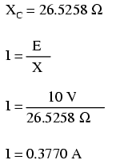
Totuşi, trebuie să ne reamintim faptul că tensiunea şi curentul nu sunt în fază în acest caz, curentul fiind defazat cu +90o faţă de tensiune. Dacă reprezentăm unghiul de fază al tensiunii şi al curentului sub formă matematică, putem calcula unghiul de fază al opoziţiei reactive a condensatorului faţă de curent:
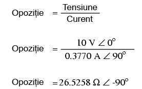
Figure 84: calcularea opoziţiei condensatorului faţă de curent într-un circuit pur capacitiv
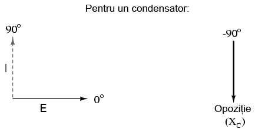
Figure 85: circuit capacitiv simplu - diagrama fazorială
Sumar:
- Reactanţa capacitiva reprezintă opoziţia condensatorului faţă de curentul alternativ datorită modului său „defazat” de stocare şi eliberare a energiei sub forma câmpului electric
- Reactanţa capacitivă poate fi calculată folosind formula XC = 1/(2πfC)
- Reactanţă capacitivă scade odată cu creşterea frecvenţei. Cu alte cuvinte, cu cât frecvenţa este mai mare, cu atât opoziţia faţa de curent este mai mică (cu atât conduce mai bine)
4.3 Circuite rezistiv-capacitive serie
Până acum am văzut doar ce se întâmplă într-un circuit pur rezistiv, respectiv pur inductiv. Acum vom analiza cele două componente conectate împreună într-un circuit serie:
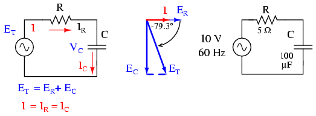
Figure 86: circuit electric rezistiv-capacitiv serie
Rezistorul va produce o rezistenţă de 5 Ω în circuit faţă de curentul alternativ, indiferent de valoarea frecvenţei, iar condensatorul va produce o reactanţă de 26.5258 Ω faţă de curetul alternativ la o frecvenţă de 60 Hz. Deoarece rezistenţa rezistorului este un număr real (5 Ω ∠ sau 5 + j0 ∠ Ω), iar reactanţa condensatorului este un număr imaginar (26.5258 Ω ∠-90o sau 0 - j26.5258 Ω), efectul celor două componente luate împreună (combinate) va fi o opoziţie faţă de curent egală cu suma complexă a celor două numere. Termenul folosit pentru desemnarea acestei opoziţii faţă de curent se numeşte impedanţă, simbolizată prin Z şi exprimată în Ohm, la fel ca rezistenţă şi reactanţa. În circuitul de sus, impedanţă totală a circuitului este:

Figure 87: formule
Relaţia dintre impedanţă, curent şi tensiune este similară rezistenţei din legea lui Ohm:
Figure 88: legea lui Ohm în circuitele de curent alternativ
De fapt, această expresie este o formă a legii lui Ohm mult mai cuprinzătoarea (mai generală) decât cea considerată în curent continuu (E=IR), la fel precum impedanţă este o expresie mult mai cuprinzătoare a opoziţiei faţă de deplasarea electronilor decât rezistenţa. Orice rezistenţă şi orice reactanţă, separate sau în combinaţii serie/paralel, pot fi şi trebuie exprimate ca şi o singură impedanţă într-un circuit de curent alternativ.
Pentru a calcula curentul din circuitul de mai sus, trebuie să luăm prima data o referinţă a unghiului de fază pentru sursa de tensiune; în mod normal aceasta se consideră zero.
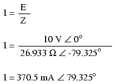
Figure 89: formule
Ca şi în cazul circuitului pur capacitiv, curentul este defazat înaintea tensiunii (sursei), cu toate că de data aceasta diferenţa este de 79.325o, nu 90o.

Figure 90: defazajul dintre curent şi tensiune într-un circuit electric rezistiv-capacitiv - formele de undă
Să folosim din nou metoda tabelului pentru analiza circuitului de mai sus. Primul pas este introducerea tuturor cantităţilor cunoscute în tabel:
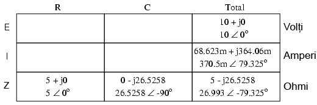
Figure 91: tabel
Într-un circuit serie, curentul total este acelaşi prin toate componentele circuitului; prin urmare, valorile curentului din coloana „Total” pot fi trecute şi în celelalte două coloane, a rezistorului şi a condensatorului:
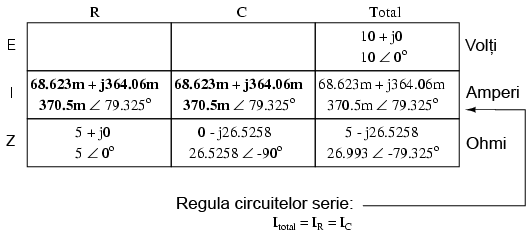
Figure 92: tabel
Continuând analiza, putem aplica legea lui Ohm (E=IR) vertical, pentru determniarea căderilor de tensiune pe rezistor şi condensator:
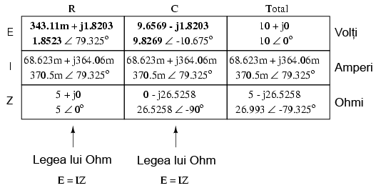
Figure 93: tabel
Observaţi faptul că tensiune şi curentul prin rezistor au acelaşi unghi de fază, ceea ce înseamnă că E şi I sunt în fază în cazul rezistorului. Tensiunea la bornele condensatorului are un unghi de fază de -10.675o, cu exact 90o mai puţin decât unghiul de fază al curentului din circuit. Acest lucru ne spune că tensiunea şi curentul condensatorului sunt defazate cu exact 90o între ele (în cazul condensatorului!).
- Indicaţia instrumentelor de măsură
Din nou, trebuie să insistăm pe faptul că valorile calculate ce corespund cu măsurătorile reale luate de aparatele de măsură, sunt cele sub formă polară, nu rectangulară! De exemplu, dacă am construi fizic acest circuit rezistiv-capacitiv (R-C) şi am măsura tensiunea la bornele rezistorului, voltmetrul ar indica 1.8523 V, nu 343.11 mV (termenul real rectangular) şi nici 1.8203 V (termenul imaginar rectangular). Instrumentele reale de măsură conectate la circuite reale indică lungimea vectorului (magnitudinea). Notaţia rectangulară, deşi este mai uşor de folosit pentru operaţiile aritmetice de adunare şi scădere, este o formă de notaţia mai abstractă decât forma polară pentru măsurătorile reale. Dacă ar fi să folosim doar o singură notaţie, cea mai bună alegere ar fi cea polară, pentru că este singura ce are legătură directă cu măsurătorile reale.
- Diagrama impedanţei
Impedanţa (Z) unui circuit serie R-L poate fi calculată cunoscând rezistenţă (R) şi reactanţa inductivă (XL). Din moment ce E=IR, E=IXL şi E=IZ, rezistenţa, reactanţa şi impedanţă sunt proporţionale cu tensiunea. Prin urmare, diagrama fazorială a tensiunii poate fi înlocuită cu o diagramă similară a impedanţei:

Figure 94: circuit electric rezitiv-capacitiv serie; diagrama fazorială a tensiunii şi a impedanţei
- Exemplu
Găsiţi impedanţă unui circuit serie format dintr-un rezistor de 40 Ω şi un condensator de 88.42 mF la frecvenţa de 60 Hz. Răspuns: Z = 40 - j30 = 50∠36.87o.
Sumar:
- Impedanţa este cantitatea totală a opoziţiei faţă de curentul electric şi este suma complexă (vector) dintre rezistenţă (reală) şi ractanţa (imaginară)
- În circuitele serie, impedanţele (Z) se comportă precum rezistenţele (R) serie: acestea se adună pentru a forma impedanţa totală. Atenţie, efectuaţi toate calculele sub formă complexă, nu scalară! ZTotal = Z1 + Z2 + . . . Zn
- Ţineţi minte că impedanţele se însumează tot timpul atunci când sunt conectate în serie, indiferent de tipul componentelor, rezistive, inductive sau capacitive; din punct de vedere matematic, toate sunt echivalente
- O impedanţă pur rezistivă va avea tot timpul un unghi de fază de exact 0o (ZR = R Ω ∠ 0o)
- O impedanţă pur capacitivă va avea tot timpul un unghi de fază de exact -90o (ZC = XC Ω ∠ -90o)
- Legea lui Ohm pentru circuitele de curent alternativ: E = IZ ; I = E/Z ; Z = E/I
- Atunci când rezistorii şi condensatoarele sunt conectate împreună în circuite, impedanţa totală a circuitului va avea un unghi între 0o şi -90o
- Circuitele serie de curent alternativ prezintă aceleaşi proprietăţi fundamentale ca şi în cazul circuitelor de curent continuu: curentul este acelaşi prin tot circuitul (prin toate componentele), căderile de tensiune se însumează, iar suma lor este tensiunea totală iar impedanţele se adună rezultând impedanţa totală
4.4 Circuite rezistiv-capacitive paralel
Folosind aceleaşi valori, vom conecta rezistorul şi condensatorul în paralel, şi vom trece la analiza acestuia folosind metoda tabelului:

Figure 95: circuit electric rezistiv-capacitiv serie; diagrama fazorială
Întrucât sursa de tensiune are aceeiaşi frecvenţă ca şi în cazul circuitului serie, iar rezistorul şi condensatorul au aceleaşi valori ale rezistenţei, respectiv capacităţii, valorile impedanţelor trebuie să fie aceleaşi. Prin urmare, putem începe completarea tabelului cu valorile cunoscute:
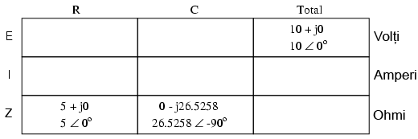
Figure 96: tabel
Fiind un circuit paralel, ştim faptul că tensiunea este aceeiaşi pe fiecare dintre coponente, prin urmare, putem introduce tensiunea totală (10 V∠ 0o) pe toate coloanele:

Figure 97: tabel
Acum putem aplica legea lui Ohm vertical (I=E/Z) pentru cele două coloane din tabel, calculând curentul prin rezistor, respectiv condensator:

Figure 98: tabel
Asemenea circuitelor de curent continuu, curentul total este suma curenţilor de ramură (legea lui Kirchhoff pentru curent):

Figure 99: tabel
- Formula de calcul a impedanţei totale
Impedanţa totală poate fi calculată folosind legea lui Ohm (Z=E/I), vertical, pe coloana „Total”. După cum am mai văzut, impedanţa paralelă poate fi calculată folosind o formulă echivalentă cu cea folosită pentru calcularea rezistenţei totale paralele. Trebuie amintit faptul că această regulă a impedanţei paralele se aplică indiferent de tipul impedanţelor ce le avem în paralel. Cu alte cuvinte, nu contează dacă avem circuite compuse exclusiv din rezistori paraleli, bobine paralele, condensatoare paralele sau orice alt tip de combinaţie între cele trei: sub forma impedanţei (Z), toţi termenii sunt comuni şi pot fi aplicaţi uniform în aceeiaşi formulă:
Figure 100: formula de calcul a impedanţei paralele
Singurul dezavantaj al acestei ecuaţii este volumul mare de muncă necesar pentru a efectua calculele matematice. Dar, indiferent de metoda ce o aplicăm pentru calcularea imedanţei paralel din circuitul de mai sus (fie folosind legea lui Ohm, fie formula echivalentă), rezultatul este identic:
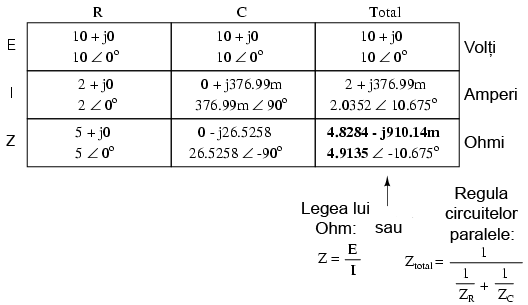
Figure 101: tabel
Sumar:
- În circuitele paralele, impedanţele (Z) se comportă precum rezistenţele (R) în paral: valoarea totală a impedanţei este mai mică decât valoarea fiecărei impedanţe luate individual, folosind formula echivalentă. Atenţie, efectuaţi toate calculele sub formă complexă, nu scalară! ZTotal = 1/(1/Z1 + 1/Z2 + . . . 1/Zn)
- Legea lui Ohm pentru circuitele de curent alternativ: E = IZ ; I = E/Z ; Z = E/I
- Atunci când în circuit sunt conectaţi rezistori şi condensatori în paralel, unghiul de fază al impedanţei totală va fi între 0o şi -90o. Curentul din circuit va avea un unghi de fază între 0o şi +90o
- Circuitele paralele în curent alternativ au aceleaşi proprietăţi fundamentale ca şi circuitele de curent continuu: tensiunea este aceeiaşi în întreg circuitul (pe fiecare component), curentul total este suma curenţilor de ramură iar impedanţa totală este mai mică decât fiecare dintre impedanţele individuale luate separat (cu ajutorul formulei echivalente)
5 Reactanta RLC
5.1 R, X şi Z - recapitulare
Înainte de a începe să explorăm efectele rezistorilor, bobinelor şi a condensatoarelor conectate împreună în acelaşi circuit de curent alternativ, să recapitulăm mai întâi câteva noţiuni de bază.
- Rezistenţa (R)
Rezistenţa este defapt frecarea întâmpinată de electroni, atunci când aceştia se află în mişcare. Toate materialele conductoare posedă o anumită rezistenţă (excepţie făcând supraconductoarele!), în special rezistorii. Atunci când curentul alternativ întâmpină o rezistenţă, căderea de tensiune produsă şi curentul prin aceasta sunt în fază. Simbolul matematic pentru rezistenţă este „R”, iar unitatea de măsură este Ohm-ul (Ω).
- Reactanţa (X)
Reactanţa este defapt inerţia întâmpinată de electroni, atunci când aceştia se află în mişcare. Este prezentă peste tot unde există câmpuri electrice sau magnetice datorită tensiunii sau curentului aplicat, dar în special în condensatoare şi bobine. Atunci când curentul alternativ întâmpină o reactanţă, căderea de tensiune şi curentul prin aceasta sunt defazate cu 90o. Simbolul matematic pentru reactanţă este „X”, iar unitatea de măsură este Ohm-ul (Ω).
- Impedanţa (Z)
Impedanţa este o expresie completă a tuturor formelor de opoziţie întâmpinate de electroni, atunci când aceştia se află în mişcare, şi include efectele rezistenţei cât şi a reactanţei. Este prezentă în toate circuitele şi în toate componentele. Atunci când curentul alternativ întâmpină o impedanţă, căderea de tensiune şi curentul prin aceasta sunt defazate cu un unghi între 0o şi 90o. Simbolul matematic al impedanţei este „Z”, iar unitatea de măsură este Ohm-ul (Ω), sub formă complexă.
- Componente ideale
Rezistorii perfecţi posedă doar rezistenţă, nu şi reactanţă. Bobinele şi condensatoarele perfecte posedă doar reactanţă, nu şi rezistenţă. Toate componentele posedă impedanţă, şi, datorită acestei proprietăţi universale a componentelor, este normal să exprimăm (traducem) valorile tuturor componentelor (rezistenţă, inductanţă şi capacitate) sub un termen comul, cel al impedanţei, ca prim pas în analiza oricărui circuit de curent alternativ:
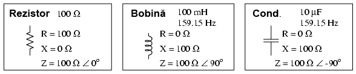
Figure 102: rezistor, bobină şi condensator ideal
- Unghiul de fază al impedanţei
Unghiul de fază al impedanţei pentru fiecare component este diferenţa de fază dintre căderea de tensiune la bornele acelui component şi curentul prin el. În cazul unui rezistor perfect, căderea de tensiune şi curentul sunt tot timpul în fază, prin urmare, unghiul de fază al impedanţei rezistorului (impedanţa rezistivă) este 0o. Pentru o bobină perfectă, căderea de tensiune este tot timpul defazată înaintea curentului cu 90o, prin urmare, unghiul de fază al impedanţei bobinei (impedanţa inductivă) este +90o. Pentru un condensator perfect, căderea de tensiune este tot timpul defazată în urma curentului cu 90o, prin urmare, unghiul de fază al impedanţei condensatorului (impedanţa capacitivă) este -90o.
- Legile lui Ohm şi Kirchhoff în curent alternativ
Impedanţele în curent alternativ se comportă analog rezistenţelor în curent continuu: se adună când sunt conectate în serie şi se micşorează în paralel. Legea lui Ohm pentru circuitele de curent alternativ, bazată pe impedanţă, nu pe rezistenţă, arată asfel:
Figure 103: legea lui Ohm pentru circuitele de curent alternativ - impedanţă în loc de rezistenţă
Legile lui Kirchhoff, precum şi toate metodele de analiză a reţelelor şi toate teoremele valabile pentru curent continuu sunt valabile şi în curent alternativ, atâta timp când valorile sunt exprimate sub formă complexă şi nu scalară. Cu toate că această echivalenţă poate fi greu de aplicat aritmetic, conceptual, ea este simplă şi elegantă. Singura diferenţă reală între circuitele de curent continuu şi alternativ este cea legată de calcularea puterii. Doarece reactanţa nu disipă putere precum o face rezistenţă, conceptul de putere în circuitele de curent alternativ este radical diferit faţă de cele de curent alternativ.
5.2 Circuite RLC serie
Să considerăm următorul circuit RLC serie:

Figure 104: circuit electric RLC serie
Primul pas este determinarea reactanţelor pentru bobină şi condensator:
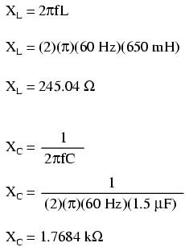
Figure 105: formule
Următorul pas constă în exprimarea tuturor rezistenţelor şi reactanţelor într-o formă matematică comună: impedanţa. Ţineţi minte că reactanţă inductivă (a bobinei) se traduce printr-o impedanţă imaginară pozitivă(+90o), iar reactanţă capacitivă (a condensatorului) se traduce printr-i impedanţă imaginară negativă (-90o). Rezistenţa, desigur, este considerată o impedanţă „reală” pură (unghi polar de 0o:

Figure 106: formule
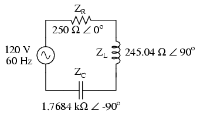
Figure 107: circuit electric RLC serie; impedanţele componentelor
După ce toate valorile opoziţiei faţă de curent au fost exprimate sub forma comună a impedanţei, ca numere complexe, acestea pot fi manipulate la fel ca rezistenţele în curent continuu. Putem scrie toate valorile cunoscute într-un tabel, şi apoi să rezolvăm mai departe acest circuit:
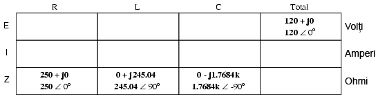
Figure 108: tabel
Circuitul de mai sus fiind unul serie, ştim că impedanţa totală este egală cu suma impedanţelor individuale:

Figure 109: formule
Introducând valoarea impedanţei totale în tabel, obţinem:
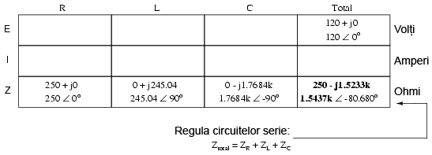
Figure 110: tabel
Putem acum să aplicăm legea lui Ohm (I=E/R), vertical, în coloana „Total” pentru a găsi curentul total din circuit:

Figure 111: tabel
Fiind un circuit serie, curentul trebuie să fie acelaşi prin toate componentele:
Figure 112: tabel
Putem aplica acum legea lui Ohm (E=IZ) fiecărui component în parte, pentru determinarea căderilor de tensiune:
Figure 113: tabel
Putem observa ceva aparent ciudat în acest caz: cu toate că tensiunea sursei de alimentare este de doar 120 V, tensiunea la bornele condensatorului este de 137.46 V! De ce se întâmplă acest lucru? Răspunsul se află în interacţiunea dintre reactanţele inductive şi capacitive. Exprimată ca şi impedanţă, putem vedea că bobina se opune trecerii curentului într-un mod exact invers faţa de condensator. Exprimată sub formă rectangulară, impedanţă bobinei posedă un termen imaginar pozitiv, iar condensatorul un termen imaginar negativ. Când aceste două impedanţe contrare sunt adunate (în serie), ele tind să se anuleze reciproc! Cu toate că ele se adună, suma lor este defapt mai mică decât oricare dintre impedanţe (inductive sau capacitive) considerate separat. Acest lucru este analog sumei dintre un scalar pozitiv şi unul negativ.
Dacă impedanţa totală într-un circuit serie ce conţine atât elemente inductive cât şi capacitive, pe lângă cele rezistive (RLC), este mai mică decât impedanţa individuală a oricărui element luat separat, atunci curentul total din circuit trebuie să fie mai mare decât curentul rezultat în cazul în care doar componeta capacitivă sau inductivă ar fi introduse în circuit. Odată cu apariţia acestui curent prin fiecare element, mai mare decât în mod normal, pot apărea căderi de tensiune mai mari decât tensiunea sursei de alimentare, pe anumite elemente din circuit!
Sumar:
- Cu toate că impedanţele în serie se adună, impedanţa totală pentru un circuit ce conţine atât bobine cât şi condensatoare poate să fie mai mică decât impedanţele individuale, datorită faptului că impedanţele inductive şi capacitive tind să se anuleze reciproc atunci când sunt conectateîn serie. Acest lucru poate duce la căderi de tensiune pe componente mai mari decât tensiunea sursei de alimentare
5.3 Circuite RLC paralel
Putem folosi aceleaşi componente de la circuitul serie, dar conectate în paralel de această dată:

Figure 114: circuit electric RLC paralel
Faptul că aceste componente sunt conectate în paralel şi nu în serie, nu are absolut niciun efect asupra impedanţelor individuale. Atâta timp cât frecvenţa sursei de tensiune este aceeiaşi, reactanţele inductive şi capacitive nu se vor modifica deloc:

Figure 115: circuit electric RLC paralel - impedanţele componentelor
După ce am exprimat valorile tuturor componentelor ca şi impedanţe (Z), putem începe analiza circuitului prin completarea tabelului, folosind regulile circuitelor serie de data aceasta:
Figure 116: tabel
Ştiind că într-un circuit paralel, căderea de tensiune este aceeiaşi pe toate componentele, putem trece valoarea tensiunii totale în fiecare coloană:

Figure 117: tabel
Acum putem aplica legea lui Ohm (I=E/Z) vertical, pe fiecare coloană, pentru determinarea curentului prin fiecare component:

Figure 118: tabel
Există două strategii pentru calcularea curentului şi a impedanţei totale. Prima presupune calcularea impedanţei totale din impedanţele individuale conectate în paralel folosind formula echivalentă (ZTotal = 1/(1/ZR + 1/ZL + 1/ZC), iar curentul total ca raport dintre tensiunea sursei de alimentare şi impedanţa totală (I=E/Z). Totuşi, rezolvarea ecuaţiei presupune un calcul dificil cu numere complexe. A doua metodă de calcul presupune aflarea curentului total ca sumă a curenţilor de ramură, iar apoi, folosind legea lui Ohm, putem determina impedanţa totală ca raport dintre tensiunea sursei de alimentare şi curentul total (Z=E/I). Rezultatul final trebuie să fie acelaşi în ambele cazuri.

Figure 119: tabel
Sumar:
5.4 Circuite RLC serie-paralel
Să luăm ca şi exemplu următorul circuit serie-paralel:

Figure 120: circuit electric RLC serie-paralel
Primul pas este determinarea valorilor impedanţelor (Z) pentru toate componentele, în funcţie de frecvenţa sursei de alimentare. Pentru a realiza acest lucru, trebuie mai întâi să determinăm valorile reactanţelor (X) bobinelor şi condensatoarelor iar apoi să exprimă reactanţele (X) şi rezistenţele (R) sub formă de impedanţe (Z):
Figure 121: tabel
Figure 122: tabel
Putem acum să completăm valorile iniţiale în tabel:

Figure 123: tabel
Întrucât avea de a face în acest caz cu un circuit serie-paralel combinat, nu putem afla impedanţa totală dintr-un singur pas. Prima dată luăm L şi C2 ca şi combinaţie serie; impedanţa combinată va fi suma impedanţelor individuale. Apoi, impendaţa rezultată o vom combina în paralel cu impedanţa rezistorului, rezultatul fiind o nouă impedanţă. Şi, în sfârşi, impedanţa precedentă o combinăm în serie cu impedanţa C1 şi ajungem la valoarea impedanţei totale a circuitului considerat.
Pentru a putea reprezenta toţi aceşti paşi sub format tabelar, va trebui să mai adăugam câteva coloane (folosim de fapt un al doilea tabel din motive de spaţiu), fiecare coloană reprezentând combinaţia respectivă.

Figure 124: tabel
Calcului acestor impedanţe combinate necesită sume complexe pentru combinaţiile serie şi utilizarea formulei echivalente pentru impedanţele paralel.
Figure 125: tabel
Putem să renunţăm la coloana total din primul tabel, întrucât aceasta apare în cel de al doilea tabel.
Acum că ştim impedanţa şi tensiunea totală, putem aplica legea lui Ohm, vertical, pe coloana „Total” pentru calcularea curentului total:

Figure 126: tabel
În acest moment, putem căuta componente sau combinaţii de componente ce au fie aceeiaşi cădere de tensiune sau acelaşi curent. Iar în acest caz, atât prin C1 cât şi prin combinaţia paralel R//(L–C2) trece acelaşi curent, întrucât ele sunt în serie. Putem trece prin urmare aceste valori în ambele coloane:
Figure 127: tabel
Figure 128: tabel
Acum putem calcula căderile de tensiune pe C1 şi pe combinaţia serie-paralel R//(L–C2 folosind legea lui Ohm (E=IZ), vertical:
Figure 129: tabel
Figure 130: tabel
Din nou, putem căuta componente ce au aceeiaşi cădere de tensiune sau curent. În acest caz, rezistorul (R) şi combinaţia serie a bobinei cu cel de al doilea condensator (L–C) au aceeiaşi cădere de tensiune, pentru că cele două seturi de impedanţe sunt conectate în paralel. Asfel, putem trece valorile tensiunii calculate mai sus în coloanele R şi L–C2:
Figure 131: tabel
Figure 132: tabel
Următorul pas este calcularea curentului prin rezistor şi prin combinaţia serie L–C2. Tot ceea ce trebuie să facem este să aplicăm legea lui Ohm (I=E/Z), vertical, în ambele coloane:

Figure 133: tabel

Figure 134: tabel
Din moment ce L şi C2 sunt conectate în serie şi cunoaştem curentul prin combinaţie serie a impedanţei, putem trece aceeleaşi valori şi în coloanele L şi C2, folosind regula conform căreia în circuitele serie, curentul prin fiecare component este acelaşi:

Figure 135: tabel
Ultimul pas constă în aplicarea legii lui Ohm (E=IZ), vertical, pentru calcularea căderilor de tensiune pentru cele două coloane rămase (L şi C2):

Figure 136: tabel
Sumar:
- Analiza circuitelor serie-paralel în curent continuu este similară analizei circuitelor serie-paralel din curent cotinuu. Singura diferenţă majoră constă în faptul că toate valorile şi calculele se realizează sub formă complexă, nu scalară
- Este important de ţinut minte ca înainte de simplificarea circuitului serie-paralel, trebuie să determinăm impedanţele (Z) fiecărui component, rezistor, bobină sau condensator. În acest fel, valorile tuturor componentelor vor fi exprimate sub aceeiaşi formă (Z) şi se evită asfel amestecarea rezistenţelor (R) cu inductanţe (L) şi capacităţi (C)
5.5 Susceptanţa şi admitanţa
În studiul circuitelor electrice de curent continuu am întâlnit termenul de conductanţă; aceasta se defineşte ca inversul rezistenţei. Matematic, aceasta reprezintă reciproca rezistenţei, 1/R, termen ce în formula rezistenţei paralele este chiar conductanţa.
Pe când „rezistenţa” denotă cantitatea opoziţiei faţă de deplasarea electronilor, „conductanţa” reprezintă uşurinţa de deplasare a electronilor. Unitatea de măsură pentru conductanţă este Siemens, iar simbolul matematic, „G”.
Componentele reactive, precum bobinele şi condensatoarele, se opun trecerii curentului (deplasării electronilor) în funcţie de timp şi nu într-un mod constant, uniform, ca în cazul rezistorilor. Această opoziţie în funcţie de timp se numeşte reactanţă, notată cu „X” şi măsurată de asemenea în Ohm.
La fel cum pentru rezistenţă există o mărime complementară, conductanţa, şi pentru expresia reactanţei există o mărime complementară, denumită susceptanţă. Matematic, susceptanţă este inversa (reciproca) reactanţei, 1/X. Simbolul matematic este „B”, iar unitatea de măsură este tot Siemens.
În aceeiaşi ordine de idei, există şi o mărime complementară pentru impedanţă, admitanţă. Matematic, aceasta este inversa impedanţei, 1/Z. Simbolul matematic este „Y”, iar unitatea de măsură este Siemens. La fel ca şi impedanţa, admitanţa este o cantitate complexă, nu scalară.
Chiar dacă în calculele uzuale nu vom întâlni prea des aceşti termeni, este bine de ştiut că aceştia există.

Sumar:
6 Rezonanta
6.1 Pendulul electric
Condensatoarele stochează energie sub formă de câmp electric, iar această energie stocată se manifestă electric sub formă de potenţial: tensiune statică. Bobinele stochează energie sub formă de câmp magnetic, iar această energie stocată se manifestă electric sub formă cinetică: curent. Ambele elemente sunt însă feţele opuse ale aceleiaşi monede; ambele sunt elemente reactive ce stochează şi eliberează energie în două moduri complementare. Când aceste două tipuri de componente reactive sunt conectate împreună, rezultatul modului lor complementar de stocare a energiei este unul neobişnuit.
Dacă unul dintre cele două componente, fie condensatorul, fie bobina, este iniţial încărcat, cele două componente vor schimba energie între ele, de la unul la altul, creând propria lor tensiune şi curent alternativ. Dacă presupunem că ambele componente sunt supuse unei tensiuni aplicate brusc (de la o baterie, de exemplu), condensatorul se va încărca foarte repede, iar bobina se va opune variaţiei curentului; prin urmare condensatorul va fi încărcat, iar bobina descărcată:
încărcat la tensiunea de vârf, bobina descărcată, curent zero

Condensatorul va începe să-şi descarce energia înmagazinată pe bobină, prin urmare, tensiunea va descreşte. Între timp, bobina va conduce curent electric şi va înmagazina energie sub formă de câmp magnetic; rezultatul este creşterea curentului în circuit:

Figure 138: pendul electric - descărcarea condensatorului, tensiunea descreşte; încărcarea bobine, curentul creşte
Bobina va continua să se încarce şi să menţină curgerea electronilor în circuit până când condensatorul va fi complet descărcat (tensiune zero la bornele sale):
Figure 139: pendul electric - condensator complet descărcat, tensiune zero; bobină complet încărcată, curent maxim
Bobina va menţine curentul chiar şi fără existenţa unei tensiuni aplicate la bornele sale; de fapt, va genera o tensiune (precum o baterie) pentru menţinerea direcţiei curentului. Condensatorul, fiind elementul ce primeşte acest curent, va începe să acumuleze o sarcină de polaritate inversă faţă de polaritatea sa iniţială:
tensiunii; descărcarea bobine, descreşterea curentului

Atunci când curentul prin bobină se epuizează iar energia înmagazinată ajunge la zero, tensiunea condensatorului va fi maximă, şi de polaritate opusă tensiunii iniţiale:
Figure 140: pendul electric - condensator încărcat complet, tensiune maximă; bobină descărcată complet, curent zero
Am ajuns acum la o situaţie foarte similară celei iniţiale: condensatorul este complet încărcat iar curentul prin circuit este zero (bobină descărcată). Condensatorul va începe (din nou) să se descarce prin/pe bobină, ducând la creşterea curentului (în direcţie opusă faţă de cazul iniţial) şi descreşterea tensiunii pe măsură ce energia înmagazinată de condensator tinde spre zero:

Figure 141: pendul electric - condensatorul se descarcă, tensiunea descreşte; bobina se încarcă, curentul creşte
Într-un final, condensatorul se va descărca complet (zero volţi), iar bobina va deveni încărcată complet (curent maxim):

Figure 142: pendul electric - condensator complet descărcat, tensiune zero; bobină complet încărcată, curent maxim
Bobina, încercând să menţină direcţia curentului, se va comporta din nou precum o sursă, generând tensiune electrică precum o baterie pentru menţinerea acestuia. În acest fel, condensatorul va începe să se încarce din nou, iar amplitudinea curentului din circuit va descreşte din nou:
tensiunii; descărcarea bobinei, descreşterea curentului
Până la urmă condensatorul se va încărca complet (din nou) pe măsură ce energia bobinei se apropie de zero. Tensiunea se va afla din nou la valoarea maximă pozitivă, iar curentul la zero. Acest ultim pas duce la completarea unei perioade pe parcursul cărei cele două componente au schimbat între ele aceeiaşi energie electrică:

Figure 143: pendul electric - condensator încărcat complet, tensiune maximă; bobină descărcată complet, curent zero
Această oscilaţie a energie de la un component la altul va continua cu o amplitudine a semnalelor din ce în ce mai mică, descreştere datorată pierderilor de putere cauzate de rezistenţele parazite din circuit, până când întregul proces se opreşte cu totul. În mare, acest comportament este asemănător comportamentului pendulului: pe măsură ce masa pendului oscilează înainte şi înapoi, există o transformare continuă între energia cinetică (mişcare) şi energia potenţială (înălţime), asemănător circuitului format din bobină şi condensator.
În punctul în care înălţimea pendulului este maximă, masa acestuia se opreşte pentru o scurtă perioadă de timp, urmată de schimbarea direcţiei sale de mişcare. În acest punct, energia potenţială (înălţime) este maximă iar energia cinetică (mişcare) este zero. Pe măsură ce masa oscilează înapoi, trece rapid printr-un punct în care coarda este direcţionată perpendicular pe direcţia pământului. În acest punct, energia potenţială (înălţime) este zero iar energia cinetică (mişcare) este la valoarea sa maximă. Precum un circuit, oscilaţia înainte şi înapoi a pendului va continua cu o amplitudine a oscilaţiilor din ce în ce mai mică, descreştera datorată frecării cu aerul (rezistenţă) ce disipă energie. Tot precum în cazul circuitului de mai sus, poziţia şi viteza pendulului trasate pe un grafic (timp-amplitudine) trasează două unde sinusoidale defazate între ele cu 90o.

Figure 144: principiul pendulului fizic şi formele de undă descrise de acesta
În fizică, această oscilaţie sinusoidală naturală este cunoscută sub numele de mişcare armonică simplă. Aceleaşi principii stau însă şi la baza circuitelor formate din condensator şi bobină, de genul celui văzut mai sus. O proprietate interesantă al oricărui tip de pendul, este că perdioada sa depinde de lungimea braţului şi nu de greutatea masei de la capătul acesteia. De aceea pendulul va continua să oscileze la aceeiaşi frecvenţă pe măsură ce amplitudinea oscilaţiilor scade. Rata oscilaţiilor este independentă de cantitatea de energie stocată în pendul.
Acelaşi lucru este valabil şi pentru circuitul bobină/condensator. Rata oscilaţiilor este stric dependentă de mărimea condensatorului şi a bobinei, şi nu de cantitatea de tensiune (sau curent) disponibilă în circuit. Proprietatea sa de a menţine o singură frecvenţă, naturală, indiferent de valoarea energiei stocate, este de o mare importanţă în realizarea circuitelor electric.
Totuşi, această tendinţă de oscilaţie, sau rezonanţă, la o anumită frecvenţă, nu este limitată doar la circuitele concepute special în acest scop. De fapt, aproape orice circuit de curent alternativ ce conţine o combinaţie de capacităţi şi inductivităţi (circuit „LC”) tinde să manifeste efecte neobişnuite atunci când frecvenţa sursei de alimentare în curent alternativ se apropie de frecvenţa naturală. Acest lucru este valabil indiferent de scopul pentru care circuitul a fost creat.
Dacă frecvenţa sursei de alimentare a circuitului este exact frecvenţă naturală de oscilaţie a combinaţiei LC, spunem că circuitul se află într-o stare de rezonanţă. Efectele neobişnuite vor atinge un maxim în această condiţie de rezonanţă. Din acest motiv, trebuie să calculăm din timp frecvenţa de rezonanţă pentru diferite combinaţii de L şi C, şi să ţinem cont de efectele acesteia asupra circuitului.
Sumar:
- Un condensator şi o bobină conectate împreună formează un circuit oscilator, ce rezonează (oscilează) pe o anumită frecvenţă. La această frecvenţă, energia este transferată de la condensator spre bobină şi invers sub formă de tensiune şi curent alternativ defazate între ele cu 90o
- Atunci când frecvenţa sursei de alimentare în curent alternativ este exact egală cu frecvenţa naturală de oscilaţie a circuitului LC, spunem că circuitul se află într-o stare de rezonanţă
6.2 Rezonanţa paralel
Putem ajunge la o stare de rezonanţă într-un circuit oscilator (LC), dacă reactanţele condensatorului şi a bobinei sunt egale între ele. Deoarece reactanţa inductivă creşte odată cu creşterea frecvenţei, iar reactanţa capacitivă scade cu creşterea frecvenţei, există doar o singură frecvenţă unde cele două reactanţe vor fi egale.

Figure 145: circuit electric paralel simplu rezonant (LC); circuit oscilator
În circuitul de mai sus, avem un condensator de 10 µF şi o bobină de 100 mH. Din moment ce cunoaştem ecuaţiile pentru determinarea reactanţelor, oricare ar fi valoarea frecvenţei, iar ceea ce ne interesează este punctul în care cele două reactanţe sunt egale între ele, putem rezolva ecuaţia formată din egalitatea celor două reactanţa pentru a afla frecvenţa de rezonanţă (naturală):
Figure 146: formule
Aceasta este formula prin care putem afla frecvenţa de rezonanţă a unui circuit oscilator, atunci când cunoaştem valorile inductanţei (L) şi a capacităţii (C). După introducerea valorilor L şi C în formula de mai sus, ajungel la frecvenţă de rezonanţă de 159.155 Hz.
Ceea ce se întâmplă la rezonanţă este interesant. Fiindcă reactanţa inductivă este egală cu cea capacitivă, impedanţa totală creşte spre infinit, ceea ce înseamnă că circuitul oscilator nu „consumă” deloc curent de la sursa de tensiune! Putem calcula impedanţele individuale ale condensatorului de 10 µF şi a bobinei de 100 mH, ca mai apoi să aplicăm formula impedanţei paralele pentru a demonstra matematic ceea ce am spus mai sus:

Figure 147: formule
Prin urmare, ambele impedanţe sunt egale, 100 Ω. Putem acum să folosm formula impedanţei paralel:

Figure 148: formule
Desigur, nu putem face raportul unui număr cu zero pentru a ajunge la un rezultat care să aibă sens, dar putem spune că rezultatul tinde spre infinit pe măsură ce valorile celor două impedanţe paralele se apropie una de cealaltă. Practic, acest lucru înseamnă că impedanţa totală a circuitului oscilator la rezonanţă este infinită (se comportă precum un circuit deschis).
Grafic, amplitudinea curentului din circuit în funcţie de frecvenţa sursei de alimentare arată asfel:
Figure 149: graficul curent-frecvenţă pentru un circuit oscilator la frecvenţa de rezonanţă
Punctul de pe grafic unde curentul este zero, coincide cu frecvenţa de rezonanţă calculată mai sus, 159.155 Hz.
Sumar:
- Rezonanţa are loc atunci când reactanţa capacitivă este egală cu reactanţă inductivă
- Impedanţa totală a unui circuit LC paralel tinde spre infinit pe măsură ce frecvenţa sursei de alimentare se apropie de frecvenţa de rezonanţă
6.3 Rezonanţa serie
Un efect similar rezonanţie parale are loc şi în circuitele inductiv/capacitive serie. Atunci când este atinsă o stare de rezonanţă (reactanţa capacitivă este egală cu cea inductivă), cele două impedanţe se anulează reciproc iar impedanţa totală scade la zero!
Figure 150: circuit rezonant serie (LC)

Figure 151: formule
Fiindcă impedanţa serie totală este 0 Ω la frecvenţa de rezonanţă de 159.155 Hz, se va produce un scurt circuit la bornele sursei de curent alternativ la rezonanţă. Graficul curentului în funcţie de frecvenţă arată asfel:
Figure 152: graficul frecvenţă curent pentru un circuit rezonant serie
Putem observa de pe grafic, că la frecvenţa de rezonanţă de 159.155 (aproximativ), valoarea curentului prin circuit este maximă, ceea ce sugerează un scurt-circuit. Formula frecvenţei de rezonanţă calculată anterior este valabilă atât pentru circuitele LC paralel cât şi pentru cele serie:
LC serie şi paralel
Atenţie, datorită curenţilor mari ce se pot dezvoltă într-un circuit LC serie la rezonantă, este posibilă apariţia unor căderi de tensiune periculoase pe condensator şi bobină, întrucât fiecare component are o impedanţă suficient de mare. Dacă alimentăm acest circuit cu doar 1 V, căderile de tensiune pe cele două componente pot atinge valori impresionante de aproximativ 70 V ! Prin urmare, fiţi foarte atenţi atunci când experimentaţi cu asfel de circuite!
Sumar:
- Impedanţa totală a unui circuit LC serie se apropie de zero pe măsură ce frecvenţa sursei de alimentare se apropie de frecvenţa de rezonantă
- Formula de calcul a frecvenţei de rezonanţă este aceeiaşi ca şi în cazul circuitului LC paralel
- Circuitele LC serie pot dezvolta căderi de tensiune extrem de mari pe cele două componente atunci când se află la rezonantă, datorită curenţilor mari din circuit şi a impedanţelor suficient de mari ale componentelor
6.4 Aplicaţii ale rezonanţei
Până acum, fenomenul rezonanţei pare doar o curiozitate nefolositoare, sau chiar dăunătoare,mai ales în cazul scurt-circuitării sursei de tensiune alternativă în circuitul serie. Totuşi, rezonanţa este o proprietate valoroasă a circuitelor de curent alternativ, fiind folosită într-o varietate de aplicaţii.
Una dintre aplicaţiile rezonanţei constă în atingerea unei frecvenţe stabile în circuitele folosite pentru producerea semnalelor alternative. De obicei este folosit un circuit paralel în acest scop, condensatorul şi bobina fiind conectate împreună, schimbând energie între ele, alternativ. La fel cum pendulul poate fi folosit pentru stabilizarea frecvenţei oscilaţiilor ceasurilor, un circuit oscilator (paralel) poate fi folosit pentru stabilizarea frecvenţei electrice a unui circuit oscilator de curent alternativ. După cum am mai spus, frecvenţa impusă de circuitul oscilator depinde doar de valorile L şi C, şi nu de amplitudinea tensiunii sau a curentului din circuit.
Figure 153: circuit oscilator LC în curent alternativ
O altă aplicaţie a rezonanţei este în circuitele în care efectele impedanţelor mărite sau micşorate, la o anumită frecvenţă, sunt de dorit. Un circuit rezonant poate fi folosit pentru „blocarea” (impedanţă mare) unei anumite frecvenţe sau a unui domeniu de frecvenţe; circuitul se comportă în acest caz precum un „filtru”, pentru selectarea anumitor frecvenţe în defavoarea altora. Aceste circuite sunt de fapt denumite filtre, iar studiul lor constituie o întreagă disciplină.
În principiu, acesta este şi modul de funcţionare al unui aparat de radiorecepţie, ce selectează o anumită frecvenţă (post radio) din seria frecvenţelor variate recepţionate de antenă.
Sumar:
- Rezonanţa poate fi utilizată pentru menţinearea oscilaţiilor circuitelor de curent alternativ la o frecvenţă constantă
- Rezonanţa poate fi exploatată pentru proprietăţile sale cu privire la impedanţă: creşterea sau descreşterea dramatică a impedanţei pentru anumite frecvenţe. Circuitele concepute special pentru înlăturarea tuturor frecvenţelor din circuit exceptând cele dorite, se numesc filtre
6.5 Rezonanţa serie-paralel. Antirezonanţa
În circuitele reactive simple fără rezistenţă (sau rezistenţă foarte mică), efectele impedanţelor la frecvenţa de rezonanţă vor fi cele prezise de ecuaţia acesteia. Într-un circuit LC serie, aceasta înseamnă impedanţă infinită. În circuitele LC serie, înseamnă impedanţă zero (la rezonanţă).
Figure 154: formula de calcul a frecvenţei de rezonanţă între bobină şi condensator
Totuşi, dacă începem să introducem rezistenţă în circuitele LC, această formulă de calcul pentru rezonanţă nu mai este utilizabilă. Vom luat câteva circuite LC ca şi exemplu, folosind aceleaşi valori pentru capacitate şi inductanţă ca şi înainte: 10 µF şi 100 mH. Frecvenţa de rezonanţă, potrivit formulei, ar trebui să fie 159.155 Hz, dar să vedem ce se întâmplă atunci când introducem un rezistor în circuit:
- Circuit LC paralel; rezistor în serie cu bobina

Figure 155: circuit LC paralel; rezistor serie cu bobina
Figure 156: circuit LC paralel; rezistor serie cu bobina; graficul variaţiei curentului cu frecvenţa
Rezistorul conectat în paralel cu bobina produce un curent minim, ce nu este zero, la frecvenţa de 136.8 Hz, şi nu la 159.2 Hz, valoarea calculată.
- Circuit LC paralel; condensatorul în serie cu rezistorul
Figure 157: circuit LC paralel; rezistor serie cu condensatorul
condensatorul; graficul variaţiei curentului cu frecvenţa

Curentul minim în acest caz este la frecvenţa de 180 Hz, nu la 159.2.
- Circuit LC serie; rezistor paralel cu bobina
Întorcându-ne la circuitul LC serie, vom conecta o rezistenţă în paralel cu bobina. În circuitul de mai jos, rezistorul R1 de 1 Ω este conectat în serie cu bobina şi condensatorul pentru limitarea curentului total prin circuit la rezonanţă. Rezistorul „extra” pe care îl introducem în circuit pentru influenţarea frecvenţei de rezonanţă este rezistorul R2 de 100 Ω:

Figure 158: circuit LC serie; rezistor paralel cu bobina

Figure 159: circuit LC serie; rezistor paralel cu bobina; graficul variaţiei curentului cu frecvenţa
Circuitul rezonant serie (LC) cu un rezistor conectat în paralel cu bobina, prezintă un curent maxim la o frecvenţă de 180 Hz, faţă de 159.2.
- Circuit LC serie; rezistor paralel cu condensatorul

Figure 160: circuit LC serie; rezistor paralel cu condensatorul
condensatorul; graficul variaţiei curentului cu frecvenţa

Şi în acest caz, curentul maxim prin circuit nu se mai produce la frecvenţa de 159.2 Hz, ci la 136.8 Hz.
- Antirezonanţa
Tendinţa rezistenţei de modificare a punctului în care impedanţa atinge maximul sau minimul într-un circuit LC, poartă numel de antirezonanţă.
Din nou, efectele de mai sus ilustrează natura complementară a condensatoarelor şi a bobinelor: rezistenţa serie cu unul dintre ele crează un efect de antirezonanţă echivalent cu rezistenţa paralel cu celălalt. Dacă ne uităm şi mai atent la graficele de mai sus, putem observa că frecvenţele de rezonanţă sunt modificate cu aceeiaşi valoare, iar forma graficelor complementare sunt în oglindă!
Nu este foarte greu să adăugăm o rezistenţă într-un circuit LC, dar, deşi confecţionarea condensatorilor cu rezistenţe neglijabile, este posibilă, bobinele suferă la acest capitol; rezistenţele lor sunt mari datorită lungimilor conductorilor folosiţi la confecţionarea acestora. Mai mult decât atât, rezistenţa conductorilor tinde să crească odată cu creşterea frecvenţei de funcţionare, datorită efectului pelicular, efect ce se manifestă prin excluderea deplasării curentului alternativ prin centrul conductorului, reducând prin urmare secţiunea transversală a firului şi mărind asfel rezistenţa sa. Asfel, bobinele nu doar că au rezistenţă, dar au o rezistenţă variabilă, dependentă de frecvenţă.
Pe lângă asta, bobinele se mai confruntă şi cu pierderi, datorită miezurilor de fier folosite, efect cunoscut sub numele de curenţi turbionari.
- Circuit RLC serie
O excepţie de la regula conform cărei o rezistenţă adiţională într-un circuit LC modifică valoarea rezistenţei de rezonanţă, este circuitul RLC serie. Atâta timp cât toate componentele sunt conectate în serie, frecvenţa de rezonanţă nu va fi afectată de rezistenţa în plus introdusă în circuit. Graficul variaţiei curentului în funcţie de frecvenţă este prezentat mai jos:

Figure 161: circuit RLC serie; frecvenţa de rezonanţă nu este afectată de introducerea unei rezistenţe în serie
circuit RLC serie; graficul variaţiei curentului cu frecvenţa
Valoarea curentului maxim este din nou atinsă pentru frecvenţa de 159.2 Hz!
- Aplicaţiile antirezonanţei
Este bine de ştiu că antirezonanţa are un efect de amortizare (atenuare) a oscilaţiilor circuitelor pur LC, precum cele paralel. La începutul acestui capitol am observat cum un condensator şî o bobină conectate direct împreună se comportă precum un pendul, schimbând tensiune şi curent între ele precum un pendul schimbă energia potenţială cu cea cinetică, alternatov. Într-un circuit oscilator perfect (rezistenţă zero), această oscilaţie poate continua la infinit, la fel ca în cazul unui pendul fără frecări, ce ar putea oscila la infinit la frecvenţa sa de rezonanţă. Dar aceste dispozitive fără frecare sunt foarte greu de găsit în realitate, şi la fel este şi cazul circuitelor oscilatoare. Pierderea de energie prin rezistenţă (sau alte tipuri de pierdere) într-un circuit LC va duce la atenuarea amplitudinii oscilaţiilor până acestea se „sting”. Dacă într-un circuit oscilator, există suficiente pierderi de energie, acesta nu va rezona deloc.
Efectul de antirezonanţă este mai mult decât o simplă curiozitate: poate fi extrem de utilă la eliminarea oscilaţiilor nedorite din circuitele ce conţin inductanţe sau capacităţi parazite, precum este cazul majorităţii circuitelor. Să luăm ca şi exemplu următorul circuit, al cărei constantă de timp este L/R:
Figure 162: circuit electric cu constanta de timp L/R
Idea acestui circuit este simplă: încărcarea bobinei atunci când întrerupătorul este închis. Rata (viteza) de încărcare a bobine depinde de raportul L/R, cunoscut sub numele de constante de timp al circuitului, măsurată în secunde. Totuşi, dacă ar fi să construim fizic un asfel de circuit, am descoperi oscilaţii neaşteptate a tensiunii la bornele bobine atunci când întrerupătorul este închis. De ce se întâmplă acest lucru? Nu există niciun condensator în circuit, prin urmare, cum putem avea oscilaţie rezonantă folosind doar o bobină, un rezistor şi o baterie?
Figure 163: circuit electric cu constanta de timp L/R; forma reală şi forma ideală a undei L/R
Toate bobinele prezintă o anumită capacitate parazită datorită modului de realizare a înfăşurărilor. De asemenea, conductorii folosiţi pentru realizarea circuitului, prezintă şi ei o anumită capacitate parazită. Cu toate că proiectarea „curată” a circuitelor electrice elimină mare parte dintre aceste capacităţi parazite, aceasta nu poate fi niciodată eliminată integral. Dacă acest lucru cauzează probleme de rezonanţă (oscilaţii nedorite), un mod de combatere al acestui efect este prin adăugarea rezistenţelor. Dacă un rezistor, R, este suficient de mare, acesta va duce la o situaţie de antirezonanţă, disipând suficientă energie pentru anularea, sau diminuarea efectelor oscilaţiei datorate combinaţiei dintre inductanţă şi capacităţile parazite.
Este interesant de menţionat faptul că, principiul utilizării rezistenţei pentru eliminarea efectelor nedorite ale rezonanţei este des folosit în conceperea sistemlor mecanice, unde orice obiect aflat în mişcare reprezintă un potenţial rezonator. O aplicaţie extrem de des întâlnită este folosirea amortizoarelor la automobile. Fără amortizoare, automobilele ar vibra necontrolat la frecvenţa de rezonanţă, atunci când ar întâlni o denivelare în asfalt, de exemplu. Rolul amortizorului este de a introduce un efect antirezonant puterni prin disiparea energiei pe cale hidraulică, în acelaşi fel în care un rezistor disipă energie pe cale electrică.
Sumar:
- Adaugarea unei rezistenţe într-un circuit LC poate duce efectul de antirezonanţă, unde efectele de vârf ale impedanţei au loc la o frecvenţă diferită faţă de frecvenţa de rezonanţă iniţială
- Rezistenţa prezentă în bobinele reale poate contribui în mare măsură la apariţia antirezonanţei. O sursă a unei asfel de rezistenţe este efectul pelicular.
- Într-un circuit RLC serie, rezistenţa adiţională în circuit nu produce antirezonanţă.
7 Frecvente combinate
7.1 Introducere
Circuitele studiate până în acest moment au fost alimentate integral într-o singură frecvenţă sinusoidală. În multe aplicaţii însă, frecvenţa unică este mai degraba excepţia decât regula. De multe ori întâlnim circuite unde frecvenţa tensiunii de alimentare este compusă din mai multe frecvenţe individuale luate împreună. Pe lângă asta, formele de undă ale tensiunii pot avea şi alte forme, nu doar sinusoidale, caz în care ele intră in categoria formelor de undă ne-sinusoidale.
Întâlnim de asemenea cazuri în care semnalul de curent continuu este combinat cu cel de curent alternativ: forma de undă este suprapusă peste un semnal de curent continuu. Rezultatul unei asfel de combinaţii este un semnal variabil în intensitate (amplitudine) dar nu şi în polaritate, sau polaritatea sa variază asimetric. Indiferent de caz, atunci când avem mai multe frecvenţe în acelaşi circuit, analiza acestuia este mult mai complexă decât ceea ce am văzut până acum.
- Cuplajele inductive şi capacitive accidentale
Unele situaţii de semnale de curent sau tensiune cu frecvenţe multiple sunt create accidental, fiind rezultatul conexiunilor accidentale dintre circuite, denumite cuplaje, cauzate de capacităţile sau inductanţele parazite dintre conductorii acelor circuite. Un exemplu clasic de cuplaj este întâlnit des în industrie, unde o reţea de curent continuu este plasată în apropierea unei reţele de curent alternativ. Prezenţă tensiunilor înalte şi a curenţilor alternativi pot duce la modificarea comportamentului reţelei de curent cotinuu. Capacitatea parazită formată între izolaţiile celor două reţele poate induce tensiune (faţă de împământare) de la cea de curent alternativ la cea de curent continuu, iar inductanţele parazite formate între cele două lungimi ale conductorilor pot duce la situaţia în care curenţii primei reţele să inducă tensiune pe cale electromagnetică în conductorii celei de a doua reţele. Rezultatul este o combinaţie de semnale de curent continuu şi alternativ. Următoarea schemă prezintă modul în care sursa de zgomot de curent alternativ se poate cupla la circuitul de curent alternativ prin inductanţa (Mp) şi capacitatea parazită (Cp):
Figure 164: cuplaj inductiv şi cuplaj capacitiv între un circuit de curent continuu şi unul de curent alternativ
- Folosirea cablurilor răsucite şi ecranate
Atunci când tensiunile alternative parazite se mixează cu semnalele de curent continuu, rezultatele sunt de obicei nedorite. Din acest motiv, reţeaua de alimentare cu energie electrică (curent alternativ, puteri mari) trebuie să fie neapărat separată de reţelele de semnal (curent continuu, puteri mici), iar semnalele transmise prin intermediul cablurilor răsucite (twisted) formate din doi conductori, şi nu doar printr-un singur fir şi conexiunea acestuia la împământare:
curent continuu şi unul de curent alternativ; folosirea cablurilor răsucite şi ecranate pentru reducerea efectelor cuplajelor

Ecranajul cablului - o folie metalică înfăşurată în jurul celor doi conductori izolaţi - este conectat la împământare, şi izolează ambii conductori faţă de cuplajul electrostatic (capacitiv), blocând orice câmp electric exterior. Răsucirea celor doi conductori, unul lângă celălalt, anulează orice cuplaj electromagnetic (inductanţă mutuală), întrucât orice tensiune parazită indusă va fi aproximativ egală în amplitudine dar defazată cu 180o (opoziţie de fază) în ambii conductori, cele două semnale anulându-se practic între ele, rezultând o diferenţă de potenţial aproape nulă.
Cuplajul poate să apară şi între două seturi de conductori de curent alternativ, caz în care ambele semnale vor purta o combinaţie de frecvenţe:

Figure 165: cuplaj inductiv şi cuplaj capacitiv între două circuite de curent alternativ
- Alte moduri de generare a frecvenţelor multiple
Cuplajul este doar unul dintre exemplele de combinare a frecvenţelor, fiind accidental şi de nedorit. În alte cazuri însă, semnalele cu frecvenţe multiple sunt rezultatul proiectării voite a circuitului sau reprezintă o calitate intrinsecă a semnalului analizat. Cel mai uşor mod de producere a semnalelor cu frecvenţe multipe este conectarea surselor de tensiune de frecvenţe diferite în serie:

Figure 166: modul de generare a semnalelor cu frecvenţe multiple
În unele cazuri, frecvenţa mixată a semnalului este produsă de o singură sursă de tensiune. Un exemplu este microfonul, un traductor ce transformă presiunea aerului datorată frecvenţelor audio într-o tensiune a cărei formă de undă corespunde acestor frecvenţe ne-sinusoidale. Foarte puţine sunete naturale sunt formate dintr-o vibraţie sinusoidală pură, ci, majoritatea sunt compuse dintr-o serie de vibraţii la frecvenţe şi amplitudini diferite combinate într-un singur semnal final.
- Sunetele muzicale
Acordurile muzicale sunt produse printr-un amestec de frecvenţe cu frecvenţă de bază, fiecare dintre acestea fiind un multiplu al frecvenţei fundamentale. Chiar şi o simplă notă de pian este compusă dintr-o frecvenţă predominantă amestecată cu alte frecvenţe (armonici, fiecare dintre acestea fiind un multiplu al primei (fundamentala). Pentru ilustrare, putem considera următorul tabel, în care frecvenţa fundamentală este de 1.000 Hz (cifră luată la întâmplare):
Frecvenţa (Hz) Termen 1000 armonica 1, sau fundamentala 2000 armonica a 2-a 3000 armonica a 3-a 4000 armonica a 4-a 5000 armonica a 5-a 6000 armonica a 6-a 7000 armonica a 7-a Unele instrumente muzicale nu pot produce anumite tipuri de frecvenţe armonice. De exemplu, un „instrument” realizat dintr-un tub deschis la un capăţ şi închis la celălalt (precum o sticlă) nu va putea produce armonice pare. Un asfel de instrument, construit asfel încât să producă o frecvenţă fundamentală de 1.000 Hz, va produce şi armonici de 3.000, 5.000, 7.000, etc. Hz, dar nu va putea produce 2.000, 4.000, 6.000, etc. Hz.
O formă de undă pur sinusoidală (frecvenţă unică, „curată”), neavând nicio armonică, sună „sec” urechii umane. Majoritatea instrumentelor muzicale nu sunt capabile să producă sunete atât de „simple”.
Sumar:
- Combinarea mai multor forme de undă cu frecvenţe diferite duce la formarea unui semnal complex a cărei frecvenţă fundamentală este semnalul cu cea mai mică frecvenţă. Celelalte forme de undă sunt multiplii ale frecvenţei fundamentale, şi poartă numele de armonici
7.2 Forme de undă dreptunghiulare
Este cunoscut faptul că orice semnal periodic (ce se repetă în timp) ne-sinusoidal poate fi reprezentat ca şi combinaţie de semnale continue, sinusoidale şi/sau cosinusoidale (semnal sinusoidal defazat cu 90 de grade) de frecvenţe şi amplitudini variate. Acest lucru este perfect valabil indiferent cât de „ciudat” sau „contorsionat” ar părea semnalul analizat. Atâta timp cât este periodic, se poate reduce la tipul de combinaţii prezentate mai sus. Într-un caz particular, formele de undă dreptunghiulare sunt echivalente din punct de vedere matematic cu suma unui semnal sinusoidal fundamental, de o anumită frecvenţă, plus o serie infinită de multiplii impari ai frecvenţei fundamentale cu amplitudini descrescătoare.
Acest adevăr, perfect demonstrabil, al formelor de undă pare greu de crezut. Totuşi, dacă o formă de undă dreptunghiulară este de fapt o serie infinită de armonici sinusoidal adunate împreună, ar trebui să putem demonstra acest lucru însumând câteva armonici sinusoidale şi obţinuând o aproximare a semnalului dreptunghiular. Vom încerca să facem acest lucru în continuare.
Circuitul considerat constă în cinci surse de tensiune, de amplitidini şi frecvenţe diferite, conectate în serie. Armonicele considerate sunt: cea fundamentală (prima) la o frecvenţă de 50 Hz, armonica a 3-a (3*50 = 150 Hz), a 5-a, a 7-a şi a 9-a (9*50 = 450 Hz). Amplitudinile semnalelor nu sunt nici ele aleatoare, ci, constau din fracţia 4/π înmulţită cu fracţiile 1 (4/π*1 = 4/π V), 1/3, 1/5, 1/7 şi 1/9 (4/π*1/9 =4/9π V) , în funţie de armonica corespunzătoare.
Primul grafic reprezintă tocmai frecvenţa fundamentală, la 50 Hz şi amplitudine de 4/π, adică aproximativ 1.27 V:

Figure 167: graficul formei de undă sinusoidale fundamentale, la 50 Hz
În următorul grafic, vom vedea ce se întâmplă cu acest semnal sinusoidal pur atunci când îl combinăm cu armonica a 3-a (150 Hz). Din acest moment, nu mai seamană cu un semnal sinusoidal pur (semnalul combinat este cel cu roşu):

Figure 168: graficul formei de undă sinusoidale fundamentale, la 50 Hz plus armonica a 3-a
Panta formei de undă la intersecţia cu axa orizontală a timpului este mult mai mare acum, semn că forma de undă iniţială se apropie de cea dreptunghiulară. Să adăugăm în continuare şi armonica a 5-a pe grafic:

Figure 169: graficul formei de undă sinusoidale fundamentale, la 50 Hz, plus armonicele a 3-a şi a 5-a
Armonica a 5-a (250 Hz) este reprezentată pe graficul de mai sus cu albastru, iar efectele combinate a celor două armonici cu fundamentale sunt reprezentate cu roşu.
Putem observa cum vârful formei de undă s-a aplatizat faţă de situaţia iniţială, iar panta a crescut şi mai mult faţă de cazul precedent. Adăugăm pe rând şi armonicele a 7-a, respectiv a 9-a:
Figure 170: graficul formei de undă sinusoidale fundamentale, la 50 Hz, plus armonicele a 3-a, a 5-a şi a 7-a
graficul formei de undă sinusoidale fundamentale, la 50 Hz, plus

Figure 171: armonicele a 3-a, a 5-a, a 7-a şi a 9-a
Rezultatul însumării celor 5 armonici, cu amplitidinile de rigoare, reprezintă o aproximare destul de bună a unui semnal dreptunghiular. Scopul acestui exemplu a fost ilustrarea modului de construire a unui semnal dreptunghiular folosind semnale sinusoidale multiple la frecvenţe diferite pentru a demonstra faptul că un semnal pur dreptunghiular este într-adevăr echivalent cu o serie de semnale sinusoidale. Atunci când aplică un semnal dreptunghular într-un circuit ce conţine elemente reactive (condensatoare şi/sau bobine), acele componente se comportă ca şi cum am fi aplicat mai multe tensiune de frecvenţe diferite în acelaşi timp, ceea ce de fapt am şi făcut.
Faptul că semnalele ne-sinusoidale perioadice sunt echivalente cu o serie de semnale de curent cotinuu, sinusoidale şi/sau cosinusoidale este o consecinţă intrinsecă a modului de „funcţionare” al semnalelor: o proprietate fundamentală a tuturor formelor de undă, indiferent că sunt electrice sau mecanice. Procesul matematic de reducere a acestor forme de undă ne-sinusoildale ca sumă a componentelor sale la frecvenţe şi amplitudini diferite, poartă numele de analiză Fourier, fiind un proces destul de complicat. Analziza Fourier este în schimb uşor de făcut folosind un calculator şi un algoritm numit transformata Fourier, ceea ce vom încerca să facem în continuare.
Să luăm din nou exemplul semnalului dreptunghiular, simetric, cu amplitudinea de 1 V:

Figure 172: semnal dreptunghiular simetric
Figure 173: analiza spectrală a formei de undă dreptunghiulare
În graficul de mai sus, formele de undă sunt împărţite în funcţie de frecvenţele lor sinusoidale, până la armonica a 9-a. Amplitudinile armonicilor pare sunt aproximativ zero, iar a celor impare descresc de la 1 la 9 (prima este cea mai mare, ultima cea mai mică).
Un dispozitiv construit special pentru afişarea - nu şi controlul - amplitudinii fiecărei frecvenţe a unui semnal format din mai multe frecvenţe, se numeşte analizor spectral, iar procesul de analiză a unui semnal în acest mod, poartă numele de analiză spectrală
Deşi poate părea ciudat, orice formă de undă periodică ne-sinusoidală este de fapt echivalentă cu suma unei serii de unde sinusoidale de frecvenţe şi amplitudini diferite. Formele dreptunghiulare sunt doar un singur caz, dar nu unicul.
Sumar:
- Formele de undă dreptunghiulare sunt echivalente unei forme de undă sinusoidală de aceeiaşi frecvenţă (fundamentala) însumată cu o serie infinită de unde sinusoidale (armonici) de frecvenţă multiplu impar ale acesteia şi amplitudini descrescătoare
7.3 Analiza spectrală
Analiza Fourier computerizată, în special sub forma algoritmului FFT (Fast Fourier Transform), este un instrument excelent pentru înţelegerea formelor de undă şi a componentelor spectrale ale acestora.
Pentru început, luăm o formă de undă sinusoidală (aproape perfectă) la frecvenţa de 523.25 Hz, semnal produs cu ajutorul unei claviaturi electronice. Graficul formei de undă este de mai jos este luat de pe afişajul unui osciloscop şi prezintă amplitudinea tensiunii (axa verticală) cu timpul (axa orizontală):

Figure 174: formă de undă sinusoidală afişată pe osciloscop; variaţia amplitudine-timp
Dacă observăm cu atenţie unde sinusoidală putem vedea că există anumite imperfecţii ale formei acestia. Din păcate, acesta este rezultatul echipamentului folosit pentru analiza undei. Asfel de caracteristici datorate echipamentelor de testare sunt cunoscute sub denumirea tehnică de artefacte: fenomene a cărei existenţă se datorează aparatelor de măsură folosite pentru derularea experimentului.
Dacă urmărim această tensiune alternativă pe un analizor spectral, rezultatul este puţin diferit, dar semnalul analizat este exact acelaşi:
Figure 175: analiza spectrală a formei de undă sinusoidale
După cum se poate vedea, orizontala este marcată şi reprezintă „Frecvenţa”, adică domeniul măsurătorii. Vârful curbei reprezintă frecvenţa dominantă, considerată mai sus (523.25 Hz), iar înălţimea acestuia este amplitudinea semnalului pentrua această frecvenţă.
Dacă vom combina mai multe note muzicale pe aceeiaşi claviatură electronică şi măsurăm rezultatul, din nou cu un osciloscop, putem vedea foarte uşor faptul că semnalul creşte în complexitate. Semnalul final este de fapt o combinaţie de semnale sinusoidale de frecvenţe şi amplitudini diferite:

Figure 176: formă de undă ne-sinusoidală afişată pe osciloscop; variaţia amplitudine-timp
Analiza spectrală este mult mai uşor de analizat, întrucât fiecărei note (sinusoidale) îi corespune pe grafic un vârf, în funcţie de frecvenţa sa:

Figure 177: analiza spectrală a unei forme de undă ne-sinusoidale
Să luăm în continuare alte forme de undă muzicale, şi să le analizăm grafic:
Figure 178: formă de undă ne-sinusoidală afişată pe osciloscop; variaţia amplitudine-timp

Figure 179: analiza spectrală a unei forme de undă ne-sinusoidale
Primul vârf îl reprezintă fundamentala, iar celelalte vârfuri (2-6) sunt armonicele formei de undă ne-sinusoidale considerate mai sus.
Un alt exemplu:

Figure 180: formă de undă ne-sinusoidală afişată pe osciloscop; variaţia amplitudine-timp

Figure 181: analiza spectrală a unei forme de undă ne-sinusoidale
Să luăm din nou o formă de undă dreptunghiulară:

Figure 182: formă de undă dreptunghiulară afişată pe osciloscop; variaţia amplitudine-timp

Figure 183: analiza spectrală a unui semnal dreptunghiular
Conform analizei spectrale, această formă de undă nu conţine armonici pare, doar impare. Cu toate că afişajul osciloscopului nu permite vizualizarea frecvenţelor peste armonica a 6-a, armonicile impare continuă la infinit, cu o amplitudine din ce în ce mai mică.
Să considerăm şi un semnal triunghiular:

Figure 184: formă de undă triunghiulară afişată pe osciloscop; variaţia amplitudine-timp

Figure 185: analiza spectrală a unui semnal triunghiular
În acest caz, nu există practic armonici pare: singurele armonici sunt cele pare. Deşi putem vedea vârfuri mici pentru armonicele 2, 4 şi 6, acestea se datorează imperfecţiunilor formei de undă triunghiulare. O formă de undă triunghiulară perfectă, nu produce armonici pare, la fel ca în cazul formei de undă dreptunghiulare. Este evident însă că cele spectrul celor două nu este identic: amplitudinile armonicelor respective nu sunt identice.
Să analizăm şi semnalul dinte de fierăstrău:

Figure 186: formă de undă dinte de fierăstrău afişată pe osciloscop; variaţia amplitudine-timp
Figure 187: analiza spectrală a unui semnal dinte de fierăstrău
- Diferenţa dintre armonicile pare şi impare
Distincţia dintre o formă de undă ce conţine armonici pare şi o formă de undă ce nu conţine aceste armonici se poate observa grafic, înaintea realizării analizei spectrale. Diferenţa constă în simetria faţă de axa orizontală a undei. O formă de undă simetrică faţă de axa orizontală nu va prezenta armonici pare:
triunghiulară şi pur sinusoidală) - simetrice faţă de axa orizontală
Formele de undă de mai sus, fiind toate simetrice faţă de orizontală, conţin doar armonici impare (forma de undă pur sinusoidală conţine doar armonica de gradul întâi, fundamentala).
Cele care nu sunt simetrice faţă de orzontală, conţin însă şi armonici pare:
Figure 188: forme de undă asimetrice faţă de orizonatală - conţine forme de undă pare
Trebuie înţeles faptul că simetria se referă exclusiv la axa orizontală a undei, şi nu neapărat la axa orizontală a timpului. Să luăm de exemplu aceleaşi forme de undă, dar însumate cu o componentă de curent continuu, asfel încât graficul lor este deplasat în sus, sau în jos, faţă de axa timpului (în cazul precedent, componenta de curent continuu era zero, asfel încât cele două axe orizontale conincideau). Analiza armonică a acestor forme de undă nu va fi diferită faţă de cele de mai sus, singura diferenţă fiind componenta de curent continuu, care însă nu afectează în niciun fel conţinutul armonicilor (frecvenţa ei este zero):
triunghiulară şi pur sinusoidală plus o componentă de curent continuu) -

Figure 189: simetrice faţă de axa lor orizontală
Acelaşi lucru este valabil şi pentru formele de undă nesimetrice faţă de orizontală, conţinutul armonic al acestor forme de undă nu va fi afectat de introducerea componentei de curent continuu:

Figure 190: forme de undă asimetrice faţă de orizonatală - conţine forme de undă pare
Sumar:
- Formele de undă simetrice faţă de axa lor orizontală nu conţin armonici pare
- Componenta de curent continuu prezentă în semnal nu are niciun fel de impact asupra conţinutului armonic al formei de undă în cauză
7.4 Efecte asupra circuitelor
Principiul conform căruia formele de undă periodice ne-sinusoidale sunt compuse dintr-o serie de unde sinusoidale de frecvenţe şi amplitudini diferite, este o proprietate generală a formelor de undă şi are o importanţă practică în studiul circuitelor de curent alternativ. Acest lucru înseamnă că de fiecare dată când întâlnim o formă de undă ne-sinusoidală, comportamentul circuitului va fi acelaşi ca şi în cazul în care am introduce deodată, în circuit, tensiuni de frecvenţe diferite.
Când un circuit de curent alternativ este alimentat de la o sursă de tensiune ce conţine o combinaţie de forme de undă de frecvenţe diferite, componentele acelui circuit vor răspunde diferit fiecărei frecvenţe în parte. Orice component reactiv din circuit, precum condensatorul şi bobina, va avea simultan o impedanţa unică şi diferită faţă de fiecare frecvenţă prezentă în circuit. Din fericire, analiza unui asfel de circuit este destul de uşor de realizat apelând la teorema superpoziţiei, considerând sursa de alimentare cu frecvenţe multiple ca un set de surse cu frecvenţe unice conectate în serie; analiza circuitului se face considerând fiecare „sursă” în pare, însumând la final rezultatele pentru a determina efectul total asupra circuitului:

Figure 191: circuit electric alimentat printr-o combinaţie de frecvenţe de 60 Hz, respectiv 90 Hz
Primul pas constă în analiza circuitului alimentat doar cu sursa de tensiune de 60 Hz:
de 60 Hz, respectiv 90 Hz - analiza circuitului doar cu sursa de
Figure 192: tensiune de 60 Hz

Figure 193: tabel
Apoi analizăm circuitul considerând doar efectele sursei de tensiune de 90 Hz:
de 60 Hz, respectiv 90 Hz - analiza circuitului doar cu sursa de

Figure 194: tensiune de 90 Hz
Figure 195: tabel
Folosind teorema superpoziţiei (suma efectelor celor două surse de tensiune) pentru căderile de tensiune pe rezistor (R) şi condensator (C), obţinem:

Figure 196: tabel
Pentru că cele două tensiuni se află la frecvenţe diferite, nu putem obţine un rezultat final cu o singură valoare a tensiunii, precum putem aduna două tensiuni de amplitudini şi faze diferite dar de aceeiaşi frecvenţă. Cu ajutorul numerelor complexe, putem reprezenta amplitudinea şi faza formelor de undă, dar nu şi frecvenţa.
Ceea ce putem concluziona după aplicarea teoremei superpoziţiei, este că, pe condensator, căderea de tensiune va fi mai mare pentru componenta de 60 Hz faţă de componenta de 90 Hz. În cazul bobinei, este exact invers. Acest lucru este important de realizat, având în vedere faptul că tensiunile celor două surse de alimentare sunt, de fapt, egale. Este important de luat în considerare acest răspuns nesimetric al componentelor circuitului (cap. următor?!).
Sumar:
- Orice formă de undă periodică nesinusoidală este echivalentă cu o anumită serie (infinită) de unde sinusodiale/cosinusoidale de frecvenţe, faze şi amplitudini diferite, plus o componentă de tensiune în curent continuu (în funcţie de caz). Metoda matematică de determinarea formei de undă echivalente, poartă numele de analiza Fourier
- Simularea tensiunilor cu frecvenţe diferite se poate realiza prin conectarea mai multor surse de tensiune, cu o singură frecvenţă, în serie. Analiza curenţilor şi a tensiunilor se realizează folosind teorema superpoziţiei. Atenţie, curenţii şi tensiunile de frecvenţe diferite nu pot fi adunaţi sub formă complexă folosind teorema superpoziţie, din moment ce frecvenţa nu poate fi indicată cu ajutorul numerelor complexe, ci numai amplitudinea şi faza
- Armonicile pot cauza probleme prin inducerea de tensiuni nedorite (zgomot) în circuitele învecinate. Aceste zgomote pot apărea prin cuplaj capacitiv, cuplaj inductiv, radiaţie electromagnetică, sau o combinaţie dintre acestea
8 Filtre
8.1 Ce este un filtru
În unele cazuri este necesară folosirea unor circuite capabile să filtreze selectiv o anumită frecvenţă, sau un domeniu de frecvenţe, dintr-un circuit ce conţine o combinaţie de frecvenţe (cap. prec.). Un circuit construit special pentru realizarea acestei selecţii a frecvenţelor poartă numele de circuit de filtrare, sau mai simplu, filtru. O aplicaţie populară pentru circuitele de filtrare este în cazul sistemelor audio, unde este necesar ca anumite domenii de frecvenţe să fie amplificate sau înlăturate pentru obţinerea unui sunet de cea mai înaltă calitate şi eficienţă. Un exemplu este folosirea egalizatorului, ce permite selectarea de către utilizator a domeniilor frecvenţelor şi amplitudinile acestora în funcţie de preferinţele acestuia sau de acustica încăperii. Crossover-ele sunt folosite de asemenea pentru blocarea „accesului” anumitor frecvenţe la difuzoare. Un tweeter (difuzor de frecvenţă înaltă) este ineficient atunci când este folosit la reproducerea semnalelor de frecvenţe joase, asfel că este nevoie de conectarea unui crossover între tweeter şi terminalele de ieşire a sistemului audio pentru blocarea semnalelor de frecvenţă joasă; singurele semnale care trec de acest punct sunt doar semnalele de frecvenţă înaltă. Acest lucru duce la creşterea eficienţei sistelor audio, şi prin urmare la o performanţă crescută. Atât egalizatorul cât şi crossover-ul sunt exemple de filtre, concepute special pentru filtrarea anumitor frecvenţe nedorite.
O altă aplicaţie practică a circuitelor de filtrare constă în prelucrarea tensiunilor ne-sinusoidale în circuitele de putere. Unele componente electronice sunt sensibile în prezentă armonicilor surselor de alimentare, prin urmare, este nevoie de prelucrarea acestor forme de undă pentru funcţionarea normală a dispozitivelor electronice. Dacă o tensiune sinusoidală distorsionată se comportă precum o serie de armonici însumate cu frecvenţa fundamentalei, atunci ar trebui să fie posibilă construirea unui circuit de filtrare care să permită doar trecerea fundamentalei, blocând toate celelalte armonici.
În cele ce urmează, vom studia câteva circuite de filtrare elementare, folosind reprezentarea prin diagrame Bode (variaţia amplitudinii faţă de frecvenţă) pentru diferitele filtre considerate. Totuşi, aceste circuite pot fi analizate luând fiecare frecvenţă împarte şi aplicând teorema superpoziţiei, precum în cazul precedent.
Sumar:
- Un filtru, este un circuit special de curent alternativ, utilizat pentru separarea anumitor frecvenţe într-un semnal cu frecvenţe multiple
- Amplicaţii ale filtrelor includ egalizatoarele şi reţelele de crossover
- O diagramă Bode este un grafic a cărei axă orizontală este frecvenţa, şi nu timpul
8.2 Filtrul trece-jos
Prin definiţie, filtrul trece-jos permite trecerea (impedanţă mică) semnalelor de frecvenţă joasă şi blochează trecerea (impedanţă mare) celor de frecvenţă înaltă.
- Filtrul trece-jos inductiv
Există două tipuri de circuite capabile să îndeplinească aceste condiţii, şi multe versiuni din fiecare: filtrul trece-jos inductiv şi filtrul trece-jos capacitiv:
Figure 197: filtru trece-jos inductiv
În această configuraţie, impedanţa bobinei creşte odată cu creşterea frecvenţei, iar această impedanţă în serie cu rezistenţa de sarcină (bec, motor electric, ventilator, etc.) face ca semnalele de frecvenţă înaltă să nu ajungă la aceasta (blocarea/filtrarea lor). Grafic, comportamentul filtrului, atunci când este supus unei forme de undă multi-frecvenţă, arată asfel:

Figure 198: diagrama Bode pentru filtrul trece-jos inductiv
- Filtrul trece-jos capacitiv
Să considerăm şi filtrul trece-jos capacitiv:
Figure 199: filtru trece-jos capacitiv
Impedanţa condensatorului scade odată cu scăderea frecvenţei. Acestă impedanţă mică, conectată în paralel cu rezistenţa de sarcină, duce la scurt-circuitarea celei din urmă la semnalele de frecvenţă înaltă, iar mare parte din căderea de tensiune se va regăsi pentru rezistorul serie R1.

Figure 200: diagrama Bode pentru filtrul trece-jos capacitiv
- Comparaţie între filtrele trece-jos inductive şi capacitive
Filtrul trece-jos inductiv este cât se poate de simplu, constând doar dintr-un singur comonent, bobina. Versiunea capacitivă a aceluiaşi filtru nu este nici ea mai complicată, constând dintr-un rezisotr şi un condensator. Totuşi, filtrele capacitive, chiar dacă sunt puţin mai complexe, sunt cele mai folosite dintre cele două, deoarece condensatoarele sunt în general elemente reactive mai „pure” decât bobinele, prin urmare, comportamentul acestora este mult mai previzibil. Prin pur se înţelege faptul că rezistenţa condensatoarelor este mult mai mică decât cea a bobinelor, fiind asfel aproape 100% reactive. Bobinele, pe de altă parte, prezintă efecte disipative importante (rezistive), atât în lungimea firelor utilizate cât şi prin pierderile magnetice din miezul magnetic. Condensatoarele sunt mult mai puţin supuse efectelor de „cuplaj” cu alte componente şi sunt mult mai ieftine decât bobinele.
Totuşi, filtrul trece-jos inductiv este adeseori preferat în cazul redresării tensiunii de curent alternativ în curent continuu pentru eliminarea vârfurilor create în această situaţie, rezultând o componentă continuă pură. Principalul motiv al alegerii constă în necesitatea unei rezistenţe mici a filtrului pentru ieşirea unei asfel de surse de alimentare. Un filtru capacitiv necesită introducerea unei rezistenţe suplimentare în serie cu sursa, pe când unul inductiv nu. Dacă în circuitul de curent continuu considerat, adăugarea unei rezistenţe suplimentare nu este de dorit, atunci filtrul trece-jos inductiv este cea mai bună alegere pentru filtrarea formei de undă. Pe de altă parte, dacă priorităţile principale sunt un volum şi o greutate scăzută, atunci filtrul capacitiv este cea mai bună alegere.
- Frecvenţa de tăiere
Toate filtrele trece-jos au o anumită proprietate, şi anume, frecvenţa de tăiere, şi reprezintă frecvenţa peste care tensiunea de ieşire a circuitului scade sub 70.7% din valoarea tensiunii de intrare. Această valoare de 70.7% nu este arbitrară, chiar dacă pare aşa la prima vedere.
Într-un circuit simplu trece-jos capacitiv sau inductiv, frecvenţa de tăiere reprezintă frecvenţa la care reactanţă capacitivă (în ohmi) este egală cu rezistenţă (în ohmi). Într-un circuit trece-jos capacitiv simplu (un rezistor, un condensator), frecvenţa de tăiere este dată de următoarea formulă:
Figure 201: formula frecvenţei de tăiere pentru un filtru trece-jos capacitiv
Realizând calculele, ajungem la valoarea frecvenţei de tăiere, 45.473 Hz. Întrucât formula de mai sus nu ia în considerare şi rezistenţa de sarcină din circuit, refacem graficul de mai sus, eliminând sarcina din circuit:

Figure 202: diagrama Bode pentru filtrul trece-jos capacitiv
Este important de ţinut minte că răspunsul filtrului depinde de valorile componentelor acestuia precum şi de impedanţa sarcinii. Dacă ecuaţia frecvenţei de tăiere nu ia în considerare şi această impedanţă, sarcina nu este luată în considerare, iar valorile reale ale frecvenţei de tăiere vor fi diferite de valoarea calculată.
- Folosirea filtrului trece-jos capacitiv pentru eliminarea zgomotului
O aplicaţie frecvenţă a filtrului trece-jos capacitiv este în cadrul circuitelor ce prezintă componente sau secţiuni susceptibile zgomotului electric. Un exemplu este suprapunerea zgomotului de curent alternativ peste liniile electrice de curent continuu folosite pentru alimentearea circuitelor sensibile prin capacitatea şi inductanţa mutuală parazită (Cp şi Mp:
curent alternativ într-un circuit de curent continuu sensibil
Aparatul de măsură din stânga măsoară o tensiune de alimentare în curent cotinuu „curată”. După realizarea cuplajului cu circuitul de curent alternativ, prin inductanţa mutuală şi capacitatea parazită, tensiunea măsurată la bornele sarcinii prezintă un amestec de curent continuu şi curent alternativ, componenta alternativă fiind cea nedorită. În mod normale ne-am aştepta ca Esarcină să fie identică cu Esursă datorită datorită faptului că nu există întreruperi ale conductorilor de la sursă la sarcină, iar cele două seturi de câte două puncte ar trebui să fie comune din punct de vedere electric. Totuşi, amplitudinea zgomotului poate varia în diferite puncte ale sistemului de curent continuu.
Scopul nostru este de a preveni asfel de zgomote în circuitul de curent continuu, iar pentru aceasta este suficientă conectarea unui filtru trece-jos la ieşirea circuitului, înainte de sarcină, pentru blocarea oricăror semnale de cuplaj nedorite. Sub forma cea mai simplă, acest filtru nu este nimic mai mult decât un condensator conectat direct la bornele sarcinii, acesta prezentând o impedanţă foarte mică faţă de orice zgomot de curent alternativ. Un asfel de condensator poartă numele de condensator de decuplare.
curent alternativ într-un circuit de curent continuu sensibil; folosirea

Figure 203: condensatorului de decuplare
Capacitatea unui condensator de decuplare este în mod normal în jurul valorii de 0.1 µF, sau peste, fiind capacitatea minimă necesară pentru producerea unei impedanţe suficient de mari pentru scurt-circuitarea oricărui zgomot.
Sumar:
- Un filtru trece-jos permite trecerea semnalelor de frecvenţă joasă de la sursă spre sarcină, şi blochează semnalele de frecvenţe înalte
- Filtrele trece-jos inductive constau din introducerea unei bobine în serie cu sarcina, prin blocarea semnalelor de frecvenţe nedorite
- Filtrele trece-jos capacitive constau în introducerea unui rezistor în serie cu un condensator, ambele componente fiind conecate în paralel cu sarcina, prin scurt-circuitarea semnalelor de frecvenţe nedorite
- Frecvenţa de tăiere a unui filtru trece-jos este frecvenţa la care tensiune de ieşire este egală cu 70.7% din tensiunea de intrare. Peste acestă frecvenţa de tăiere, valoarea tensiunii de ieşire este sub 70.7% din tensiune de intrare, şi invers
8.3 Filtrul trece-sus
Filtrul trece-sus este exact opusul filtrului trece-jos, după cum sugerează şi numele: permite trecerea semnalelor de frecvenţă înaltă şi blochează trecerea semnalelor de frecvenţă joasă. Modul de conectare al elementelor reactive în circuit este exact opus faţă de filtrele trece-jos.
- Filtrul trece-sus capacitiv

Figure 204: filtru trece-sus capacitiv
Impedanţa condensatorului din circuitul de mai sus creşte odată cu descreşterea frecvenţei. Această impedanţă în serie cu sarcina tinde să blocheaze semnalele de frecvenţă joasă ce ar putea ajunge pe sarcină.
Figure 205: diagrama Bode a filtrului capacitiv trece-sus
După cum se poate vedea în diagrama Bode, răspunsul filtrului capacitiv trece-sus creşte cu creşterea frecvenţei.
- Filtrul trece-sus inductiv
Figure 206: filtru trece-sus inductiv
Impedanţa bobine scade odată cu scăderea frecvenţei. Aceasta impedanţă mică conectată în paralel cu sarcina, tinde să scurt-circuiteze semnalele de frecvenţă joasă, asfel că acestea nu mai ajung la sarcină. Prin urmare, mare parte a căderii de tensiune se va regăsi pe rezistorul R1.
Figure 207: diagrama Bode a filtrului trece-sus inductiv
După cum se poate vedea în diagrama Bode, răspunsul filtrului inductiv trece-sus creşte cu creşterea frecvenţei.
- Comparaţie între filtrele trece-sus inductive şi capacitive
De data aceasta, schema filtrului capacitiv trece-sus este mai simplă decât cea inductivă, necesitând doar un singur component în plus, un condensator. Din nou, puritatea reactivă a condensatoarelor faţă de bobine face ca filtrele capacitive să fie cel mai des folosite.
- Frecvenţa de taiere
La fel ca în cazul filtrelor trece-jos, şi filtrele trece-sus au o frecvenţă de tăiere specifică. Peste valoarea aceste frecvenţă, tensiunea de ieşire este mai mare de 70.7% din valoarea tensiunii de intrare. Formula de calcul a frecvenţei de tăiere este aceeiaşi ca şi în cazul filtrelor trece-jos:
Figure 208: formula de calcul a frecvenţei de tăiere a filtrelor trece-sus
Rezistenţa din formulă, în cazul circuitului capacitiv trece-sus, este chiar rezistenţa de sarcină:
- Filtrarea unui sistem audio
Să considerăm un sistem audio, ca şi exemplu. Un condensator conectat în serie cu tweeter-ul (înaltele) are rolul de filtru trece-sus, impunând circuitului de ieşire o impedanţă mare frecvenţelor joase (bas), prevenind asfel risipa de putere pe un difuzor ce este ineficient în reproducerea acestor sunete. Asemnănător, bobina conectată în serie cu woofer-ul (bas) are rolul de filtru trece-jos, permiţând doar trecerea acelor sunete pe care difuzorul le şi poate reproduce cu succes. În acest circuit simplu, difuzorul pentru frecvenţele medii este supus întregului spectru de frecvenţe produs de aparatul stereo. Câteodată se folosesc sisteme de filtrare mult mai elaborate, dar ideea generală este aceasta. În acest exemplu este prezentat doar un singur canal (stânga sau dreapta). Un sistem real ar conţine 6 difuzoare: 2 joase, 2 medii şi 2 înalte.
Figure 209: folosirea filtrelor trece-jos şi trece sus la ieşirea unui sistem audio
Pentru a mări şi mai mult performanţele acestui sistem, am putea construi un circuit de filtrare capabil să permită trecerea frecvenţelor ce se află între joase şi înalte spre difuzorul de medii, asfel încât să nu existe putere disipată (de frecvenţă înaltă sau joasă) pe un difuzor ce reproduce acest tip de sunete ineficient. Ceea ce vrem de fapt să realizăm, este un filtru trece bandă.
Sumar:
- Un filtru trece-sus permite trecerea semnalelor de frecvenţă înaltă de la sursă spre sarcină, şi blochează semnalele de frecvenţă joasă
- Circuitele trece-sus capacitive folosesc un condensator conectat în serie cu sarcina, prin blocarea semnalelor de frecvenţe nedorite
- Circuitele trece-sus inductive folosesc un rezistor conectat în serie cu o bobină, ambele componente fiind conectate în paralel cu sarcina, prin scurt-circuitarea semnalelor de frecvenţe nedorite
- Frecvenţa de tăiere pentru un filtru trece-sus, reprezintă frecvenţa la care tensiunea de ieşire este egală cu 70.7% din tensiunea de intrare. Peste această frecvenţă de tăiere, tensiunea de ieşire este mai mare decât 70.7% din tensiunea de intrare, şi invers
8.4 Filtrul trece-bandă
Există aplicaţii în care este nevoie de filtrarea unei anumite benzi de frecvenţe din totalul frecvenţelor prezente în semnal. Circuitele de filtrarea realizate pentru îndeplinirea acestui obiectiv pot dintr-un filtru trece-jos şi unul trece-sus, conectate împreună. Rezultatul este un filtru denumit trece-bandă. Diagrama prin care pot fi combinate cele două tipuri de filtre, arată în felul următor:
trece-jos şi trece-sus pentru formarea filtrului trece-bandă

Rezultatul acestei combinaţii serie dintre cele două filtre este un circuit ce va permite trecerea acelor frecvenţe ce se regăsesc între cele două limite, nici mai mari, nici mai mici.
- Filtrul trece-bandă capacitiv
Folosind componente reale, circuitul electric al filtrului trece-bandă asfel conceput, arată asfel:
filtru trece-jos capacitiv şi un filtru trece-sus capacitiv conectate în

Figure 210: serie
Să vedem şi răspunsul în frecvenţă (diagrama Bode) a filtrului capacitiv trece-bandă:
trece-bandă compus dintr-un filtru trece-jos capacitiv şi un filtru
Figure 211: trece-sus capacitiv conectate în serie
- Filtrul trece-bandă inductiv
Filtrele trece-bandă pot fi construite folosind elemente inductive, dar, după cum am mai menţionat, filtrele capacitive sunt preferate în locul celor inductive datorită „purităţii” reactive a condensatoarelor. Circuitul electric al filtrului inductiv arată asfel:

Figure 212: circuitul electric al filtrului trece-bandă inductiv
Faptul că filtrul trece-sus se află poziţionat înainte filtrului trece-jos, nu are nicio importanţă din punct de vedere al funcţionalităţii filtrului.
- Limitele unui asfel de filtru
Deşi idea combinării celor două filtre, trece-jos şi trece-sus, într-unul singur, pentru a realiza un filtru trece-bandă, este bună, aceasta posedă şi unele dezavantaje. Deoarece acest tip de filtru funcţionează utlizând proprietatea fiecărui filtru în parte de a bloca frecvenţele nedorite, construirea unui asfel de filtru, asfel încât să nu blochează în anumită măsură şi frecvenţele din banda dorită, este de obicei dificilă. Atât filtrul trece-jos cât şi filtrul trece-sus vor bloca toate semnalele într-o anumită măsură, iar efectul lor combinat se traduce printr-o amplitudine redusă a semnalului chiar şi în domeniul frecvenţelor dorite (de trecere). Putem obseerva acest lucru din diagrama de mai sus, unde tensiunea sarcinii nu depăşeste valoarea de 0.6 V, deşi tensiunea sursei este de 1 V. Această atenuare a semnalului de ieşire devine şi mai pronunţată în cazul în care filtrul are un scop mult mai restrictiv (pantă mai mare a undei, banda de trecere a frecvenţelor mai îngustă).
Sumar:
- Un filtru trece-bandă blochează frecvenţele care sunt prea mici sau prea mari, permiţând trecerea acelor frecvenţe ce se regăsesc într-un anumit domeniu de frecvenţe
- Filtrele trece-bandă pot fi construite prin conectarea în serie a unui filtru trece-jos şi a unui filtru trece-sus, indiferent de ordinea lor
8.5 Filtrul stop-bandă
Filtrul stop-bandă permite trecerea tuturor frecvenţelor ce se află peste sau sub un anumit domeniu/bandă de frecvenţe determinat de elementele sale coponente. Şi acest tip de filtru poate fi realizat prin conectarea unui filtru trece-jos cu un filtru trece-sus, doar că de data aceasta conectarea se realizează în paralel, nu în serie cum era cazul filtrului trece-bandă. Mai jos este prezentată diagrama bloc a filtrului:
în paralel a unui filtru trece-jos cu un filtru trece-sus

- Filtrul stop-bandă capacitiv
Folosind componente reale, circuitul stop-bandă capacitiv arată în felul următor:
format din conectarea în paralel a unui filtru trece-jos cu un filtru
Figure 213: trece-sus
Filtrul trece-jos este compus din R1, R2 şi C1 în configuraţie „T”, iar filtrul trece-sus este compus din C2, C3 şi R3 de asemenea în configuraţie „T”. Împreună, cele două filtre formează filtrul stop-bandă cunoscut sub numele de „dublu T”; răspunsul acestui filtru este foarte precis atunci când sunt respectate următoarele proporţii în alegerea elementelor constituente:
R1 = R2 = 2(R3)
C2 = C3 = (0.5)C1
Utilizând aceste raţii, frecvenţa maximă de trecere poate fi calculată asfel:
Figure 214: formula matematică de calcul pentru frecvenţa de trecere a unui filtru stop-bandă în dublu T
Putem vedea şi răspunsul în frecvenţă foarte bun al acestui filtru, folosind proprţiile de mai sus, în diagrama (Bode) de mai jos:

Figure 215: răspunsul în frecvenţă al filtrului stop-bandă în configuraţie T
Sumar:
- Scopul filtrului stop-bandă este înlăturarea frecvenţelor aflate într-un anumit domeniu, permiţând doar trecerea acelor frecvenţe ce se află în afara acestuia
- Filtrele stop-bandă pot fi realizate prin conectarea în paralel a unui filtru trece-jos cu un filtru trece-sus. Ambele filtre sunt în configuraţie „T”, prin urmare, acest tip de filtru mai este cunoscut şi sub numele de „filtru stop-bandă în dublu-T”
8.6 Filtre rezonante
Filtrele considerate până în acest moment au fost compuse exclusiv din condensatoare sau bobine, dar nu ambele tipuri de componente în acelaşi timp. Ştim că circuitele ce folosesc combinaţii de L şi C tind să rezoneze, iar această proprietate poate fi exploatată în construcţia filtrelor trece-bandă şi stop-bandă.
Circuitele LC serie prezintă o impedanţă minimă la rezonanţă, iar circuitele LC paralel impedanţă maximă la frecvenţa de rezonanţă. Există prin urmare două strategii de bază pentru construcţie filtrelor trece- respectiv stop-bandă.
- Filtrul trece-bandă rezonant
Pentru acest tip de filtru, există două strategii: circuit LC serie sau LC paralel.
- Filtrul trece-bandă în configuraţie LC serie

Figure 216: filtrul trece-bandă rezonant în configuraţie LC serie
Circuitul LC serie permite trecerea semnalului la frecvenţa de rezonanţa (impedanţă mică - scurt-circuit), şi blochează toate celelalte frecvenţe (impedanţă mare - circuit deschis), asfel că acestea nu ajung la sarcină, după cum se poate vedea în diagramă.

Figure 217: răspunsul în frecvenţa a filtrului trece-bandă rezonant în configuraţie LC serie; diagrama Bode
Putem observa că în cazul acestui tip de filtru, nu există practic nicio atenuare a semnalului în banda de trecere, asfel că tensiunea de ieşire pe rezistenţa de sarcină este aceeiaşi cu tensiunea de alimentare a sursei; acesta nu este şi cazul filtrelor construite exclusiv din condensatoare sau bobine. De asemenea, din moment ce principiul de funcţionare al filtrului se bazează pe principiul rezonanţei LC serie, frecvenţa de rezonanţă nefiind prin urmare afectată de valoarea rezistenţei prezentă în circuit, valoarea rezistenţei de sarcină nu va influenţa în niciun fel frecvenţa de trecere. Totuşi, diferite valori ale rezistenţei de sarcină vor duce la modificarea pantei diagramei Bode („selectivitatea” filtrului).
- Filtrul trece-bandă în configuraţie LC paralel

Figure 218: filtrul trece-bandă rezonant în configuraţie LC paralel
Circuitul LC paralel permite trecerea semnalului la frecvenţa de rezonanţa (impedanţă mare - circuit deschis) spre sarcină, şi blochează toate celelalte frecvenţe (impedanţă mică - scurt-sicircuit), căderea de tensiune regăsindu-se în marea ei parte pe R1, asfel că acestea nu ajung la sarcină, după cum se poate vedea în diagramă.

Figure 219: răspunsul în frecvenţa a filtrului trece-bandă rezonant în configuraţie LC paralel; diagrama Bode
Acest tip de filtru rezonant, asemenea filtrelor trece-sus şi trece-jos, nu va putea transmite întreaga tensiune de la sursă spre sarcină datorită rezistorului conectat în serie ce va prelua tot timpul o parte din căderea de tensiune totală existentă în circuit.
Putem menţiona că acest tip de filtru trece-bandă rezonant este folosit pe scară largă în radiourile analogice, pentru selectarea unei anumite frecvenţe din cele recepţionate de antenă. Practic, se foloseşte un disc selector pentru alegerea postului de radio, disc ce modifică capacitatea unui condensator variabil dintr-un circuit LC paralel.
- Filtrul trece-bandă în configuraţie LC serie
- Filtrul stop-bandă rezonant
Din nou, avem două strategii la dispoziţie, circuitul LC serie sau LC paralel.
- Filtrul stop-bandă rezonant în configuraţie LC serie

Figure 220: filtrul stop-bandă rezonant în configuraţie LC serie
Folosit în această combinaţie, filtrul LC prezintă o impedanţă foarte scăzută faţă de semnal, la frecvenţa de rezonaţă, întreaga cădere de tensiune regăsindu-se pe rezistorul R1, iar semnalul nu este asfel „văzut” de sarcină.

Figure 221: răspunsul în frecvenţa a filtrului stop-bandă rezonant în configuraţie LC serie; diagrama Bode
- Filtrul stop-bandă rezonant în configuraţie LC paralel
Figure 222: filtrul stop-bandă rezonant în configuraţie LC paralel
Coponentele LC conectate în paralel prezintă o impedanţă mare la frecvenţa de rezonanţă, blocând asfel semnalele de la sursa spre sarcină, la frecvenţa respectivă, şi permite trecerea tuturor celorlalte semnale (alte frecvenţe decăt cea de rezonanţă) de la sursă spre sarcină.
Figure 223: răspunsul în frecvenţa a filtrului stop-bandă rezonant în configuraţie LC paralel; diagrama Bode
Din nou se poate observa faptul că absenţa unui rezistor serie duce la o atenuare minimă a semnalelor dorite. Amplitudinea semnalului la frecvenţa de trecere, pe de altă parte, este foarte mică. Cu alte cuvinte, acesta este un filtru foarte „selectiv”.
În toate aceste circuite de filtrare rezonante, selectivitatea depinde în mare măsură de „puritatea” bobinelor şi a condensatoarelor utilizate. În cazul în care există o rezistenţă parazită, aceasta va afecta abilitatea filtrului de discriminare precisă a frecvenţelor, şi este posibilă introducerea efectelor antirezonante ce afectează frecvenţele de trecere.
- Filtrul stop-bandă rezonant în configuraţie LC serie
- Filtre trece-jos şi trece-sus rezonante
După ce am analizat filtrele standard RC şi LC trece-jos şi trece-sus, ne-am putea imagina că se poate realiza o proiectare mai eficientă a acestor tipuri de filtre combinând efectele condensatoarelor şi a bobinelor în acelaşi circuit.
- Filtru trece-jos capacitiv-inductiv
Bobinele ar trebui să blocheze trecerea frecvenţelor înalte, iar condensatorul ar trebui să blocheze şi el trecerea aceloraşi frecvenţe, efectele lor combinate permiţând doar trecerea semnalelor de frecvenţă joasă de la sursă spre sarcină.

Figure 224: filtrul trece-jos LC
La prima vedere, aceasta pare o strategie bună, şi elimină rezistorul serie. Totuşi, trebuie realizat faptul că orice combinaţie condensator-bobină poate duce la efecte rezonante la o anumită frecvenţă, iar acesta nu este un lucru de dorit. Să urmărim răspunsul în frecvenţă a filtrului de mai sus, pe rezistenţa de sarcină (Rsarcină):
Bode

Ceea ce a fost gândit ca un filtru trece-jos s-a dovedit a fi un filtru trece bandă cu o frecvenţă de trecere în jurul valorii de 526 Hz, frecvenţa de rezonantă a condensatorului şi a bobinei în acest caz.
Problema este că impedanţa de intrare şi impedanţa de ieşire a filtrului LC trebuie să fie egală. Cu alte cuvinte, impedanţa sursei de alimentare trebuie să fie egală cu impedanţa de intrare a filtrului, iar impedanţa de ieşire a filtrului trebuie să fie egală cu impedanţa sarcinii (Rsarcină) pentru ca răspunsul filtrului să fie cel aşteptat. Impedanţa de intrare şi de ieşire a filtrului este radăcina pătrată a raportului dintre L şi C:
Z = (L/C)1/2)
Folosind valorile componentelor de pe circuit, putem afla impedanţa filtrului şi impedanţele sursei şi a sarcinii necesare.
Pentru L = 100 mH, C= 1µF
Z = (L/C)1/2=((100 mH)/(1 µF))1/2 = 316 Ω
Asfel, în circuitul de mai sus putem adăuga rezistorul Rg de 316 Ω în serie cu sursa de tensiune şi modificăm Rsarcină de la 1.000 Ω la 316 Ω. Dacă ar fi fost necesară alimentarea unei sarcini de 1.000 Ω, am fi putut modifica raportul L/C pentru a păstra egalitatea faţă de sarcină.
impedanţele de intrare şi ieşire egalate; diagrama Bode
Răspunsul în frecvenţă al filtrului arată de data aceasta mult mai bine:
impedanţele de intrare şi ieşire egalate; diagrama Bode
Sumar:
- Filtrele trece-jos, trece-sus, trece-bandă sau stop-bandă pot fi proiectate utlizând combinaţii rezonante de condensatori şi bobine fără a fi necesară conectarea rezistorilor ce doar ar „împiedica” trecere frecvenţelor dorite dinstre sursă spre sarcină
- Filtru trece-jos capacitiv-inductiv
9 Transformatorul
9.1 Inductanţa mutuală şi modul de funcţionare
Să presupunem că avem un miez feromagnetic închis (formă dreptunghiulară) şi înfăşurăm un conductor metalic izolat alimentat în curent alternativ în jurul uneia dintre laturi:

Figure 225: miez feromagnetic dreptunghiular cu o înfăşurare alimentată în curent alternativ
Fiindcă ceea ce am realizat mai sus este de fapt o bobină, această înfăşurare în jurul miezului feromagnetic ar trebui să se opună tensiunii aplicate datorită reactanţei inductive, limitând asfel curentul prin înfăşurare conform ecuaţiilor XL = 2πfL şi I=E/X (sau I=E/Z). Pentru a clarifica acest exemplu totuşi, vom analiza mai atent interacţiunile ce iau naştere între tensiune, curent şi fluxul magnetic în acest dispozitiv.
Conform legii lui Kirchhoff pentru tensiune, suma tuturor tensiunilor dintr-un circuit închis trebuie să fie egală cu zero. În exemplul de mai sus, putem aplica această lege generală a electricităţii pentru descrierea tensiunilor sursei, respectiv a înfăşurării. Ca în oricare circuit format dintr-o singură sursă şi o singură sarcină, căderea de tensiune a sarcinii trebuie să fie egală cu tensiunea produsă de sursă, presupunând că nu există căderi de tensiune în lungul firelor (rezistenţa lor este zero). Cu alte cuvinte, sarcina, reprezentată de înfăşurare, trebuie să producă o tensiune de semn contrar şi de aceeiaşi amplitudine cu sursa. Dar de unde apare această tensiune opusă tensiunii sursei? Dacă sarcina ar fi un rezistor (cazul „b” din figura de mai sus), căderea de tensiune ia naştere ca urmare a pierderilor sub formă de căldură datorate „frecării” electronilor la trecerea prin această rezistenţă. În cazul unei bobine perfecte (rezistenţă zero a înfăşurării), tensiunea opusă se prezintă sub o altă formă, şi anume, reacţia faţă de fluxul magnetic variabil al miezului de fier. Atunci când forma de undă a curentului variză, variază şi fluxul Φ. Variaţia fluxului induce un câmp electromagnetic contrar.
Formularea relaţiei matematice între fluxul magnetic (Φ) şi tensiunea indusă îi este atribuită lui Michael Faraday, şi arată asfel:
Figure 226: formula matematică a inducţiei electromagnetice
Tensiunea instantanee indusă (e) în înfăşurare, în orice moment, este egală cu produsul dintre numărul spirelor înfăşurării (N) şi variaţia instantanee a fluxului magnetic (dΦ/dt) a bobinei. Grafic, formele de undă sunt sinusoidale (presupunând că forma de undă a sursei de alimentare este sinusoidală), fluxul fiind defazat în urma tensiunii cu 90o:
Figure 227: formele de undă ale tensiunii induse şi a fluxului magnetic - defazate între ele cu 90 de grade
Fluxul magnetic printr-un material feromagnetic este analog curentului printr-un conductor: trebuie să fie „împins” de o forţă exterioară pentru a se forma. În circuitele electrice, această forţă o reprezintă tensiunea (mai precis, tensiunea electromotoare, prescurtat tem). În „circuitele” magnetice, această forţă este reprezentată de tensiunea magnetomotoare (prescurtat tmm si simbolizat prin umm) Tensiunea magnetomotoare şi fluxul magnetic se află în strânsă legătură una cu cealaltă prin intermediul unei proprietăţi a materialelor magnetice, reluctanţa, concept analog rezistenţei în circuitele electrice.

Figure 228: legea lui Ohm pentru circuite electrice şi magnetice; comparaţie
În exemplul de mai sus, tmm necesară producerii acestui flux magnetic variabil trebuie să fie furnizată de un curent variabil prin înfăşurare. Tensiunea magnetomotoare generată de înfăşurarea unui electromagnet este egală cu produsul dintre curentul prin înfăşurare şi numărul de spire a înfăsurări. Unitatea de măsură a tensiunii magnetomotoare este Amper-spiră. Deoarece relaţia matematică dintre fluxul magnetic şi tmm este direct proporţională, iar relaţia dintre tmm şi curent este de asemenea direct proporţională, curentul prin înfăşurare este în fază cu fluxul magnetic:
Figure 229: formele de undă ale tensiunii induse, a curentului prin înfăşurare şi a fluxului magnetic
Acesta este şi motivul pentru care curentul într-o bobină este defazat în urma tensiunii cu 90o: deoarece aceasta este defazarea necesară producerii unui flux magnetic a cărui rate de variaţie poate produce o tensiune în opoziţie de fază cu tensiunea aplicată. Datorită funcţiei sale de producere a tensiunii magnetomotoare pentru miezul feromagnetic, acest curent este câteodată numit şi curent de magnetizare.
- Saturaţie miezului feromagnetic
Trebuie menţionat faptul că acest curent prin înfăşurare nu este perfect sinusoidal, iar acest lucru se datorează neliniarităţii curbei de magnetizaţie (B/H) a fierului. Dacă bobina este construită ieftin, folosind cât mai puţin fier cu putinţă, densitatea fluxului magnetic poate atince valori mari, aproape de saturaţie, rezultatul fiind o formă de undă a curentului de magnetizare ce arată aproximativ asfel:
înfăşurare şi a fluxului magnetic; forma de undă a curentului este distorsionată datorită saturaţiei miezului feromagnetic
Atunci când un material feromagnetic se apropie de fluxul magnetic de saturaţie, este nevoie de tensiuni magnetomotoare din ce în ce mai mari pentru menţinerea constantă a creşterii fluxului magnetic. Deoarece tmm este direct proporţională cu valoarea curentului prin înfăsurare înfăşurare (umm = NI), creşterea foarte mare a tmm necesare susţinerii creşterii fluxului duce la creşteri mari ale curentului prin înfăşurare, pentru a putea menţine forma de undă a fluxului magnetic nedistorsionată (sinusoidală).
Situaţia este însă şi mai complicată datorită pierderilor de energie din miezul feromagnetic. Efectul histerezisului şi al curenţilor turbionari duce la aceentuarea deformării formei de undă a curentului, alterându-i atât forma sinusoidală cât şi defazajul, ce va fi cu puţin sub 90o în urma tensiunii. Acest curent al înfăşurării constituit din suma tuturor efectelor magnetice asupra înfăsurării, poartă numele de curent de excitaţie. Distorsionarea curentului de excitaţie a unei înfăşurări cu miez feromagnetic (bobină) poate fi minimizată dacă aceasta este concepută şi funcţionează la densităţi de flux foarte scăzute. Acest lucru necesită însă un miez cu o secţiune transversală mare, ceea ce duce la costuri ridicate şi un volum mare. Pentru a simplifica lucrurile însă, vom presupune un miez feromagnetic ideal, fără pericolul saturaţiei şi fără pierderi, ceea ce duce la un curent de excitaţie perfect sinusoidal.
- Inducerea tensiunii într-o înfăşurare secundară
După cum am văzut în capitolul dedicat bobinelor, defazajul curentul faţă de tensiune cu 90o crează o condiţie în care puterea este absorbită şi eliberată alternativ de la circuit la bobină şi invers. Dacă bobina este perfectă (rezistenţă zero, pierderi în miez zero, etc.), puterea disipată de aceasta va fi zero.
Să reluăm exeplul de mai sus, dar introducem de data această o nouă înfăsurare în jurul aceluiaşi miez feromagnetic. Ca să diferenţiem între cele două înfăşurări, prima înfăşurare o vom denumit înfăşurarea primară sau simplu, primar, iar cea de a doua, înfăşurarea secundară, sau simplu, secundar.

Figure 230: miez feromagnetic; înfăsurarea primară şi secundară
Dacă cea de a doua înfăşurare este supusă unei variaţii a fluxului magnetic identice cu prima infăşurare, iar numărul de spire al înfăşurării este acelaşi cu a primei înfăşurări, atunci, conform principiului inducţiei electromagnetice, tensiunea indusă în această înfăşurare va fi egală în amplitudine şi fază cu tensiunea sursei de alimentare a primei înfăşurări. În graficul de mai jos, amplitudinea tensiunii induse este voit mai mică, pentru a putea face distincţie între aceasta şi tensiunea de alimentare:
şi secundar, precum şi a fluxului magnetic şi a curentului din primar
Acest efect al inducerii unei tensiuni într-o înfăşurare ca răspuns a variaţiei curentului din cealaltă înfăşurare, poartă nuemele de inductanţă mutuală. Unitatea de măsură este Henry, la fel ca inductanţa proprie, iar simbolul matematic este „M”, în loc de „L”:

Figure 231: inductanţa proprie şi inductanţa mutuală; formulele matematice de calcul
În acest moment, în înfăşurarea secundară nu există curent deoarece aceasta este deschisă. Dacă conectăm însă un rezistor în acest circuit, curentul alternativ prin înfăşurare va fi în fază cu tensiunea indusă.

Figure 232: miez feromagnetic; înfăsurarea primară şi secundară
Ne-am putea aştepta ca acest curent secundar să producă un flux magnetic suplimentar în miezul feromagnetic. Acest lucru nu se întâmplă însă. Dacă fluxul magnetic indus în miez ar creşte, acest lucru ar duce la creşterea tensiunii induse a înfăşurării primare. Acest lucru nu se poate întâmpla, doarece tensiunea indusă a primarului trebuie să rămână la aceeiaşi amplitudine şi fază pentru se păstra egalitate dintre aceasta şi tensiunea sursei, potrivit legii lui Kirchhoff pentru tensiune. Prin urmare, fluxul magnetic al miezului nu este afectat de curentul din secundar. Totuşi, ceea ce se modifică este valoarea tensiunii magnetomotoare a circuitului magnetic.
Tensiunea magnetomotoare (tmm) ia naştere ori de câte ori există deplasare de electroni printr-un fir. De obicei, această tensiune este însoţită de flux magnetic, conform legii lui Ohm pentru circuitele magnetice, umm = ΦR. Dar producerea unui flux magnetic suplimentar nu este permisă în acest caz, prin urmare, singura posibilitate de existenţă a tmm în secundar implică apariţia unei tmm contrare (în antifază), şi amplitudine egală, generate de înfăşurarea primară. Acest lucru este exact ceea ce se întâmplă, şi anume, formarea unui curent alternativ în înfăşurarea primară, defazat cu 180o (în antifază) faţă de curentul secundarului, pentru generarea unei tmm contrare şi prevenirea apariţiei unui flux magnetic adiţional prin miez.
Figure 233: miez feromagnetic; înfăsurarea primară şi secundară; conectarea sarcinii în înfăşurarea secundară
Deşi întreg procesul pare destul de complicat, iar proiectarea transformatoarelor este un subiect complex, ceea ce este important de ţinut minte este aceasta: atunci când asupra înfăşurării primare este aplicată o tensiune alternativă, aceasta produce un flux magnetic în miexul feromagnetic ce induce o tensiune alternativă în înfăsurarea secundară, în fază cu tensiunea sursei de alimentare. Apariţia oricărui curent prin secundar, la conecatarea unei sarcini de exemplu, duce la apariţia unui curent similar în primar, curent menţinut de sursa de alimentare.
Putem observa faptul ca înfăşurarea primară se comportă precum o sarcină faţă de sursa de tensiune, iar înfăşurarea secundară este echivalentă unei surse de tensiune alternativă pentru rezistorul conectat la capetele acesteia. Faţă de prima situaţia, de data aceasta energia nu este abosrbită şi eliberată tot în înfăşurarea primare, ci este cuplată cu înfăşurarea secundară unde este folosită pentru alimentarea sarcinii (rezistor). Din punct de vedere al sursei, aceasta alimentează direct sarcina secundarului. Desigur, curentul din primar este defazat cu 90o faţă de tensiune, lucru ce nu s-ar întâmpla într-o alimentare directă a rezistorului.
Acest dispozitiv este cunoscut sub numele de transformator, deoarece transformă energia electrică în energie magnetică şi înapoi în energie electrică. Deoarece funcţionarea acestuia depinde de inducţia electromagnetică dintre două înfăşurări staţionare şi de variaţia amplitudinii şi „polarităţii” fluxului magnetic, transformatoarele se pot folosi doar în curent alternativ, nu şi în curent continuu. Simbolul electric al transformatorului îl reprezintă două bobine (înfăşurarea primară şi secundară) şi un miez feromagnetic comun celor două:
(înfăşurarea primară şi secundară) şi un miez feromagnetic comun celor
Figure 234: două
Chiar dacă majoritatea transformatoarelor sunt confencţionate cu miez feromagnetic, există şi transformatoare în care cuplajul celor două înfăşurări se realizeaza prin aer.
Poza de mai jos reprezintă un transformator tipic folosit pentru iluminatul cu ajutorul lămpilor cu descărcare în gaz. Se pot observa clar cele două înfăşurări din jurul miezului de fier:

Figure 235: transformator electric
Înfăşurarea de sus este mai mare decât cea de jos, având mai multe spire în jurul miezului (secţ. urm.!).
În următoarea poză, este prezentată o secţiune printr-un transformator cu cele două înfăşurări şi miezul feromagnetic vizibile. Şi în acest caz, numărul spirelor celor două înfăşurări nu este egal. Secţiunea conductorilor dintre cele două înfăşurări este de asemenea diferită (secţ. urm.!). De asemenea, putem observa că miezul nu este confecţionat dintr-o singură bucată de material ci din foi subţiri (denumite tole) laminate (secţ. urm.!).
Figure 236: transformator electric; secţiune
- Exemplu
Putem explica funcţionarea unui transformator simplu prin intermediul unui circuit electric. Vom considera coeficientul de cuplaj magnetic (k) ca având o valoare foarte aproape de perfecţie, şi anume, 0,999. Acest coeficient descrie cât de „strânse” sunt cuplate cele două bobine (înfăşurări) una faţă de cealaltă. Cu cât acest coeficient este mai mare (ideal, 1), cu atât cuplajul magnetic dintre cele două înfăşurări, şi prin urmare, şi eficienţa transferului de energie este mai mare. (Calcule realizate cu SPICE!)
Figure 237: circuit electric simplu cu transformator
Ambele inductanţe ale înfăşurărilor fiind egale (100 H), tensiunile şi curenţii pentru cele două înfăşurări sunt aproximativ egale (10 V, respectiv 10 mA). Diferenţa dintre curentul primar şi cel secundar este defazajul de 90o dintre ele, datorat curentului de magnetizare al miezului. Valoarea acestui curent de magnetizare este foarte mică în acest caz, faţă de curentul din primar, asfel că cei doi curenţi sunt aproximativi egali. Această eficienţă mare este tipică transformatoarelor în general. Orice eficienţă de sub 95% este considerată mult prea mică în proiectarea transformatoarelor.
Dacă reducem rezistenţa sarcini (de la 1 kΩ la 200 Ω), pentru a creşte valoarea curentului în secundar, pentru aceeiaşi valoare a tensiunii, observăm că şi curentul din înfăşurarea primare creşte. Chiar dacă sursa de tensiune alternativă nu este conectată direct la sarcină, ci este cuplată electromagnetic, valoarea curentului ce parcurge sarcina este aproximativ aceeiaşi cu valoarea curentului dacă sarcina ar fi conectată direct la sursă. În acest caz, valoarea curenţilor din înfăşurări va creşte de la aproximativ 10 mA la 47 mA. De fapt, egalitatea celor doi curenţi este chiar mai accentuată faţă de cazul precedent, deoarece curentul de magnetizare este acelaşi ca şi în cazul precedent. De asemenea, tensiunea din secundar a scăzut puţin sub influenţă sarcini mai mare (curent mai mare), de la aproximativ 10 V la 9.3 V.
Să vedem ce se întâmplă dacă reducem şi mai mult rezistenţa sarcinii, până la valoarea de 15 Ω. Curentul sarcinii (în secundar) este acum 130 mA, o creştere substanţială faţă de cazul precedent, iar curentul primar este aproximativ egal cu acesta. În schimb, tensiunea prin secundar a scăzut foarte mult comparativ cu valoarea tensiunii din secundar (1.95 V în secundar faţă de 10 V în primar). Motivul acestei diferenţe se regăşeste în imperfecţiunile transformatorului: cuplajul dintre cele două înfăşurări nu este perfect, coeficientul de cuplaj magnetic, k, fiind 0.999, nu 1. Prin urmare, există o inductanţă de scăpări prezentă, ceea ce înseamnă ca o parte a câmpului magnetic nu se regăseşte pe înfăşurarea secundare şi nu poate „transfera” energie din această cauză:
Figure 238: inductanţa de scăpări datorită faptului că fluxul magnetic nu este acelaşi pe cele două înfăşurări
Acest flux de scăpări doar stochează şi eliberează energia înapoi în circuitul de alimentare prin intermediul inductanţei proprii, comportamentul acesteia fiind al unei impedanţe serie conectate în ambele înfăşurări. Căderea de tensiunea finală este redusă datorită existenţei unei căderi de tensiune pe această „impedanţă serie”. Efectul este cu atât mai pronunţat cu cât curentul sarcinii creşte.

Figure 239: circuit electric echivalent al inductanţelor de scăpări şi transformatorul ideal, fără scăpări
Dacă cuplajul magnetic dintre cele două înfăşurări ar fi mai „strâns”, de exemplu, k=0.99999 (în loc de 0.999), valorile tensiunii în cele două înfăşurări ar fi din nou aproximativ egale (10 V), păstrându-se şi egalitatea dintre cei doi curenţi.
Din păcate, construirea unui transformator real, cu un asfel de coeficient de cuplaj magnetic, este foarte dificilă. O soluţie de compromis constă în folosirea unei inductanţe mai scăzute pentru ambele înfăşurări (1 H, în loc de 100 H), deoarece o inductanţă mai scăzută duce şi la o inductanţă de scăpări mai scăzută, oricare ar fi coeficientul de cuplaj magnetic. Rezultatul este o cădere de tensiune pe sarcină mult mai bună, menţinând aceeiaşi valoare a curentului şi a cuplajului:

Figure 240: circuit electric simplu cu transformator
Prin simpla utilizare a unei inductanţe mai mici pentru cele două înfăşurăi, căderea de tensiune pe sarcină este din nou „ideală”, aproximativ 10 V, aceeiaşi valoare cu a sursei de alimentare. Cu siguranţă că ne putem întreba, „Dacă tot ceea ce este necesar pentru atingerea unei performanţe ideale în cazul unei sarcini mari, este reducerea inductanţei, de ce să ne mai facem griji cu privire la eficienţa cuplajului magnetic? Dacă este imposibilă proiectarea transformatoarelor cu coeficienţi de cuplaj perfecţi, dar înfăşurările cu inductanţe mici sunt uşor de construit, atunci de ce nu am construi transformatoare cu inductanţe mici şi cuplaj scăzut pentru obţinerea unei eficienţe ridicate?”
Pentru a răspunde acestei nedumeriri, considerăm un nou circuit, în care sarcina de data aceasta este de 1 Ω în loc de 15 Ω, toate celalalte valori rămânând egale. Cu inductanţe mai mici pentru înfăşurări, tensiunile din primar şi secundar sunt aproximativ egale (10 V), dar curenţii celor două înfăşurări nu sunt egali, cel din primar fiind 28.35 mA, de aproape trei ori mai mare decât cel din secundar, de doar 10 mA. De ce se întâmplă acest lucru? Cu o inductanţă mult mai mică a înfăşurăii primare, reactanţa inductivă este mult mai mică, şi prin urmare, curentul de magnetizare este mult mai mare. O parte importantă a curentului din înfăşurarea primară este folosit doar pentru magnetizarea miezului feromagnetic şi nu pentru transferul de energie spre înfăşurarea secundară.
Un transformator ideal, cu înfăşurări primare şi secundare identice, ar dezvolta aceeleaşi căderi de tensiune şi curenţi în ambele înfăşurări, indiferent de valoarea sarcinii. Ideal, transformatoarele ar trebui să transfere putere electrică din primar în secundar ca şi cum sarcina (secundar) ar fi conectată direct la sursă (primar). Acest lucru se poate realiza doar dacă există un cuplaj magnetic perfect între cele două înfăşurări. Din moment ce acest lucru nu este imposibil, transformatoarele trebuiesc proiectate pentru a funcţiona între anumite valori ale tensiunii şi sarcinii, valori cunoscute dinainte, pentru a oferi maximul de eficienţă.
Sumar:
- Inductanţa mutuală reprezintă situaţia în care fluxurile magnetice a două sau a mai multor bobine sunt cuplate între ele, asfel încât există o tensiune indusă într-una dintre bobine direc proporţională cu rata de variaţie a curentului în cealaltă
- Un transformator este un dispozitiv construit din două sau mai multe bobine, una dintre ele alimentată în curent alternatic ce induce o tensiune alternativă în cealaltă bobină. Dacă a doua bobină este conectată la o sarcină, puterea sursei de tensiune a primei bobine este cuplată electromagnetic la sarcina celei de a doua
- Bobina transformatorului alimentată în curent alternativ se numeşte înfăşurare primară. Bobina ne-alimentată a transformatorului se numeşte înfăşurare secundară
- Fluxul magnetic al miezului este defazat cu 90o în urma tensiunii de alimentare. Curentul furnizat de sursa de alimentare în înfăşurarea primară pentru producerea acestui flux magnetic, poartă numele de curent de magnetizare, şi este şi acesta defazat cu 90o în urma tensiunii de alimentare
- Curentul total din primar al unui transformator neconectat la sarcină, se numeşte curent de excitaţie, şi este compus din curentul de magnetizare plus curentul datorat pierderilor miezului feromagnetic. Într-un transformator real, forma de undă a acestuia nu este niciodată sinusoidală
- Fluxul magnetic al miezului induce o tensiune electrică în orice înfăşurare realizată în jurul acestuia. Tensiunile induse sunt, ideal, în fază cu tensiunea primară (a sursei) şi au aceeiaşi formă de undă
- Orice curent prin secundar, datorită sarcinii, va produce un curent echivalent în înfăşurarea primară, curent generat de sursă, ca şi când sursa ar fi conectată direct la sarcină
9.2 Transformatorul ridicător şi coborâtor de tensiune
Până în acest moment, am luat în considerare doar cazul în care cele două înfăşurări ale transformatorului aveau inductanţe identice, ducând la egalitatea tensiunilor şi a curenţilor în cele două înfăşurări. Această egalitate între înfăşurarea primară şi cea secundară nu este însă specifică tuturor transformatoarele. Dacă inductanţele celor două înfăşurări sunt diferite, prin modificarea raportului de spire dintre cele două, şi comportamentul transformatorului suferă modificări. Să considerăm circuitul de mai jos:

Figure 241: circuit electric simplu cu transformator
În această configuraţie, tensiunea secundarului este de aproximativ 10 ori mai mică decât tensiunea din primare (1 V faţa de 10 V), iar pe de altă parte, curentul din secundar este de aproximativ 10 ori mai mare decât curentul din primar (1 mA faţă de 0.1 mA). Ceea ce avem în circuitul de mai sus, este un dispozitiv ce coboară tensiunea de zece ori şi creşte curentul cu acelaşi factor (coborâtor de tensiune / ridicător de curent):
Figure 242: transformator coborâtor de tensiune
Acesta este un dispozitiv extrem de folositor. Cu ajutorul acestuia se pot foarte uşor multiplica sa împărţi valorile tensiunilor şi ale curenţilor în circuitele de curent continuu. Un transformator ce ridică nivelul tensiunii dinspre primar înspre secundar se numeşte transformator ridicător de tensiune, iar unul care face exact opusul, se numeşte coborâtor de tensiune.
Figure 243: secţiune printr-un transformator coborâtor de tensiune
Transformatorul de mai sus este un transformator coborâtor de tensiune datorită faptului că numărul spirelor din înfăşurarea primară este mai mare decât cel din înfăşurarea secundară. Prin urmare, acesta transformă tensiunea ridicată şi curentul scăzut din primare în tensiune scăzută şi curent ridicat în secundar. Secţiunea mult mai mare a conductorului din secundar este necesară datorită creşterii curentului faţă de înfăşurarea primară.
Oricare transformator poate fi alimentat şi invers, dinspre secundar spre primar, inversându-se asfel şi rolul acestuia: transformatorul coborâtor de tensiune devine ridicător de tensiune, şi invers. Totuşi, după cum am precizat în secţiunea precedentă, funcţionare eficientă a unui transformator se poate realiza doar prin proiectarea acestuia pentru anumite valori ale curenţilor şi tensiunilor. Prin urmare, dacă am fi să folosim un transformator „invers”, va trebui să respectăm parametrii iniţiali pentru tensiune şi curent în cazul fiecărei înfăsurări, altfel, transformatorul s-ar putea dovedi extrem de ineficient, iar in cazuri extreme, operarea lui necorespunzătoare poate duce la distrugerea acestuia datorită curenţilor sau tensiunilor în exces.
În general, transformatoarele sunt asfel construite încât este imposibil de spus care este înfăşurarea primară şi care cea secundară. O convenţie folosită în industrie este notarea cu „H” a înfăşurării cu tensiune mai înaltă (primarul, într-un transformator coborâtor; secundarul, într-un transformator ridicător) şi cu „X” a înfăşurării cu tensiune mai joasă. Prin urmare, un transformator simplu ar trebui să aibă notaţiile „H1”, „H2”, „X1” şi „X2”.
Faptul că tensiunea şi curentul sunt „transformate” în direcţii opuse nu ar trebui să ne mire. Puterea este egală cu produsul dintre tensiune şi curent, iar transformatoarele nu pot produce putere, ci o pot doar converti.
Dacă ne uităm mai atent la rezultatele obţinute cu circuitul de mai sus, putem vedea o legătură între raportul de transformare al transformatorului şi cele două inductanţe. Se observă că bobina primară are o inductanţă de 100 de ori mai mare decât cea secundară, iar raportul de transformare al tensiunii a fost de 10 la 1. Înfăşurarea cu o inductanţă mai mare va avea o tensiune mai mare şi un curent mai mic decât cealaltă. Din moment ce ambele bobine sunt înfăşurate în jurul aceluiaşi material (pentru un cuplaj magnetic cât mai eficient între ele), singurul parametru care nu este comun ambelor înfăşurări este numărul spirelor din fiecare înfăşurare în parte. Din formula inductanţei (?!), putem observa că aceasta este direct proporţională cu pătratul spirelor înfăsurării:
Figure 244: formula de calcul a inductanţei înfăşurării unei bobine
Asfel, putem deduce că cele două înfăşurări din exemplul de mai sus, cu un raport al inductanţelor de 100:1, ar trebui să aibă un raport al înfăşurărilor de 10:1 (102 = 100). Acesta este exact raportul descoperit între valorile tensiunilor şi ale curenţilor primare şi secundare (10:1). Putem spune prin urmare, că raportul de transformare al unui transformator este egal cu raportul dintre numărul spirelor înfăşurărilor primare şi secundare

Figure 245: transformator coborâtor de tensiune; principiul de transformare al curenţilor şi al tensiunilor

Figure 246: formula matematică de calcul al raportului de transformare al transformatorului electric
Sumar:
- Transformatoarele sunt dispozitive utilizate la ridicarea sau coborârea tensiunii în funcţie de raportul dintre numărul spirelor înfăşurărilor
- Un transformator proiectat să ridice tensiunea dinspre primar spre secundar (numărul spirelor din înfăşurarea secundară este mai mare decât numărul celor din primar), se numeşte transformator ridicător de tensiune
- Un transformator proiectat să realizeze chiar opusul, coborârea tensiunii dinspre primar spre secundar (numărul spirelor din înfăşurarea secundară este mai mic decât numărul celor din primar), poartă numele de transformator coborâtor de tensiune
9.3 Tipuri de înfăşurări
Nu este neapărat necesar ca transformatoarele să fie realizate din doar două seturi de înfăşurări. Să considerăm următorul circuit:

Figure 247: transformator cu înfăşurări secundare multiple
În acest caz, toate înfăşurările împart acelaşi miez feromagnetic, fiind cuplate magnetic între ele. Relaţia dintre numărul spirelor înfăşurărilor şi raportul de transformare al tensiunilor considerat la transformatoarele cu două înfăsurări, este valabilă şi în acest caz, unde există înfăsurări multiple. Este posibilă proiectarea unui transformator precum cel din figura de mai sus (o înfăsurare primară şi două înfăşurări secundare) în care, o înfăşurare secundară să fie ridicătoare de tensiune iar cealaltă coborâtoare. Toate circuitele sunt separate electric în acest caz.
Dacă în schimb, nu avem neapărată nevoie de o separare electrică a circuitelor, un efect similar poate fi obţinut şi prin utilizarea prizelor în diferite puncte ale înfăşurării secundare, asfel:
Figure 248: transformator cu înfăşurări secundare multiple folosind prize
O priză nu este altceva decât o conexiune făcută într-un anumit punct de pe sencundarul transformatorului. Ralaţia dintre numărul de spire al înfăşurării şi tensiunea obţinută în secundar este valabilă şi în acest caz, pentru toate prizele transformatorului. Acest lucru poate fi exploatat pentru obţinerea unui domeniu mult mai lar de raporturi de transformare:
prize; utilizarea comutatoarelor pentru alegerea raportului de

Figure 249: transformare
Trecând mai departe, putem construi un „transformator variabil”, caz în care vom avea un contact variabil ce se deplasează pe înfăşurarea secundară expusă a transformatorului, fiind posibilă conectarea acestuia în oricare punct (priză variabilă).
se deplasează pe înfăşurarea secundară expusă a transformatorului

Utlizarea acestor contacte variabile nu este practică în proiectarea transformatoarelor industriale de putere mare, dar sunt totuşi folosite pentru ajutarea tensiunilor. În sistemele de putere, aceste ajustări de tensiune trebuie făcute periodic pentru a veni în întâmpinarea variaţiei sarcinilor de-a lungul timpului. În mod normal, aceste tipuri de transformatoare nu sunt proiectate pentru a opera sub curenţi sa sarcină, prin urmare, „reglarea” lor se realizează doar atunci când transformatorul nu este alimentat.
- Autotransformatorul
Dacă neglijăm în totalitate separarea electrică dintre înfăşurări, putem construi un transformator folosind doar o singură înfăşurare; dispozitivul asfel creat poartă numele de autotransformator:

Figure 250: autotransformator ridicător de tensiune
Configuraţia de mai sus este un autotransformator ridicător de tensiune. Un autotransformator coborâtor de tensiune arată asfel:
Figure 251: autotransformator coborâtor de tensiune
Autotransformatoarele sunt folosite în principal în aplicaţiile unde este nevoie de o mică reducere sau amplificare a tensiunii pe sarcină. Ca şi alternativă, se poate folosi un transformator normal construit special pentru aplicaţia în cauză, sau se poate folosi un autotransformator coborâtor de tensiune cu înfăşurarea secundară conectată în serie, fie pentru amplificarea tensiunii sau pentru reducerea ei (anti-serie).
înfăşurarea secundară conectată în serie pentru amplificarea tensiunii

coborâtor de tensiune cu înfăşurarea secundară conectată în serie pentru

Figure 252: reducerea tensiunii
Principalul avantaj al unui autotransformator precum cel de mai sus, este folosirea unei singure înfăşurări pentru realizarea amplificării sau reducerii tensiunii, fiind mult mai uşor de construit şi mai ieftin decât un trnasformator normal.
Ca şi în cazul transformatoarelor normale, se pot realiza prize şi pe înfăşurările autotransformatoarelor pentru obţinerea variaţiei raporturilor de transformare. Mai mult decât atât, acestea pot fi realizate cu un contact variabil, caz în care transformatoarele poartă numele de Variac:
Figure 253: Variac - autotransformator variabil
Sumar:
- Este posibilă construirea transformatoarelor cu mai mult de o singură înfăsurare primară şi secundară. Acest lucru permite obţinerea unor raporturi de transformare variabile folosind acelaşi dispozitiv
- Există posibilitatea de realizare a „prizelor” pe înfăşurările transformatoarelor: intersecţia contactului electric în puncte diferite din lungul înfăşurării
- Transformatoarele variabile se pot realiza folosind un contact variabil pe lungimea infăşurării, putându-se practic realiza prize în orice punct de pe înfăşurare
- Un autotransformator este un transformator ce foloseşte o singură înfăşurare pentru ridicarea sau coborârea tensiunii; faţă de un transformator normal, acesta nu oferă separare electrică între primar şi secundar
- Un autotransformator variabil poartă numele de Variac
10 Circuite polifazate
10.1 Sisteme de alimentare monofazate
Figure 254: schema electrică a unui circuit monofazat simplu; sarcini conectat în paralel
Schema electrică de sus este a unui circuit electric simplu, monofazat, în curent alternativ. Dacă puterea disipată pe sarcini este suficient de mare, putem denumi o asfel de configuraţie „circuit de putere”. Distincţia dintre un circuit de putere şi un circuit normal poate părea întâmplătoare, dar implicaţiile practice sunt importante.
Una dintre implicaţii este costul şi mărimea conductorilor necesari pentru alimenatrea sarcinilor de la sursa. În mod normal, nu ne interesează asfel de probleme dacă analizăm un circuit doar pentru a învăţa despre electricitate. Totuşi, în viaţa reală, acest lucru este de o importanţă deosebită. Dacă, în circuitul de mai sus, considerăm sursa de tensiune ca fiind de 120 V, iar puterile disipate pe sarcini de 10 kW fiecare, putem determina tipul conductorilor de care avem nevoie.

Figure 255: schema electrică a unui circuit monofazat simplu; sarcini conectat în paralel
Figure 256: calcule matematice
Putem vedea că valoarea curentului prin circuit este foarte mare în acest caz, 88.33 A pentru fiecare rezistor, adică 166.66 A pentru curentul total din circuit. Conductorii de cupru folosiţi pentru asfel de aplicaţii ar ajunge undeva la 6 mm în diametru, cu o greutate de aproximativ 50 kg la 100 m, iar cuprul nu este nici el un material ieftin. În cazul în care ar fi să proiectăm un asfel de sistem de putere, cea mai bună strategie ar fi să căutăm soluţii pentru minimizarea acestor tipuri de costuri.
O soluţie ar fi creşterea tensiunii sursei de alimentare folosind sarcini ce disipă aceeiaşi cantitate de putere, 10 kW, pentru această tensiune. Sarcinile ar trebui să aibă valori mai mari ale rezistenţelor dacă vrem să disipe aceeiaşi putere la o tensiune mai mare. Avantajul constă în diminuarea curentului necesar, şi prin urmare, folosirea unor conductori de dimensiuni mai mici, mai uşori şi mai ieftini:
Figure 257: schema electrică a unui circuit monofazat simplu; sarcini conectat în paralel

Figure 258: calcule matematice
De data aceasta, curentul total este 83.33 A, jumătate faţă de valoarea precedentă. Putem utiliza conductori a căror greutate este jumătate din valoarea precedentă. Aceasta este o reducere considerabilă a costurilor sistemului, fără niciun efect negativ asupra performanţelor. Acesta este şi motivul pentru care sistemele de distribuţie sunt proiectate pentru transmiterea puterilor la tensiuni foarte înalte: pentru a profita de avantajul oferit de utilizarea conductorilor cu diametru mai mic, mai uşori şi mai ieftini.
Totuşi, această soluţie prezintă şi dezavantaje. O altă problemă ce trebuie luată în considerare în cadrul circuitelor de putere, este pericolul electrocutării datorat tensiunilor înalte. Din nou, acesta nu este neapărat un subiect luat în considerare atunci când învăţăm despre legile electricităţii, dar este o problemă reală în proiectarea sistemelor electrice, mai ales atunci când puterile sunt foarte mari. Deşi am câştigat în eficientă prin ridicarea tensiunii sistemului, acest lucru duce pe de altă parte la mărirea pericolului electrocutării. Companiile de distribuţie a curentului electric au rezolvat această problemă prin instalarea liniilor de putere pe stâlpi de „înaltă tensiune” şi izolarea lor faţă de conductori prin dielectrici confecţionaţi din porţelan.
Dar această tensiune ridicată nu poate fi păstrată la aceleaşi valori atunci când ajunge la consumatori, evident, din motive de siguranţă. Sistemele de putere din Europa folosesc această tensiune mai înaltă, de 240 V, riscul crescut de electrocutare al utilizatorilor fiind compensat de eficienţa mărită a unui asfel de sistem. În America de Nord, tensiune de alimentare este jumătate, şi anume 120 V, scăderea eficienţei în acest caz fiind compensată de creşterea siguranţei utilizatorilor.
O soluţie alternativă ar fi utilizarea unei surse de tensiune mai înaltă pentru alimentarea celor două sarcini în serie, căderea de tensiune pe fiecare sarcină fiind asfel jumătate din tensiunea de alimentare. Această soluţie combină eficienţa unui sistem de tensiune înaltă cu siguranţa oferită de un sistem de tensiune joasă.
Figure 259: schema electrică a unui circuit monofazat simplu; sarcinile sunt conectate în serie
Puteţi observa pe desen şi polarităţile („+” şi „-”) pentru fiecare tensiune, precum şi direcţia curentului prin circuit. Chiar dacă este un circuit alternativ, vom utiliza aceste notaţii pentru a avea un sistem de referinţă pentru fazele tensiunilor şi a curenţilor, sistem ce se va dovedi folositor în capitolele următoare.
Curentul pe fiecare sarcină este acelaşi ca în cazul circuitului alimentat de la 120 V, dar aceştia nu se însumează, deoarece sunt în serie, nu în paralel. Căderea de tensiune pe fiecare sarcină este de doar 120 V, nu 240, aşadar nivelul de siguranţă a crescut. Diferenţa de potenţial între cei doi conductori ai sistemului de alimentare este tot de 240 V, dar fiecare sarcină este alimentată la o tensiune mult mai mică. În cazul apariţiei electrocutării, este foarte probabil ca persoana în cauză să intre în constat cu sarcina, sau conductorii acesteia, şi nu cu firele de 240 V.
Există însă un dezavantaj al acestui tip de circuit: în cazul defectării uneia dintre sarcinii, dacă aceasta este închisă sau scoasă din circuit, vom avea practic un circuit deschis, curentul scăzând la zero şi întreaga cădere de tensiune se va regăsi pe această sarcină „defecta”. Din acest motiv, trebuie să modificăm puţin circuitul:
sunt conectate în serie; adăugarea unui conductor neutru

Figure 260: calcule matematice
În locul unei singure surse de tensiune de 240 V, folosim două surse de 120 V, conectate în serie şi în fază una cu cealaltă, pentru producerea unei tensiuni de 240 V, şi utilizăm un conductor suplimentar conectat între cele două sarcini şi cele două surse, pentru a prelua curentul în cazul deschiderii uneia dintre sarcini. Dacă suntem atenţi, observăm că firul neutru trebuie să conducă doar diferenţa de curent dintre cele două sarcini. În cazul de mai sus, când sarcinile sunt echilibrate (egale), puterea consumată de acestea este egală, asfel că neutrul nu conduce curent.
Neutrul este conectat la împământare, fiind o practică des întâlnită în proiectarea sistemelor de putere cu fir neutru. Această împământare asigură o diferenţă de potenţial cât mai mică, în fiecare clipă, între fază şi pământ.
O componentă importantă a unui asfel de sistem o reprezintă sursele de tensiune duale în curent alternativ. Din fericire, construcţia unui asfel de sistem nu este dificilă. Din moment ce majoritatea sistemlor de curent alternativ sunt alimentate de un transformator coborâtor de tensiune, acel transformator poate fi construit cu o priză mediană pe înfăşurarea secundară:
înfăşurarea secundară pentru alimentarea unui sistem de alimentare în
Figure 261: curent continuu dual
Notarea polarităţilor („+” şi „-”) devine în acest moment importantă. Aceasta este folosită ca şi sistem de referinţă al fazelor în circuitele de curent alternativ cu surse de alimentare multiple. Cele două surse de mai sus, conectate în serie, pot fi la fel de bine reprezentate folosind notaţia polară: conectate în anti-serie şi defazaj de 180o între ele. Cele două moduri de reprezentare sunt echivalente.

Figure 262: reprezentarea alternativă a conexiunilor surselor de alimentare, folosind notaţia polară
Căderea de tensiune între cele două faze poate fi calculată asfel:

Figure 263: calcule matematice
Dacă marcăm conexiunea comună a celor două surse (firul neutru) cu aceeiaşi polaritate (-), atunci va trebui să exprimăm diferenţa de fază a celor două ca fiind 180o. În caz contrar, am avea două surse de tensiune acţionând în direcţii opuse, ceea ceea ce ar duce la o diferenţa de 0 V între cele două faze.
În general, un asfel de sistem de alimentare este denumit monofazat, datorită faptului că ambele forme de undă sunt în fază. De asemenea, toate circuitele electrice studiate până în acest moment au fost monofazate.
Sumar:
- Sistemele de alimentare monofazate constau dintr-o sursă de alimentare (sau mai multe) având doar o singură formă de undă a tensiunii
10.2 Sisteme de alimentare trifazate
Folosind modul „straniu” de însumare a vectorilor şi a numerelor complexe atunci când tensiunile alternative sunt defazate între ele, putem construi sisteme de putere cu o eficienţă crescută şi risc scăzut de electrocutare.
Să presupunem că avem două surse de curent continuu conectate în serie, la fel ca în secţiunea precedentă, cu diferenţa că fiecare sursă este defazată cu 120o faţă de cealaltă
Figure 264: sistem de alimentare folosind două surse de tensiune de 120 V defazate între ele cu un unghi de 120 de grade
Din moment ce fiecare sursă de tensiune are 120 V, şi fiecare rezistor este conectat direct în paralel cu sursa respectivă, căderea de tensiune pe fiecare sarcină trebuie să fie de asemenea de 120 V. Curenţii prin sarcină fiind 83.33 A, aceastea vor disipa tot 10 kW de putere. Totuşi, tensiunea dintre cele două faze nu mai este 240 V ca în cazul precedent, deoarece diferenţa de fază între cele două tensiuni este 120o, nu 180o (sau 0o).
Figure 265: calcule matematice
Putem spune că tensiunea nominală dintre cele două fază este de 208 V, iar notaţia sistemului este 120/208.
Dacă acum calculăm şi curentul prin neutru, folosind legea lui Kirchhoff pentru curent, vom vedea că acesta nu este zero, chiar şi în cazul sarcinilor echilibrate (egale între ele).
defazate între ele cu un unghi de 120 de grade; calcului curentului prin
Figure 266: neutru

Figure 267: calcule matematice
Prin urmare, firul neutru conduce acelaşi curent de 83.33 A, ca şi celelalte fire.
Şi în acest caz, puterea totală furnizată în sistem este de 20 kW, iar fiecare fază conduce tot 83.33 A, prin urmare n-am reuşit o reducere a costurilor prin utilizarea unor conductori cu diametru mai mic. Totuşi, siguranţa sistemului este mai mare în acest caz, doarece căderea de tensiune între cele două faze este mai mică cu 32 V faţă de cazul precedent (208 V în loc de 240 V).
Putem profita de faptul că neutrul conduce un curent de 83.33 A: din moment ce orcum conduce curent, de ce să nu folosim acest al treilea fir pe post de fază, conectând o altă sarcină în serie cu o sursă de 120 V, defazată cu 240o faţă de tensiunea de referinţă? În acest fel, putem transmite mai multă putere (10 kW în plus), fără a fi nevoie de adăugarea unor conductori în plus.
defazate între ele cu un unghi de 120 de grade; folosirea neutrului pe

Figure 268: post de fază
O analiză matematică completă a tuturor curenţilor şi tensiunilor din circuit ar necesita utilizarea unei teoreme de reţea, cea mai uşoară fiind teorema superpoziţiei. Căderea de tensiune pe fiecare sarcină este de 120 V, iar căderea de tensiune între oricare două fază este de aproximativ 208 V. Curenţii pron conductori sunt egali între ei, şi anume 83.33 A. La aceaste valori, fiecare sarcină va disipa o putere de 10 kW. Putem observa că acest circuit nu are un conductor neutru pentru asigurarea unei tensiuni stabile în cazul în care unul dintre ei este deconectat (sistem dezechilibrat), situaţia fiind similară cu cea întâlnită în secţiunea precedentă.

Figure 269: sistem de alimentare trifazat; adăugarea conductorului neutru
Atâta timp cât sistemul este echilibrat (rezistenţe egale, curenţi egali), conductorul neutru nu va conduce niciun curent. Acesta este folosit însă pentru cazurile în care una dintre sarcini este înlăturată din circuit (defect, oprire, etc.).
Acest circuit analizat mai sus, folosind trei surse de alimentare, poartă numele de circuit polifazat, mai exact, este un circuit trifazat (trei surse de alimentare), folosit în sistemele de distribuţie a energiei electrice.
- Avantajele unui sistem de alimentare trifazat
Să analizăm unele dintre avantajele unui asfel de circuit trifazat faţă de un circuit monofazat de putere echivalentă. Un sistem monofazat (o singură sursă de alimentare, sau mai multe surse, dar în fază) cu trei sarcini conectate în paralel ar produce un curent total foarte mare (3 * 83.33 A, sau 250 A).
Figure 270: sistem de alimentare monofazat cu trei sarcini conectate în paralel
Acest lucru ar necesita conductori cu secţiune foarte mare, cu o greutate de aproximativ optzeci de kilograme la o sută de metri. Dacă distanţa dintre sursă şi sarcină ar depăşi cu puţin un kilometru, am avea nevoie de aproximativ o tonă de cupru pentru realizarea acestui circuit!
Folosind în schimb un sistem trifazat, costurile cu conductorii se reduc considerabil, şi în plus, creşte şi siguranţa la electrocutare a sistemului (208 V faţă de 240 V).
Mai rămână însă o singură întrebare: cum putem obţine trei surse de curent alternativ defazate cu exact 120o între ele? Evident, nu putem folosi transformatoare cu prize pe înfăşurarea secudnară, pentru că am obţine forme de undă ale tensiunii fie în fază, fie defazate cu 180o între ele. Am putea folosi condensatoare şi bobine pentru a crea un defazaj de 120o, dar atunci, aceste defazaje ar depinde şi de unghiurle de fază ale sarcinilor, în cazul în care în loc de sarcină rezistivă avem o sarcină capacitivă sau inductivă.
Cea mai bună metodă de obţinere a defazajelor dorite este chiar generarea lor directă, folosind generatoare de curent alternativ construite pentru exact acest scop: câmpul magnetic rotitor trece pe lângă trei seturi de înfăşurări, fiecare la o distanţă de 120o una faţă de cealaltă în jurul circumferinţei generatorului.

Figure 271: principiul de proiectare al generatoarelor monofazate şi trifazate
Împreună, cele şase înfăşurări ale generatorului trifazat sunt conectate asfel încât să formeze trei perechi de înfăşurări (1a cu 1b, 2a cu 2b, 3a cu 3b), fiecare pereche producând o tensiune alternativă defazată cu 120o faţă de oricare dintre celelalte două perechi/tensiuni. Conexiunile fizice existente pentru fiecare pereche de înfăşurări au fost omise pentru simplitate. Acestea se pot vedea însă în cazul generatorului monofazat.
În circuitul considerat, cele trei surse de alimentare au fost conectate în configuraţie stea, sau „Y”, fiecare sursă având o parte conectată la punctul comun (conductorul neutru). Descrierea unei asfel de circuit se face asfel:
Figure 272: sistem de alimentare trifazat în configuraţie stea (Y); schema de reprezentare
Aceasta însă nu este singura schma de conectare posibilă.
Sumar:
- Un sistem de alimentare monofazat constă dintr-o singură sursă alimentare (un singur tip de formă de undă)
- Un sistem de alimentare polifazat utilozează mai multe surse de tensiune defazate între ele (mai multe forme de undă existente). Un sistem polifazat poate transmite o putere electrică mai mare folosind conductor de secţiuni mai mici
- Defazajul tensiunilor necesar pentru utilizarea unui sistem polifazat este creat cu ajutorul generatoarelor polifazate ce utilizează seturi multiple de înfăşurări
10.3 Secvenţa fazelor
Să considerăm din nou generatorul trifazat de curent alternativ din cazul precedent şi să analizăm rotaţia magneţilor şi efectele acesteia:
Figure 273: generatorul de curent alternativ trifazat
Unghiul de fază de 120o dintre cele trei tensiuni se datorează poziţionării celor trei seturi de înfăşurări la un unghi de 120o între ele. Dacă rotaţia magnetului se realizează în sensul acelor de ceasornic, înfăşurarea 3 va genera tensiunea instantanee maximă după o rotaţie de exact 120o a înfăşurării 2, a cărei tensiune instantenee va atinge pragul maxim la exact 120 ^{o} după înfăşurarea 1. Modul de poziţionare al înfăşurărilor va decide valoarea defazajului dintre formele de undă generate. Dacă luăm înfăşurarea 1 ca şi înfăşurare de referinţă (0o), atunci înfăşurarea doi va avea un defazaj de -120o(120o în urmă, sau 240o înainte), iar înfăşurarea 3 un unghi de -240o(240o în în urmă, sau 120o înainte).
Secvenţa fazelor are o ordine bine stabilită. Pentru rotaţia în sensul acelor de ceasornic, ordinea este 1-2-3. Această ordine se repetă atâta timp cât generatorul îşi continuă rotaţia (1-2-3-1-2-3-etc.).
Figure 274: generatorul de curent alternativ trifazat; secvenţa fazelor - sensul acelor de ceasornic
Dacă inversăm sensul de rotaţie al generatorului, în sensul invers acelor de ceasornic, sau sensul trigonometric, magnetul va trece pe lângă perechile de poli în secvenţă inversă. În loc de 1-2-3, vom avea 3-2-1. Forma de undă celei de a doua înfăşurări va fi defazată înaintea primei cu 120o iar a treia înaintea celei de a doua cu 120o.

Figure 275: generatorul de curent alternativ trifazat; secvenţa fazelor - sens trigonometric
Ordinea secvenţelor formelor de undă într-un sistem polifazat se numeşte secvenţa fazelor. Dacă folosim un sistem polifazat pentru alimentarea sarcinilor pur rezistive, rotaţia fazelor nu are nicio importanţă. Fie că vorbim de 1-2-3 sau 3-2-1, curenţi şi tensiunilor vor avea tot aceeiaşi valoare. Există însă aplicaţii ale sistemelor trifazate, în care, secvenţa fazelor este importantă. Din moment ce voltmetrele şi ampermetrele nu pot măsură această secvenţă, avem nevoie de un alt tip de instrument pentru această sarcină.
- Detectarea secvenţei fazelor într-un circuit trifazat
Un circuit ingenios pentru aceastăa aplicaţie, utilizează un condensator pentru introducerea unui defazaj între tensiune şi curent, ce sunt mai apoi folosite pentru detectarea secvenţei prin comparaţie dintre intensitatea luminoasă a două lămpi.
corpuri de iluminat pentru detectarea secvenţei fazelor unui sistem de

Figure 276: alimentare trifazat
Cele două lămpi au aceeiaşi valoare a rezistenţei. Condensatorul este ales asfel încât valoarea reactanţei la frecvenţa sistemului să fie egală cu rezistenţa unei lămpi. Daca ar să înlocuim condensatorul cu un rezistor de o valoare egală cu ea a rezistenţei lămpii, intensitatea luminoasă a celor două lămpi ar fi egală, circuitul fiind echilibrat. Totuşi, condensatorul introduce un defazaj între tensiune şi curent de 90o în faza #3. Acest defazaj, mai mare de 0o, dar mai mic de 120o, „strică” valorile curenţilor şi ale tensiunilor celor două lămpi relativ la unghiul lor de fază faţă de faza 3. Să considerăm circuitul:
Figure 277: circuit electric trifazat - determinarea secvenţei fazelor
Diferenţa de fază rezultată prin introducerea condensatorului în circuit duce la scăderea tensiunii din faza 1 la 48 V, şi la creşterea tensiunii din faza 2 la 180 V. Acest lucru înseamnă că intensitatea luminoasă a celei de a doua lămpi va fi mult mai mare, lucru ce poate fi observat lesne cu ochiul liber. Dacă inversăm secvenţa fazelor (3-2-1), rezultatul este exact invers.
- Inversarea secvenţei fazelor
Am văzut că putem inversa secvenţa fazelor prin schimbarea sensului de rotaţie al generatorului. Totuşi, această modificare de rotaţie nu se poate realiza de către consumator, atunci când tensiune de alimentare din reţea provine de la un furnizor naţional de electricitate şi nu de la propriile sale generatoare. O inversare mult mai uşoară a secvenţelor se realizează prin inversarea oricăror două faze între ele.
Putem observa mai bine acest lucru, dacă ne uităm la o secvenţă mai lungă a fazelor unei surse trifazate:
secvenţă 1-2-3 : 1-2-3-1-2-3-1-2-3-1-2-3-1-2-3 . . .
secvenţă 3-2-1 : 3-2-1-3-2-1-3-2-1-3-2-1-3-2-1 . . .
Secvenţa 1-2-3 poate la fel de bine să fie notată prin 2-3-1 sau 3-1-2. Asemănător, secvenţa inversă, 3-2-1, o putem nota cu 2-1-3 sau 1-3-2.
Luând ca şi secvenţa iniţială combinaţia 3-2-1, putem încerca toate combinaţiile posibile de inversare a oricăror două faze şi să vedem secvenţa rezultată.

Figure 278: combinaţiile posibile ale inversării fazelor într-un siste trifazat; secvenţa originală: 1-2-3
Indiferent de perechea fazelor alese pentru inversare, rezultatul este tot timpul o secvenţă inversată (1-2-3 devine 2-1-3, 1-3-2 sau 3-2-1, toate fiind echivalente).
Sumar:
- Secvenţa fazelor este ordinea formelor de undă, defazate între ele, a unui sistem polifazat de curent alternativ. Pentru un sistem trifazat, sunt posibile doar două secvenţe, 1-2-3 sau 3-2-1, secvenţe ce corespund direcţie de rotaţie a generatorului de tensiune
- Secvenţa fazelor nu are niciun efect asupra sarcinilor rezistive, dar are efect asupra sarcinilor reactive dezechilibrate, cum este cazul detectorului de secvenţă
- Secvenţa fazelor poate fi inversată prin inversarea oricăror două faze ale sistemului trifazat între ele, fără efect asupra direcţiei de rotaţie a generatorului
10.4 Funcţionarea motorului polifazat
Probabil că cel mai mare avantaj al sistemelor de curent alternativ polifazata constă în proiectarea şi operarea motoarelor de curent alternativ. După cum se ştie, unele tipuri de motoare sunt practic identice din punct de vedere constructiv cu generatoarele electrice, constând dintr-un set de înfăşurări staţionare şi un set de magneţi (electromagneţi) rotitori. Să considerăm prima dată un motor de curent alternativ monofazat:
Figure 279: modul de funţionare al unui motor de curent alternativ monofazat; rotirea în sensul acelor de ceasornic
Dacă magnetul rotitor va putea să ţină pasul cu frecvenţe curentului alternativ prin înfăşurări, acesta va fi „tras” într-o mişcare permanentă în sensul acelor de ceasornic. Totuşi, aceasta nu este singura direcţia posibilă. Ar putea la fel de bine să se rotească în sensul invers acelor de ceasornic (trigonometric), folosind exact aceeiaşi formă de undă:

Figure 280: modul de funţionare al unui motor de curent alternativ monofazat; rotirea în sens trigonometric
Folosind aceeiaşi formă de undă, rotorul magnetic se poate învârti în oricare dintre direcţii. Aceasta este o caracteristică comună a tuturor motoarelor monofazate de „inducţie” şi „sincrone”: nu posedă o direcţie normală, sau „corectă” de rotaţie. O întrebare este binevenită în acest moment: cum putem porni motorul în direcţia dorită, dacă acesta se poate roti la fel de bine în orice direcţie? Adevărul este că aceste motoare au nevoie de puţin ajutor la pornire. Odată ajutate să pornească într-o anumită direcţie, vor continua să se rotească în aceeiaşi direcţie, atâta timp când este menţinută puterea electrică pe înfăşurări.
- Pornirea motorului monofazat de curent alternativ
În mod normal, acest ajutor vine din partea unor seturi adiţionale de înfăşurări poziţionate diferit faţă de seturile de înfăşurări principale, şi alimentate cu un curent alternativ defazat faţă de curentul principal.

Figure 281: schema de principiu folosită pentru pornirea uni-direcţională a motoarului de curent alternativ monofazat
Aceste înfăşurări suplimentare sunt de obicei conectate în serie cu un condesator pentru introducerea unui defazat între curenţii celor două seturi de înfăşurări.
între curenţii înfăşurărilor de pornire a motorului de curent alternativ

Figure 282: monofazat
Acest defazaj crează un câmp magnetic al înfăşurărilor 2a şi 2b ce este defazat la rândul lui cu câmpul magnetic al înfăşurărilor 1a şi 1b. Rezultatul este un set de câmpuri magnetice cu o direcţie de rotaţie precisă. Această secvenţă de rotaţie „trage”, trage la rândul său magnetul într-o direcţie precisă.
Motoarele de curent alternativ polifazate nu necesită asfel de mecanisme pentru pornirea lor într-o anumită direcţie. Datorită faptului că formele de undă ale tensiunilor au deja o direcţie bine stabilită (secvenţa fazelor), şi câmpurile magnetice generate de înfăşurări vor avea o direcţie precisă. De fapt, combinaţia tuturor seturilor de înfăşurări, lucrând împreună, crează un câmp magnetic ce poartă numele de câmp magnetic rotitor. Acest concept l-a inspirat şi pe Nikola Tesla să dezvolta primele sisteme electrice polifazate existente, pentru a realiza motoare mai simple şi mai eficiente. Avantajele sistemlor polifazate faţă de cele monofazate nu au fost descoperite decât mai târziu.
Dacă acest concept prezentat mai sus vă este încă confuz, putem folosi o analogie pentru explicarea lui mai pe înţeles. Să considerăm un set de beculeţe alimentate intermitent (ce „clipesc”), precum cele folosite la decoraţiile de crăciun. Unele seturi par să se „deplaseze” într-o anumită direcţie pe măsură ce becurile se aprind şi se sting într-o secvenţă bine stabilită. Altele doar se sting şi se aprind fără nicio mişcare aparentă. Cum se realizează această diferenţă între diferitele seturi de becuri? Cu ajutorul diferenţelor de fază!

Figure 283: analogie pentru funcţionarea motorului de curent alternativ monofazat; secvenţa fazelor unui set de becuri
Când toate becurile „1” sunt aprinse, toate becurile „2” sunt stinse, şi invers. Cu acest tip de secvenţa, nu există nicio „mişcare” vizibilă a luminii becurilor. Putem la fel de bine să urmărim o deplasare de la stânga la dreapta, la fel de bine cum putem considera aceeiaşi mişcare ca realizânduse de la dreapta la stânga. Tehnic, secvenţelor de aprindere-stingere ale celor două becuri sunt defazate cu 180o între ele (exact opus). Acest lucru este analog motorului de curent alternativ monofazat, ce poate funcţiona la fel de bine în ambele direcţii, dar care nu poate porni singur datorită faptul că variaţia câmpului său magnetic nu are o direcţie precisă.
Să considerăm prin urmare un nou set de becuri, de această dată folosind trei becuri pentru secvenţa în loc de două, fiind şi acestea defazate între ele:

Figure 284: analogie pentru funcţionarea motorului de curent alternativ trifazat; secvenţa fazelor unui set de becuri
Dacă secvenţa fazelor este 1-2-3, becurile par a se „deplasa” de la stânga la dreapta. Ne putem acum imagna acelaşi set de becuri, dar aranjate într-un cerc:
trifazat; secvenţa fazelor unui set de becuri; rearanjarea acestora
Figure 285: într-o combinaţie circulară
De data aceasta, becurile par a se deplasa în cerc, în direcţia acelor de ceasornic, deoarece sunt aranjate circular şi nu liniar, precum era cazul precedent. Desigur, aparenţa mişcării becurile se inversează dacă inversăm secvenţa de rotaţie a lor.
Mişcarea becurilor va fi fie în sensul acelor de ceasornic, fie în sens trigonometric, în funcţie de secvenţa fazelor. Această situaţie este analoagă unui motor de curent alternativ trifazat cu trei seturi de înfăşurări alimentate cu trei surse de tensiune de faze diferite:

Figure 286: înfăşurările unui motor de curent alternativ trifazat
Sumar:
- Direcţia de rotaţie a motoarelor de curent alternativ sincrone şi de inducţie este dată de câmpurile magnetice alternative produse de înfăşurările staţionare
- Motoarele de curent alternativ monofazate au nevoie de ajutor pentru pornirea lor într-o anumită direcţie
- Prin introducerea unui defazaj mai mic de 180o între câmpurile magnetice ale unui motor de curent alternativ monofazat, se poate obţine o direcţie precisă a rotorului
- Motoarele de curent alternativ monofoazate folosesc adesea o înfăşurare auxiliară conectată în serie cu un condensator pentru crearea defazajului necesar
- Motoarele polifazate nu au nevoie de asemenea măsuri; direcţia lor de rotaţie este fixată de secvenţa de rotaţie a tensiunilor de la care sunt alimentate
- Inversarea fazelor unui motor de curent alternativ polifazat între ele, va duce la înversare secvenţei fazelor, şi implicit la direcţia de rotaţie a acestuia
10.5 Configuraţii stea şi triunghi trifazate
- Configuraţia stea (Y)
Acest tip de configuraţie este cel considerat până acum în secţiunile precedente. Aceasta se caracterizează prin existenţa unui punct comun tuturor surselor de tensiune:

Figure 287: configuraţia stea trifazată
Dacă redesenăm circuitul, folosind în loc de sursele de tensiune bobine, reprezentând înfăşurările generatorului, şi rearanjăm poziţia acestora, configuraţia devine mai aparentă:
Figure 288: configuraţia stea trifazată
Cei trei conductori ce pleacă de la sursele de alimentare (înfăşurări) înspre sarcină, poartă numele de „linii”, iar înfăşurările propriu-zise sunt denumite „faze”. Într-un sistem „Y” (stea), prezenţa conductorului neutru nu este obligatorie, deşi ajută la evitarea problemelor de potenţial în cazul în care una dintre sarcini este scoasă din funcţiune.

Figure 289: configuraţia stea trifazată, fără conductorul neutru
- Tensiunea de linie şi tensiunea de fază
La măsurarea tensiunilor şi curenţilor într-un sistem trifazat, trebuie să fim atenţi ce şi unde anume măsurăm. Tensiunea de linie se referă la valoarea tensiunii măsurată între oricare doi conductori, într-un sistem trifazat echilibrat. În circuitul de sus, tensiunea de linie este aproximativ 208 V. Tensiunea de fază se referă la tensiunea măsurată la bornele oricărui component (înfăşurarea sursei sau impedanţa) într-un circuit trifazat. Acolo unde există fir neutru, putem spune că tensiunea de fază se măsoară între linie şi neutru. în circuitul de sus, tensiune de fază este de 120 V. Ambii termeni, tensiunea/curentul de linie şi tensiunea/curentul de fază au aceeiaşi logică: primul se referă la tensiunea/curentul prin oricare dintre conductori (linie), iar celălalt la tensiunea/curentul prin oricare component.
Sursele şi sarcinile dintr-o configuraţie în stea au tot timpul tensiunile de linie mai mari decât tensiunile de fază, iar curenţii de linie egali cu cei de fază. Mai mult, dacă sursa sau sarcina este echilibrată, tensiunea de linie va fi egală cu produsul dintre tensiunea de fază şi radical de ordin doi din trei:
tensiunile/curenţii de fază într-o sistem de tensiuni trifazate în

Figure 290: configuraţie stea
- Configuraţia triunghi (Δ)
Un alt tip de configuraţie pentru sistemele de alimentare trifazate este configuraţia triunghi, denumită şi „delta”, după litera grecească Δ:
Figure 291: conexiunea unui sistem alternativ trifazat în configuraţie triunghi
La o primă vedere, am putea presupune că sursele de tensiune asfel conectate, ar produce un scurt-circuit, din cauză că electronii sunt liberi să se deplaseze în jurul triughiului neexistând o altă rezistenţă decât impedanţa internă a înfăşurărilor. Însă, datorită diferenţelor de fază dintre cele trei surse, acest lucru nu se întâmplă.
Putem verifica acest lucru aplicând legea lui Kirchhoff pentru tensiune şi să vedem dacă suma tensiunilor din interiorul buclei formate din laturile triunghiului este într-adevăr zero. Dacă suma este zero, atunci nu va există nicio cădere de tensiune necesară pentru împingerea electronilor de-a lungul buclei, şi prin urmare, nu va exista nici curent şi nici posibilitatea apariţiei scurt-circuitului. Începând cu înfăşurarea de sus şi continuând în direcţie trigonometrică, expresia legii lui Kirchhoff pentru tensiune arată asfel:
Figure 292: suma tensiunilor surselor de alimentare a unui sistem trifazat în configuraţie stea, este egală cu zero
Într-adevăr, suma acestor trei vectori este zero.
O altă metodă prin care putem demonstra că nu poate exista curent electric în jurul circuitului format de cele trei surse de alimentare (înfăşurări), este să „deschidem” bucla la unul dintre noduri, şi să calculăm diferenţa de potenţial (tensiunea) dintre cele două ramuri:
triunghi; deschiderea circuitului la unul din noduri pentru asigurarea faptului că nu există circulaţie de curent prin bucla formată din laturile triunghiului; tensiunea măsurată între cele două ramuri trebuie
Figure 293: să fie zero
Începând cu înfăşurarea din dreapta şi continuând în sens trigonomentric, ecuaţia legii lui Kirchhoff pentru tensiune arată asfel:
Figure 294: suma tensiunilor surselor de alimentare a unui sistem trifazat în configuraţie stea, este egală cu zero
Rezultatul obţinut este într-adevăr zero, ceea ce înseamnă că nu va exista circuilaţie de curent în bucla formată de triunghiul surselor de alimentare, atunci când circuitul este închis.
Datorită faptului că fiecare pereche de conductori, într-o configuraţie stea, este conectată direct la bornele unei singure înfăşurări, tensiunea de linie va fi egală cu tensiunea de fază. De asemenea, datorită faptului că fiecare conductor are un punct comun cu două înfăşurări, curentul de linie va fi suma vectorilor celor doi curenţi de fază.
tensiunile/curenţii de fază într-o sistem de tensiuni trifazate în

Figure 295: configuraţie triunghi
Să luăm un circuit ca şi exemplu:

Figure 296: circuit electric trifazat utilizând un sistem de alimentare în configuraţie triunghi (delta)
Căderea de tensiune pe fiecare rezistor va fi de 120 V, iar curentul fiecărei faza va fi de 83.33 A:

Figure 297: calcule matematice
Un avantaj al utilizării configuraţiei triunghi, constă în lipsa firului neutru. În conecţiunea stea, firul neutru este necesar pentru preluarea oricăror curenţi în cazul în care sarcina este dezechilibrată. Acest lucru nu este însă necesar (nici măcar posibil!) într-o configuraţie triunghi. Fiecare element fiind conectat direct la bornele sursei respective, tensiunea din circuit va fi aceeiaşi indiferent de comportamentul individual al sarcinilor.
Proabil că cel mai mare avantaj a conexiunii triunghi este toleranţa sistemului în caz de defect. Defectarea uneia dintre înfăşurări nu va influenţa tensiunea sarcinii şi nici curentul!
configuraţie triunghi, nu afectează tensiunea de linie şi de fază; singura diferenţă este creşterea curentului în înfăşurările funcţionale

Figure 298: rămase
Singura consecinţă al unui defect într-un dintre înfăşurări pentru un sistem în configuraţie triunghi, este creşterea curentului de fază pentru înfăsurările rămase. Să comparăm acest comportament cu cel al unui sistem în configuraţie stea, dar cu aceeiaşi configuraţie sa sarcinii (triunghi):
configuraţie stea, alimentând o sarcină în configuraţie triunghi
Cu o sarcină în configuraţie triunghi (Δ), căderea de tensiune pe două dintre sarcini scade la jumătate (104 V), iar una dintre sarcini rămâne la tensiunea originală, 208 V. O sarcină în configuraţie Y, suferă şi mai mult de pe urma aceluiaşi defect al înfăşurării:
configuraţie stea, alimentând o sarcină în configuraţie stea

În acest caz, numărul sarcinilor ce suferă o reducere a tensiunii se ridică la două, iar căderea de tensiunea pe cea de a treia sarcină este zero! Din această cauză, sursele de tensiune în configuraţie triunghi (Δ) sunt preferate pentru fiabilitatea lor. Totuşi, dacă este necesară o tensiune duală (120/208), sau curenţi de linie mai mici, sunt preferate sistemele în conexiune strea (Y).
Sumar:
- Conductorii conectaţi în cele trei puncte ale unei surse sau sarcini trifazate, se numesc linii
- Cele trei componente ale sursei sau sarcinii unui sistem trifazat, poartă numele de faze
- Tensiunea de linie, este tensiunea măsurată între oricare două linii ale unui circuit trifazat
- Tensiunea de fază, este tensiunea măsurată la bornele unui singur component a sursei sau sarcinii unui sistem trifazat
- Curentul de linie este curentul prin oricare dintre liniile sursei sau sarcinii unui sistem trifazat
- Curentul de fază este curentul prin oricare dintre componentele sursei sau sarcinii unui sistem trifazat
- În circuitele trifazate în configuraţie stea (Y) echilibrate, tensiunea de linie este egală cu produsul dintre tensiunea de fază şi radical de ordinul doi din trei, iar curentul de linie este egal cu cel de fază
- În circuitele trifazate în configuraţie stea (Y) echilibrate, curentul de linie este egal cu produsul dintre curentul de fază şi radical de ordinul doi din trei, iar tensiunea de linie este egală cu tensiunea de fază
- Fiabilitatea sistemelor în configuraţie triunghi este mult mai bună decât cea a sistemelor în configuraţie stea în caz de avarie. Totuşi, sursele în configuraţie stea pot asigura aceeiaşi putere pe sarcină cu un curent de linie mai mic faţă de conexiunea triunghi.
10.6 Transformatorul trifazat
Din moment ce sistemele trifazate sunt folosite atât de des în sistemele de distribuţie a energiei electrice, este necesară folosirea transformatoarelor trifazate pentru ridicarea sau coborârea tensiunilor. Este adevărat că se pot folosi individual transformatoare monofazate, câte unul pe fiecare fază şi în diverse combinaţii, pentru realizarea acestei sarcini. Dar, transformatoarele trifazate sunt construite special pentru acest scop, folosind mult mai puţin material, volum şi greutate decât utilizarea modulară a transformatoarelor monofazate.
Un transformator trifazat este compus din trei seturi de înfăşurări primare şi secundare, înfăşurate pe acelaşi miez feromagnetic şi având fiecare propria sa latură.
Figure 299: transformator trifazat
Aceste înfăşurări primare şi secundare pot fi conectate între ele în configuraţii Δ sau Y, asfel:
**
Primar - Secondar Y - Y Y - Δ Δ - Y Δ - Δ
Motivul alegerii configuraţiei Δ sau Y pentru conexiunile înfăşurărilor transformatorului sunt aceleaşi ca şi în cazul aplicaţiilor trifazate: conexiunile Y oferă posibilitatea tensiunilor multiple, iar conexiunile Δ oferă un nivel mai ridicat de fiabilitate.
Cel mai important aspect al conectării celor trei seturi de înfăşurări o reprezintă faza înfăşurărilor (punctele sunt folosite pentru desemnarea „polarităţii” înfăşurărilor). Putem revedea relaţiile dintre fazele înfăşurărilor Y şi Δ, centrul înfăşurării trebuie să fie ori „-” ori „+”, pentru toatele cele trei înfăsurări, iar polarităţile înfăşurării Δ trebuie să complementare, „+” şi „-”:
Figure 300: fazele corecte ale înfăşurărilor stea şi triunghi
Realizarea corectă a fazelor, atunci când înfăşurările nu sunt prezentate sub forma configuraţiilor stea sau triunghi, poate să fie destul de dificilă. Să ilustrăm acest lucru, pornind cu figura de mai jos:, fiecare transformator monofazat reprezentând o înfăşurare primară plus cea secundară, întreg ansamblul fiind echivalent din punct de vedere funcţional unui transformator trifazat:
stea, fie triunghi; acelaşi lucru este valabil şi pentru intrările A2,
B2, C2 
Cele trei transformatoare monofazate sunt vor fi conectate împreună pentru transformarea puterii dintr-un sistem trifazat în altul. Să considerăm conexiunea Y-Y:
triunghi-triunghi - Y-Y; exemplificare cu ajutorul a trei

Figure 301: transformatoare monofazate echivalente
În cazul de mai sus, Y-Y, toate înfăşurările marcate cu punct sunt conectate la fazele lor respective, A, B, C, iar înfăşurările fără punct sunt conectate împreună (la firul neutru, N) pentru a forma centrul fiecărei configuraţii stea. Dacă realizăm ambele înfăşurări în configuraţie Y, putem folosi conductori de nul (N1 şi N2) în fiecare sistem trifazat.
Următoarea configuraţie, stea-triunghi (Y-Δ), arată asfel:
stea-triunghi - Y-Δ; exemplificare cu ajutorul a trei transformatoare

Figure 302: monofazate echivalente
În acest caz, înfăşurările secundare sunt conectate în lanţ, înfăsurarea conectată fiind conectată la următoarea înfăşurare ne-punctate, formând o buclă Δ.
Configuraţia triunghi-stea (Δ-Y):
triunghi-stea - Δ-Y; exemplificare cu ajutorul a trei transformatoare
Figure 303: monofazate echivalente
O asemenea configuraţie permite folosirea tensiunilor multiple, linie-linie, sau linie-neutru, în sistemul de putere secundar, folosind un sistem primar fără neutru.
Configuraţia triunghi-triunghi (Δ-Δ):
triunghi-triunghi - Δ-Δ; exemplificare cu ajutorul a trei

Figure 304: transformatoare monofazate echivalente
Atunci când nu avem nevoie de un conductor neutru în sistemul secundar, cele mai folosite configuraţii sunt cele triunghi-triunghi, datorită fiabilităţii lor crescute.
Considerând faptul că o configuraţie triunghi poate funcţiona suficient de bine folosind doar două înfăşurări, unele scheme de transformare trifazate utilizează doar două transformatoare, reprezentând o configuraţie triunghi-triunghi, dar fără una dintre înfăşurările primare şi secundare:
triunghi-triunghi deschisă- Δ-Δ; exemplificare cu ajutorul a două

Figure 305: transformatoare monofazate echivalente
Această configuraţie mai este cunoscută şi sub numele de „V” sau „triunghi deschisă”. Fiecare dintre cele două transformatoare va trebui să fie însă supradimensionat, pentru a putea face faţă aceleiaşi puteri precum o configuraţie standard cu trei transformatoare în configuraţie triunghi, dar de multe ori, avantajele de cost, mărime şi greutate, fac ca această configuraţie să merite realizată. Totuşi, în caz de avarie, sistemul nu poate funcţiona la fel ca un sistem triunghi-triunghi în aceeiaşi situaţie. Dacă unul din cele două transformatoare se defectează, tensiunile şi curenţii de sarcină vor avea cu siguranţă de suferit.
Sumar:
11 Factorul de putere
11.1 Puterea în circuitele de curent alternativ rezistive şi reactive
Să considerăm un circuit monofazat de curent alternativ, compus dintr-o sursă de tensiune de 120 V, la frecvenţa de 60 Hz, şi o sarcină rezistivă:

Figure 306: circuit electric monofazat de curent alternativ cu sarcină rezistivă
Figure 307: calcule matematice
Curentul efectiv prin sarcină va fi de 2 A, iar puterea disipată de 240 W. Deoarece sarcina este pur rezistivă (fără reactanţă), curentul este în fază cu tensiune, iar calculele sunt asemănătoare unui circuit de curent continuu. Formele de undă ale tensiunii, curentului şi puterii, arată asfel:
circuit monofazat de curent alternativ cu sarcină pur rezistivă
Puterea este tot timpul pozitivă în acest caz. Acest lucru înseamnă că puterea este tot timpul disipată de sarcina rezistivă şi nu este reintrodusă în circuit, aşa cum este cazul sarcinilor reactive.
De asemenea, frecvenţa formei de undă a puterii este dublul frecvenţei tensiunii şi curentului. Această diferenţa de frecvenţă face imposibilă exprimarea puterii în circuitele de curent alternativ folosind aceeiaşi notaţie complexă, rectangulară sau polară, folosită în cazul tensiunii, curentului şi a impedanţei, deoarece această formă de exprimare matematică presupune o frecvenţă constantă pentru toate formele de undă implicate.
Cea mai bună metodă de calcul a puterii în circuitele de curent alternativ se realizează folosind notaţia scalară, iar relaţiile de fază sunt evidenţiate cu ajutorul trigonometriei.
Ca şi comparaţie, să considerăm un circuit simplu cu o sarcină reactivă:

Figure 308: circuit electric monofazat de curent alternativ cu sarcină inductivă
Figure 309: calcule matematice
curentului şi puterii într-un circuit monofazat de curent alternativ cu
Figure 310: sarcină pur inductivă
În acest caz, puterea variază alternativ între partea pozitivă şi cea negativă. Acest lucru înseamnă că puterea este alternativ absorbită şi eliberată din şi în circuit. Dacă am considera sursa ca fiind un generator mecanic, practic, energia consumată pentru acţionarea arborelui ar fi zero, deoarece sarcina nu consumă deloc putere.
Să considerăm acum un circuit cu sarcină rezistiv-inductivă:

Figure 311: circuit electric monofazat de curent alternativ cu sarcină rezistiv-inductivă
Figure 312: calcule matematice
Aceasta este valoarea efectivă a curentului (1.41 A) pe care ar arăta-o un ampermetru conectat în serie cu rezistorul şi bobina. Graficul formelor de undă arată în acest caz asfel:
circuit monofazat de curent alternativ cu sarcină rezistiv-inductivă
Şi în acest caz, puterea alternează între partea negativă şi cea pozitivă, dar valoarea puterii „pozitive” este mai mare decât cea negativă. Cu alte cuvinte, combinaţie serie rezistor-bobină, va consuma mai multă putere decât va introduce înapoi în circuit.
Sumar:
- Într-un circuit pur rezistiv, toată puterea se disipă pe rezistor, iar tensiunea şi curentul sunt în fază
- Într-un circuit pur reactiv, nu există putere disipată pe sarcină, ci, puterea este absorbită şi reintrodusă alternativ dinspre şi înspre sursă. Curentul şi tensiunea sunt defazate cu 90 de grade
- Într-un cricuit mixt, ce conţine atât elemente rezistive cât şi elemente reactive, puterea disipată de sarcină va fi mai mare decât puterea reintrodusă în circuit, dar totuşi, o parte din putere se disipă iar o parte este absorbită şi reintrodusă în circuit de către elementele reactive. Tensiune şi curentul sunt defazate cu un unghi între 0 şi 90 de grade
11.2 Puterea reală, reactivă şi aparentă
Se ştie că elementele reactive precum bobinele şi condensatoarele nu disipă putere, dar existenţa căderii de tensiune şi curentului la bornele lor, dă impresia că acestea ar disipa putere. Această „putere nevăzută” poartă numele de putere reactivă, iar unitatea sa de măsură este Volt-Amper-Reactiv, VAR, şi nu Watt-ul. Simbolul matematic pentru puterea reactivă este „Q”. Puterea reală disipată, sau consumată, dintr-un circuit, poartă numele de putere reală, unitatea sa de măsură este Watt-ul, iar simbolul matematic este „P”. Combinaţie dintre cele două puteri, cea reactivă şi cea reală, poartă numele de putere aparentă. Unitatea de măsură a puterii aparente este Volt-Amper, iar simbolul matematic este „S”.
Ca şi regulă, puterea reală este o caracteristică a elementelor disipative, de obicei rezistori, puterea reactivă caracterizează reactanţa (X) circuitului, iar puterea aparentă depinde de impedanţa (Z) totală a circuitului. Datorită faptului că folosim valori scalare pentru reprezentarea puterilor, toate valorile complexe ale tensiunilor, curenţilor şi impedanţelor trebuie să fie reprezentate sub formă polară şi nu sub formă reală sau rectangulară.
Relaţiile dintre cele trei tipuri de putere şi rezistenţă, reactanţă şi impedanţa (folosind valori scalare), sunt următoarele:
aparentă, în funcţie de rezistenţă, reactanţă şi impedanţă

Există două ecuaţii pentru calcularea puterilor reale şi reactive, dar există trei ecuaţii pentru calcularea puterii aparente, P=IE fiind folosită doar în acest scop. Să luăm următoarele circuit pur rezistiv ca şi prim exemplu:

Figure 313: calcularea puterii reale, reactive şi aparente într-un circuit electric de curent alternativ pur rezistiv
Pentru un circuit pur inductiv (pur reactiv):

Figure 314: calcularea puterii reale, reactive şi aparente într-un circuit electric de curent alternativ pur inductiv
Pentru un circuit rezistiv-inductiv:
circuit electric de curent alternativ pur rezistiv-inductiv

- Triunghiul puterii
Relaţia dintre cele trei tipuri de putere, reală, reactivă şi aparentă, poate fi exprimată sub formă trigonometrică. Această exprimare este cunoscută sub numele de triunghiul puterii.
Figure 315: triunghiul puterii
Folosind teorema lui Pitagora, putem afla lungimea oricărei laturi a triunghiului dreptunghic, latură ce reprezintă de fapt puterea respectivă, dacă ştim „lungimile” celorlalte două laturi, sau o lungime şi unghiul de fază din circuit
Sumar:
- Puterea disipată de o sarcină, sub formă de rezistor, poartă numele de putere reală. Simbol matematic: P, unitate de măsură: Watt (W)
- Puterea absorbită şi returnată în circuit datorită proprietătilor reactive ale sarcinii, sub formă de condensator sau bobină, poartă numele de putere reactivă. Simbol matematic: Q, unitate de măsură: Volt-Amper-Reactiv (VAR)
- Puterea totală dintr-un circuit de curent alternativ, atât cea disipată cât şi cea abosrbită/returnată, poartă numele de putere aparentă. Simbol matematic: S, unitate de măsură: Volt-Amper (VA)
- Relaţia dintre cele trei puteri se poate reprezenta sub formă
trigonometrică, si anume cu ajutorul „triunghiului puterii”, unde: P
- latura adiacentă, Q - latura opusă, S - ipotenuză, unghiul opus
este egal cu unghiul de fază al impedanţei din circuit (Z)
11.3 Calcularea şi corectarea factorului de putere
Unghiul acestui „triunghi al puterilor” reprezintă raportul dintre valoarea puterii disipate (sau consumate) şi cantitatea de putere absorbită/returnată. De asemenea, reprezintă şi unghiul de fază al impedanţei circuitului, sub formă polară. Acest raport dintre puterea reală şi puterea aparentă poartă numele de factor de putere al circuitului. De asemenea, din geometria triunghiului, putem deduce că factorul de putere este egal şi cu cosinusul unghiului de fază. Folosind valorile din circuitul precedent:
Figure 316: calculul factorului de putere al circuitului
Fiind calculat ca un raport, factorul de putere nu are unitate de măsură.
Pentru circuitele pur rezistive, factorul de putere este 1 (perfect), deoarece puterea reactivă este egală cu zero. În acest caz, triunghiul puterilor este o linie orizontală, deoarece latura opusă (puterea reactivă) va avea lungimea zero.
Pentru circuitele pur inductive, factorul de putere este zero, datorită faptului că puterea reală este zero. În acest caz, triunghiul puterilor este o linie verticală, deoarece latura adiacentă (puterea reală) va avea lungimea zero. Acelaşi lucru este valabil şi pentru circuitele pur capacitive, doar că sensul liniei verticale va fi în jos, nu în sus, cum este cazul circuitelor pur inductive.
Factorul de putere este un element foarte important în proiectarea circuitelor electrice de curent alternativ, deoarece un factor de putere mai mic decât 1 înseamnă că circuitul respectiv, sau mai bine spus, conductorii circuitului în cauză, trebuie să conducă mai mult curent decât ar fi necesar dacă reactanţa circuitului ar fi zero, caz în care, cu un curent mai mic, puterea reală distribuită pe sarcină ar fi aceeiaşi. Un curent mai mare înseamnă secţiuni ale conductorilor mai mari, ceea ce afectează direct costurile realizării instalaţiei electrice. Dacă circuitul considerat mai sus, ar fi fost pur rezistiv, am fi putut transporta o putere de 169.256 W spre sarcină, cu aceeiaşi valoare a curentului de 1.410 A, şi nu doar 119.365 W, valoare ce este disipată în acest moment pe sarcină. Factorul de putere scăzut se traduce printr-un sistem de distribuţie ineficient.
Factorul de putere poate fi însă corectat, paradoxal, prin adăugarea în circuit a unei sarcini suplimentare care să „consume” o cantitate egală de putere reactivă, dar de sens contrar, pentru anularea efectelor reactanţei inductive a sarcinii. Reactanţele inductive pot fi anulate şi cu ajutorul reactanţelor capacitive, şi anume, prin adăugarea unui condensator în paralel cu sarcina (în circuitul precedent). Efectul celor două reactanţe opuse, conectate în paralel, este să aducă impedanţa totală a circuitului la o valoare egală cu cea a rezistenţei totale. Rezultatul reducerea unghiului impedanţei la zero, sau o valoarea cât mai apropiată de zero.
Ştim că puterea reactivă, necorectată, este de 119.998 VAR (inductiv), prin urmare, trebuie să calculăm mărimea corectă a condensatorului, mărime necesară pentru a produce o cantitate egală de putere reactivă (capacitivă). Condensatorul va fi conectat în parelel cu sursa, prun urmare, vom folosi următoarea formulă:

Figure 317: calcule matematice
Folosim un condensator cu o capacitate de 22 µF:
condensator în paralel cu sarcină rezistiv-inductivă


Figure 318: calcule matematice
Factorul de putere al circuitului a crescut substanţial, fiind foarte aproape de valoarea 1. Curentul principal a scăzut de la 1.41 A la 994.7 mA, iar puterea disipată pe rezistorul de sarcină a rămas neschimbată, 119.365 W.

Figure 319: calcule matematice
Din moment ce impedanţa finală este un număr pozitiv, putem spune că, per total, inductivitatea circuitului este mai mare decât capacitatea sa. Dacă corectarea factorului de putere ar fi fost perfectă, unghiul impedanţei ar fi fost zero, sau pur rezistiv. Dacă în schimb, am fi adăugat un condensator prea mare în paralel, am fi obţinut un unghi al impedanţei negativ, indicând faptul că inductivitatea circuitului este mai mică decât capacitatea sa. Cu un factor de putere de 0.9999, defazajul dintre curent şi tensiune este foarte aproape de 0o.
Dim moment ce curentul şi tensiunea sunt aproximativ în fază, produsul celor două va da o putere pozitivă pe aproximativ întreaga perioadă. Cu un factor de putere mult sub 1, produsul celor două ar fi fost negativ, fapt ce duce la reintroducerea puterii negative în circuit, înapoi spre generator. Această putere nu poate fi „vândută”, dar circulaţia sa de la sursă la sarcină şi invers, duce la pierderi de putere în lungul liniilor de transport datorită rezistenţei acestora. Conectarea condensatorului în paralel cu sarcina, rezolvă această problemă.
De notat faptul că reducerea pierderilor prin liniile de transport al curentului electric, se aplică doar de la generator la punctul de corecţie a factorului de putere (datorită condensatorului). Cu alte cuvinte, există în continuare circulaţie electrică între condensator şi sarcina (rezistiv-)inductivă. Acest lucru nu este în general o problemă însă, deoarece aplicarea corecţiei factorului de putere se realizează în vecinătatea sarcinii în cauză.
De asemenea, o capacitatea prea mare într-un circuit de curent alternativ va duce la un factor de putere scăzut, la fel ca în cazul unei inductanţe prea mari. Trebuie să fim prin urmare foarte atenţi când realizăm corectarea factorului de putere, pentru a nu supra-corecta circuitul.
Sumar:
- Corectarea factorului de putere dintr-un circuit poate fi realizată prin conectarea în paralel a unei reactanţă opuse faţă de reactanţa sarcinii. Dacă reactanţă sarcinii este inductivă, ceea ce este cazul aproape tot timpul, factorul de putere se corectează prin adăugarea unui condensator în paralel cu sarcina
11.4 Corectarea practică a factorului de putere
Atunci când avem nevoie de corectarea practică a factorului de putere într-un sistem de putere în curent alternativ, probabil că nu vom fi atât de norocoşi încât să cunoaştem inductanţa exactă a sarcinii. Putem folosi un aparat de măsură special, denumit cosfimetru pentru calcularea factorului de putere. Puterea aparentă o putem calcula folosind un voltmetru şi un ampermetru. În cel mai rău caz însă, am putea fi nevoiţi să folosim un osciloscop pentru calcularea diferenţei de fază, în grade, între formele de undă alte tensiunii şi ale curentului; factorul de putere va fi cosinusul acelui unghi.
Dacă avem acces la un wattmetru pentru măsurarea puterii reale, putem compara valoarea citită cu valoarea puterii aparente deduse din produsul tensiunii totale cu a curentului total.
Sumar:
12 Motoare electrice
12.1 Scurtă introducere a motoarelor electrice
12.1.1 De la curent continuu la curent alternativ
Imediat după introducerea sistemului de distribuţie electrică în curent continuu de către Edison în SUA, a început tranziţie graduală spre sistemele de curent alternativ mult mai economice. Iluminatul funcţiona la fel de bine atât pe curent continuu cât şi pe curent alternativ. Însă transportul energiei electrice pe distanţe lungi era însoţit de pierderi mai mici dacă se realiza în curent alternativ. Totuşi, motoarele electrice erau o problemă la acea vreme. Iniţial, motoarele de c.a. erau construite precum cele de c.c. Existau nenumărate probleme datorită variaţiei câmpurilor magnetice, în comparaţie cu motoarele de c.c, unde câmpurile sunt statice.
12.1.2 Nikola Tesla şi motorul de inducţie
Charles P. Steinmetz a aduse contribuţii importante în acest domeniu prin investigarea pierderilor prin histereză în armăturile de fier. Nikola Tesla a proiectat un tip de motor cu totul nou, un motor a cărei turbine nu era acţionată de apă sau aburi, ci de către un câmp magnetic rotitor. Acest tip nou de motor, motorul de inducţie de c.a., cunoscut şi sub numele de motor asincron, este şi în prezent cel mai utilizat motor din industrie. Robusteţea şi simplitatea acestuia îi conferă o durată de viaţă lungă, fiabilitate înaltă şi costuri de întreţinere mici. Cu toate acestea, motoarele de c.a. cu perii, similare celor de c.c, sunt folosite pentru puteri mici pe lângă cele de inducţie. Peste 750 W însă, motoarele Tesla nu au practic „competiţie”.
Circuitele moderne cu semiconductori acţionează motoare de c.c. fără perii, cu forme de undă în c.a. generate de surse de putere de c.c. Acest motor de curent continuu fără perii, un motor de curent alternativ în realitate, înlocuieşte motorul clasic de c.c cu perii în multe aplicaţii. Iar motorul pas cu pas, o versiune digitală a motorului, este acţionat de forme de undă de c.a. dreptunghiulare, din nou, generate de circuite cu semiconductori.
12.1.3 Transformarea energiei electrice
La nivelul sistemului, un motor „consumă” energie electrică sub forma unei diferenţe de potenţial şi a unui curent, şi produce la ieşire lucru mecanic:
Figure 321: transformarea energiei electrice în energie mecanică şi caldură
Desigur, motoarele electrice nu au o eficienţă de 100%. O parte din energia electrică se pierde sub formă de căldură, o altă formă de energie, datorită pierderilor ohmice (I2 din înfăşurările motorului. Căldura este un efect nedorit a conversiei electric-mecanic. Ea trebuie îndepărtate din vecinătatea motorului şi poate afecta durata de viaţă a acestuia. Astfel, unul din scopuri este maximizarea eficienţei motoarelor pentru reducerea pierderilor sub formă de căldură. De asemenea, motoarele de c.a. mai au şi alte tipuri de pierderi ne-întâlnite la motoarele de c.c.: histereza şi curenţii turbionari.
12.2 Histereza şi curenţii turbionari
Primele experimente cu motoarele de c.a. s-au lovit de probleme specifice curenţilor alternativi. Aceste probleme au apărut la adaptarea motoarelor de c.c. pentru funcţionarea în c.a. Cu toate că puţine motoare de c.a. din prezent seamănă cu cele de c.c., aceste probleme au trebuit rezolvate înainte ca motoarele de c.a., indiferent de tip, să poată trece din faza de proiectare în faza de realizare prorpiu-zisă.
12.2.1 Miezuri realizate din tole
În cazul motoarelor de c.a., atât miezul rotorului cât şi cel al statorului este realizat din tole. Aceste tole nu reprezintă altceva decât un set de straturi metalice acoperite şi izolate între ele prin lăcuire. Curenţii turbionari sunt reduşi prin divizarea buclei potenţiale de curent în segmente mai mici şi cu pierderi reduse. Buclele de curent arată conform figurii de mai jos (stânga). Utilizarea tolelor pentru realizarea miezurilor duce la „spargerea” acestor bucle de curent (figura de mai jos, dreapta). De asemenea, adăugarea siliciului (material semiconductor) în aliajul din care sunt realizate toelele, duce la creşterea rezistenţei electrice. Acest lucru duce la descreşterea amplitudinii curenţilor turbionari:

Figure 322: curenţi turbionari în miez masiv şi în miez realizat din tole
12.2.2 Histereza magnetică
Histereza magnetică este defazarea în urmă a intensităţii câmpului magnetic în comparaţie cu forţa de magnetizare. Dacă magnetizăm temporar un cui de fier cu ajutorul unei bobine cilindrice, ne aşteptăm ca materialul să-şi pierdă câmpul magnetic după ce bobina nu mai este alimentată. Totuşi, cuiul va păstra o cantitate mică de magnetizare reziduală, Br, datorită efectului de histerezis:

Figure 323: pierderi prin histereză
Un curent alternativ va trebui să folosează energie, -Hc (intensitatea câmpului coercitiv), pentru „învingerea” acestei magnetizări reziduale înainte de a putea magnetiza miezul înapoi la zero, sau chiar în direcţia opusă. Pierderile prin histereză au loc la fiecare schimbare de polaritate a curentului alternativ. Pierderea este proporţională cu aria mărginită de curba de histereză de pe grafigul B-H. Pierderile prin histereză în cazul aliajelor din fier moale sunt mai reduse decât în cazul aliajelor din fier carbon „dure”.
12.2.3 Utilizarea legilor lui Steinmetz
Punerea la punct a legilor lui Steinmetz pentru pierderile din miez, a făcut posibilă realizarea motoarelor de c.a. ce se comportau conform aşteptărilor. Această realizare a existenţei curenţilor turbionari şi a histerezei a fost aplicată mai întâi în realizarea motoarelor electrice a căror colector era similar celor de c.c. Astăzi, aceste motoare reprezintă doar o mică parte a motoarelor de c.a. Alţii au inventat noi tipuri de motoare de c.a. foarte diferite de cele de c.c.
Sumar:
12.3 Motorul sincron
Motoarele sincrone monofazate de dimensiuni mici sunt folosite în aplicaţii ce necesită o sincronizare precisă, precum ceasuri, de exemplu. Pentru o putere mai mare de 10 kW, eficienţa crescută şi factorul de putere capacitiv, motoarele sincrone sunt folositoare în industrie. Motoarele sincrone mari sunt cu câteva procente mai eficiente decât motoarele asincrone (de inducţie). Cu toate acestea, motorul sincron este mult mai complex.
Din moment ce motoarele şi generatoarele electrice au o construcţie similară, cele două funcţii se pot întreschimba. Un motor sincron este similar unui alternator cu câmp rotitor. În figura de mai jos sunt nişte alternatoare cu magneţi permanenţi:

Figure 324: motor sincron
Această figură ar putea reprezenta fie două alternatoare paralele şi sincronizate acţionate de surse de energie mecanică, fie un alternator conectat la un motor sincron. Sau ar putea reprezenta două motoare, dacă ar fi conectată şi o sursă de putere externă. Important este că, în fiecare caz, rotoarele se rotesc la aceiaşi frecvenţa nominală, şi sunt în fază. Cu alte cuvinte, ele trebuie să fie sincronizate.
Metoda de sincronizare a alternatoarelor este următoarea: (1) deschiderea contactelor, (2) antrenarea ambelor alternatoare cu aceiaşi viteză, (3) defazarea înainte sau înapoi a unui alternator până când ambele ieşiri de c.a. sunt în fază, (4) închiderea contactului în perioada în care cele două unităti sunt încă în fază. Odată sincronizate, alternatoarele se vor bloca reciproc, necesitând un cuplu considerabil pentru de-sincronizarea acestora.
Dacă unuia dintre alternatoarele de mai sus i se aplică un cuplu adiţional pe direcţia de rotaţie, unghiul rotorului faţa de câmpul magnetic al statorului va creşte. Sincronizarea se păstrează iar rotorul va genera energie sistemului de alimentare de c.a. precum un alternator. Rotorul va avansa şi faţă de rotorul celuilalt alternator. Dacă aplicăm în schimb o sarcină (o frână, de exemplu) unei dintre cele două unităţi de mai sus, unghiul rotorul va fi defazat în urma câmpului magnetic al statorului. În acest caz, unitatea va consuma energie din reţeaua de c.a., comportându-se de fapt precum un motor. Dacă se aplică un cuplu sau o sarcină excesivă, rotorul va depăşi unghiul de cuplu maxim, iar sincronizarea se va pierde. Cuplul se dezvoltă doar atunci când sincronizarea motorului este menţinută.
În cazul unui motor sincron în locul alternatorului (figura de sus, dreapta), paşi de sincronizare necesari în cazul alternatoarelor nu sunt necesari. Totuşi, motorul sincron nu poate porni singur, şi trebuie adus prin urmare aproximativ la viteza alternatorului înainte de sincronizarea cu viteza de rotaţie a generatorului de putere electrică. Odată adus la această viteză, motorul sincron va menţine sincronizarea cu sursa de putere de c.a. si va dezvolta cuplu.
12.3.1 Poziţia rotorului şi a statorului la funcţionare
Presupunem că motorul se află la viteza de sincronism. Pe măsură ce unda sinusoidală trece în semialternanţa pozitivă, înfăşurarea inferioară a statorului (N) împinge polul nord al rotorului, iar înfăşurarea superioară (S) atrage polul nord al rotorului. Asemănător, polul sud al rotorului este respins de înfăşurarea superioară a statorului (S) şi atras de înfăşurarea inferioară (N). Atunci când amplitudinea undei sinusoidale atinge un maxim (la 2), cuplul ce menţine polul nord al rotorului este maxim. Acest cuplu scade pe măsură ce amplitudinea undei sinusoidale scade spre 0 (la 3), unde cuplul este minim:

Figure 325: motor sincron
Pe măsură ce polaritatea undei sinusoidale se modifică (negativă, între 3 şi 4), înfăşurarea inferioară a statorului (S în acest caz) respinge polul sud al rotorului şi atrage polul nord al rotorului. Asemanător, înfăşurarea superioară (N) a statorului respinge polul nord al rotorului şi atrage polul sud al acestuia. La (4), unda sinusoidală atinge un maxim negativ, iar cuplul este din nou maxim. Pe măsură ce amplitudinea undei creşte spre 0, cuplul scade. Procesul se repetă apoi pentru o nouă perioadă a unei sinusoidale.
De menţionat că figura de mai sus indică poziţia rotorului atunci fără existenţa sarcinii (α = 0o). Practic, conectarea unei sarcini pe rotor va determina defazarea rotorului în urma poziţiilor reprezentate în figură cu un unghi α. Acest unghi creşte cu sarcina, până în momentul în care motorul atinge cuplul maxim, la α = 90o (electric). Sincronizarea şi cuplul se pierd peste această valoare a unghiului α.
Curentul din înfăşurările unui motor sincron mono-fazat pulsează la schimbarea polarităţii. Dacă viteza magnetului permanent a rotorului este apropiată de frecvenţa acestei schimbări de polaritate, motorul se va sincroniza pe aceasta. Din moment ce câmpul înfăşurării pulsează dar nu se roteşte, este necesară aducerea rotorului la aceiaşi viteză cu cea a unui motor auxiliar.
12.3.2 Viteza de rotaţie a motorului sincron
Un alternator cu doi poli (o pereche de poli N-S) va genera o undă sinusoidală de 60 Hz atunci când este rotit la 3600 rpm (rotaţii pe minut). 3600 rpm înseamnă 60 de rotaţii pe secundă. Un motor sincron cu 2 poli se comportă similar. Viteza motorului poate fi redusă prin adăugarea unor perechi de poli adiţionali. Un motor cu 4 poli se va roti la viteza de 1800 rpm, un motor cu 12 poli la 600 rpm. Motoarele cu eficienţă şi cuplu crescut, folosesc un număr şi mai mare de poli pe rotor.
Dar, în loc de realizarea unui număr de 12 înfăşurări separate pentru un motor cu 12 poli, se uitilizează o singură înfăşurare realizată în jurul a 12 poli metalici precum în figura de mai jos:
Figure 326: realizarea unui motor sincron cu mai multe perechi de poli
Viteza de rotaţie este 1/6 din viteza electrică a curentului alternativ. Viteza rotorului va fi 1/6 din cea a unui motor sincron cu 2 poli. Exemplu: un c.a. de 60 Hz roteşte un motor cu 2 poli la 3600 rpm, iar un motor cu 12 poli la 600 rpm.
12.3.3 Motorul sincron trifazat
Un motor sincron trifazat precum cel din figura de mai jos, generează un câmp electric rotitor în stator. Asemenea motoare nu pot fi pornite singure de la o sursă de frecvenţă fixă (50 sau 60 Hz). Mai mult, rotorul nu este un magnet permanent precum în exemplul de mai jos, ci un electromagnet. Motoarele sincrone industriale de putere mare sunt mai eficiente decât motoarele asincrone. Acestea sunt folosite atunci când este necesară o viteză constantă. Având un factor de putere capacitiv, acestea pot corecta linia de alimentare în cazul unui factor de putere inductiv.
Cele trei faze al statorului se adună vectorial pentru a produce un singur câmp magnetic rezultant ce se roteşte de f/2n ori pe secundă, unde f este frecvenţa liniei de alimentare, iar n numărul de poli. Pentru a calcula viteza rotorului în rpm, înmulţim cu 60.

Figure 327: motor sincron trifazat
Motorul sincron trifazat cu 4 poli (pe fază) din figura de mai sus se va roti la 1800 rpm (60 Hz) sau la 1500 rpm (50 Hz). Dacă înfăşurările sunt energizate pe rând, în secvenţa φ-1, φ-2, φ-3, rotorul se va afla pe direcţia polilor corespunzători, pe rând. Din moment ce undele sinusoidale se suprapun, câmpul rezultat se va roti, nu discret, ci continuu. De exemplu, atunci când formele de undă φ-1 şi φ-2 coincid, câmpul va avea un maxim în regiunea dintre aceşti poli. Rotorul cu un singur magnet permanent este utilizat doar la motoarele de putere mică. Rotorul cu mai mulţi magneţi permanenţi (figura de mai sus, dreapta) este utilizat pentru sarcini mai mare ale motorului. Motoarele industriale de putere mare sunt prevăzute cu sisteme de autopornire.
Sumar:
12.4 Semnale analogice si digitale
Motoarele sincrone introduc un factor de putere capacitiv în circuitul de alimentare. Acest lucru este adeseori folositor pentru anularea faptorului de putere inductiv, mult mai des întâlnit şi cauzat de motoarele asincrone şi alte tipuri de sarcini inductive. Iniţial, motoarele sincrone industriale au fost folosite pe scară largă datorită acestei abilităti de a corecta fapturul de putere inductiv a motoarelor asincrone.
Sumar:
13 Linii electrice lungi
13.1 Circuitele electrice şi viteza luminii
Să presupunem că avem un circuit electric simplu, format dintr-o baterie, o lampă şi un întrerupător. La închiderea întrerupătorului, lampa se aprinde instant. La deschiderea întrerupătorului, lampe se stinge instant.
Figure 329: circuit electric simplu, format dintr-o baterie, o lampă şi un întrerupător
De fapt, aprinderea lămpii durează o mică fracţiune de secundă până se încălzeşte şi emite lumină, timp necesar pentru ca valoarea curentului să devină suficient de mare. Prin urmare, efectul nu este instantaneu. Pentru aplicaţiile practice însă, putem considera că efectul este imediat, atunci când lampa şi întrerupătorul se află în vecinătate, întrucât „deplasarea” electronilor în conductori are loc cu o viteză foarte mare, şi anume, viteza luminii (aproximativ 300.000 de kilometri pe secundă). Ce s-ar întâmpla însă dacă conductorii electrici ai unui circuit ar avea o lungime de 300.000 de kilometri? Din moment ce ştim că efectele electricităţii a o viteză finită (deşi foarte mare), un set de conductori foarte lungi ar introduce o întârziere de timp în circuit, asfel că acţionarea întrerupătorului şi aprinderea/stingerea lămpii nu ar mai fi instantanee:
un întrerupător; conductori de 300.000 de km lungime
Presupunând că filamentul lămpii nu necesită încălzire, iar rezistenţa în lungul celor 600.000 de km de fire (dus-întors) este zero, lampa se va aprinde în aproximativ o secundă de la închiderea întrerupătorului. La închiderea întrerupătorului, lampa va continua să primească putere pentru încă o secundă, apoi se va stinge.
Ne putem imagina comportamentul electronilor printr-un conductor ca fiind echivalent cu vagoanele unui tren, legate între ele, dar prezentând o anumită „cursă” (distanţa parcusă de un vagon faţă de celălat, asfel încăt elementele de legătură să fie perfect întinse; doar după parcurgerea acestei distanţă, vagonul al doilea poate fi tras de primul vagon). Asfel, când trenul se pune în mişcare, nu toate vagoanele vor porni deodată, ci locomotiva trage primul vagon, după eliberarea cursei, primul vagon trage al doilea vagon după eliberarea cursei, etc. Asfel, mişcarea este transferată de la vagon la vagon la viteza maximă permisă de cursă, dar la o viteză mult mai mare decât viteza individuală a vagoanelor:
pornirea trenului de pe loc şi deplasarea vagoanelor
O altă analogie estea cea a valurilor în apă. Să presupunem că punem în mişcare un obiect plan pe suprafaţa apei, asfel încât acesta produce o serie de valuri în urma sa. Apa se va „deplasa” datorită faptului că moleculele sale se ciocnesc una de cealaltă, transferând energia de mişcare de-a lungul suprafeţei apei cu o viteza mai mare decât viteza individuală a moleculelor:

Figure 330: analogie pentru deplasarea electronilor în conductori; punerea în mişcare a unui obiect pe suprafaţa apei
În aceeiaşi ordine de idei, „unda de curent” se deplasează cu viteza luminii, deşi electronii individuali nu au o viteză într-atât de mare. Într-un circuit foarte lung, această diferenţă de viteză, această „cuplare” a electronilor (exemplul trenului), devine vizibilă sub forma unei întârzieri între acţiunea întrerupătorului şi efectul asupra lămpii.
Sumar:
- Într-un circuit electric, curentul se „deplasează” cu viteza luminii, cu toate că electronii ce compun aceast curent au o viteză mult mai mică
13.2 Impedanţa caracteristică
Să presupunem totuşi, că am avea un set de conductori de lungime infinită, fără nicio lampă conectată la capăt. Ce s-ar întâmpla la închiderea întrerupătorului. Din moment ce nu avem nicio sarcină conectată la bornele sale, acest circuit este de fapt deschis. Nu va exista deloc curent prin acest circuit?

Figure 331: circuit electric simplu format din baterie şi întrerupător şi conductori de lungime infinită
Chiar dacă am putea elimina rezistenţa firelor prin folosirea superconductoarelor în acest „experiment”, nu am putea elimina însă capacitatea formată în lungimile conductorilor. Orice pereche de conductori separaţi între ei printr-un mediu izolant, prezintă o anumită capacitate electrică parazită între ei.
conductori de lungime infinită; apariţia capacităţilor parazite între

Figure 332: cei doi conductori
Aplicarea unei diferenţe de potenţial între doi conductori, duce la formarea unui câmp electric între acei doi conductori. Acest câmp electric va stoca energie, iar aceasta va duce la o opoziţie faţă de variaţia tensiunii, efect descris de ecuaţia i = C(de/dt), şi anume, curentul va fi proporţional cu rata de variaţia a tensiunii cu timpul. Asfel, la închiderea întrerupătorului, capacitatea dintre cei doi conductori va reacţiona împotriva creşterii bruşte (variaţie) a tensiunii, ceea ce va duce la apariţie unui curent prin circuit (de la sursă). Conform ecuaţiei, o variaţie instantă a tensiunii aplicate (produsă de închiderea perfectă a întrerupătorului) ar da naştere unui curent de încărcare infinit.
Cu toate acestea, curentul prin cei doi conductori paralelil nu va fi infinit, deoarece există o anumită impedanţă serie în lungul conductorilor, datorită inductanţei acestora. Apariţia unui curent, prin orice conductor, dă naştere unui câmp magnetic proporţional cu valoarea acestuia. Acest câmp magnetic va stoca energie, iar acest fapt va duce la o opoziţie faţă de variaţia curentului. Fiecare conductor va prezenta un câmp magnetic datorat trecerii curentului, iar căderea de tensiune ce ia naştere se calculează cu ecuaţia e = L(di/dt). Această cădere de tensiune limitează rata de variaţie a tensiunii în lungul capacitătilor distribuite, prevenind creşterea curentului spre infinit.
conductori de lungime infinită; capacităţile şi inductanţele parazite
baterie şi întrerupător şi conductori de lungime infinită; închiderea
întrerupătorului şi apariţia câpurilor electrice şi magnetice

Deoarece transferul de mişcare al electronilor celor doi conductori de la unul la celălalt se realizează la viteza luminii, „frontul de undă” al variaţiei tensiunii şi curentului se va propaga în lungimea conductorilor cu aproximativ aceeiaşi viteză, ducând la încărcarea progresivă la valoarea maximă de tensiune şi curent a capacităţilor şi inductanţelor distribuite, asfel:
Figure 333: linie electrică lungă neîncărcată; închiderea întrerupătorului şi propagarea undei
linie electrică lungă neîncărcată; închiderea întrerupătorului şi
Figure 334: propagarea undei
neîncărcată; închiderea întrerupătorului şi propagarea undei cu
Figure 335: aproximativ viteza luminii
Rezultatul final al acestor interacţiuni este un curent constant, de amplitudine limitată, prin sursa de tensiune (baterie). Din moment ce lungimea conductoarelor este infinită, capacităţile lor distribuite nu se vor putea încărca niciodată la tensiunea sursei, iar inductanţele distribuite nu vor permite niciodată un curent de încărcare nelimitat. Cu alte cuvinte, această pereche de conductori va „trage” curent de la sursă atâta timp cât întrerupătorul este închis, comportându-se precum o sarcină constantă. În acest caz, firele electrice nu mai sunt simple conductoare de curent electric, ci constituie ele însele un component al circuitului, cu caracteristici unice care trebuiesc luate în considerare. Spunem în acest caz, că cele două perechi de conductoare sunt linii de transmisie.
Pentru o sarcină constantă, răspunsul liniilor de transmisie, la aplicarea unei tensiuni, este rezistiv şi nu reactiv, deşi sunt compuse în mare parte din inductanţe şi capacităţi (presupunând rezistenţa conductorilor ca fiind zero). Merită menţionat acest lucru, deoarece, din punctul de vedere al bateriei, nu există nicio diferenţă între un rezistor ce disipă tot timpul energie şi un set de linii electrice infinite ce abosrbă energie tot timpul. Impedanţă (rezistenţa) acestei linii, măsurată în Ohmi, poartă numele de impedanţă caracteristică, şi este o cantitate ce depinde exclusiv de geometria celor doi conductori. Pentru un set de conductori paraleli, cu aer pe post de dielectric, impedanţa caracteristică poate fi calculată asfel:

Figure 336: calcularea impedanţei caracteristice dintre două conductoare separate prin aer
Dacă linia de transmisie este un cablu coaxial, impedanţa caracteristică se calculează asfel:
Figure 337: calcularea impedanţei caracteristice a unui cablu coaxial
În ambele ecuaţii se folosesc aceleaşi unităţi de măsură. Dacă dielectricul dintre cei doi conductori nu este aer (sau vid), atât impedanţa caracteristică cât şi viteza de propagare a undelor vor avea de suferit. Raportul dintre viteza reală de propagare a undelor într-o linie de transmisie şi viteza luminii, poartă numele de factorului de viteză al acelei linii.
Factorul de viteză depinde doar de permitivitatea relativă a materialului izolator (dielectric), cunoscută şi sub numele de constanta dielectrică, şi definita ca raportul dintre permitivitatea electrică a materialului respectiv şi permitivitatea electrică a vidului. Factorul de viteză a oricărui tip de cablu (coaxial sau alt tip), poate fi calculat cu următoarea formulă:
Figure 338: formula matematică pentru calcularea factorului de viteză a oricărui tip de cablu
Impedanţa caracteristică mai este cunoscută şi sub numele de impedanţă naturală, şi se referă la rezistenţa echivalentă a liniei de transmisie dacă lungimea acesteia ar fi infinită, datorită capacităţilor şi inductanţelor distribuite.
Se poate vedea din ecuaţiile de mai sus, că impedanţa caracteristică (Z0) a liniilor de transmisie creşte odată cu creşterea distanţei dintre conductori. Dacă distanţa dintre cei doi conductori creştere, capacitatea distribuită scade, datorită distanţei mai mare dintre armături, iar inductanţa distribuită creşte, datorită efectelor de anulare a câmpurilor magnetice opuse mult mai mici. O capacitate paralel mult mai mică, şi o inductanţă serie mult mai mare, duce la un curent mult mai mic prin linie pentru aceeiaşi valoare a tensiunii aplicate, ceea ce prin definiţie înseamnă o impedanţă mai mare. Invers, dacă distanţa dintre cei doi conductori scade, capacitatea paralel creşte, iar inductanţa serie scade. Rezultatul este un curent mai mare prin conductori pentru aceeiaşi valoare a tensiunii, ceea ce înseamnă de fapt o impedanţă mai mică.
Ignorând orice efecte disipative a conductorilor, impedanţa caracteristică a liniilor electrice lungi este egală cu rădăcina pătrată a raportului dintre inductanţa liniei pe unitate de lungime şi capacitatea liniei pe unitate de lungime:

Figure 339: formula matematică pentru calcularea impedanţei caracteristice a liniilor electrice lungi
Sumar:
- O linie de transmisie (linie electrică lungă) este o pereche de conductori cu anumite caracteristici specifice datorate capacităţilor şi inductanţelor distribuite pe lungimea ei
- Aplicarea unei tensiuni la capătul unei linii de transmisie, face ca propagarea undei de tensiune şi curent să se realizeze cu viteza luminii (aproximativ
- Dacă se aplică o tensiune continuă unei linii de transmisie de lungime infinită, din punctul de vedere al sursei, linia de transmisie este o rezistenţă constantă
- Impedanţa caracteristică (Z0) a unei linii de transmisie este echivalentă cu rezistenţa acestia dacă lungimea sa ar fi infinită. Impedanţa caracteristică depinde doar de capacitatea şi de inductanţa distribuită în lungul liniilor de trnasmisie, şi este prezentă chiar şi atunci când dielectricul este perfect
- Factorul de viteză este o valoare subunitară tipică pentru cabluri coaxiale şi linii electrice lungi duble. Pentru oricare tip de cablu, factorul de viteză este egal cu inversa rădăcinii pătrate a permitivităţii relative a dielectricului dintre cei doi conductori
13.3 Linii electrice finite
O linie de transmisie inifită, precum cea considerată în secţiunea precedentă, este imposibil de realizat din punct de vedere fizic, prin urmare, comportamentul lor nu va fi exact acelaşi precum o linie infinită.
Totuşi, cunoaşterea/calcularea impedanţei caracteristice a liniilor de transmisie este importantă şi atunci când avem de a face cu lungimi finite. Dacă celălalt capăt al unei linii de transmisie finite este deschis, unda de curent ce se propagă în lungimea conductorului trebuie să se oprească la un moment dat, din moment ce electronii nu se pot deplasa într-un circuit deschis. Această întrerupere abruptă a curentului la sfârşitul liniei produce o „îngrămădire” de electroni de-a lungul liniei de transmisie, pentru că aceştia nu au unde să se deplaseze. Dacă ne imaginăm un tren lung în mişcare, cu o anumită cursă între vagoane, iar primul vagon (sau locomotiva) se opreşte brusc într-un parapet fix, acesta se va opri; urmarea este că toate celelalte vagoane din urma lui se vor opri rând pe rând, după ce fiecare parcurge „cursa” sa. Trenul nu se opreşte deodată, ci fiecare vagon pe rând, de la primul, până la ultimul:

Figure 340: oprirea secvenţială a vagoanelor; undă reflectată
Propagarea unui semnal de la sursă până la capătul unei linii de transmisie (spre sarcină), poartă numele de undă incidentă. Propagarea unui semnal de la sarcină (capătul liniei) spre sursă, poartă numele de undă reflectată
Această „îngrămădire” de electroni se propagă înapoi spre baterie, curentul prin baterie încetează, iar linia electrică se comportă precum un circuit deschis. Toate aceste lucruri au loc foarte repede pentru o linie de transmisie de lungime rezonabilă, prin urmare, un ohmetru nu poate măsură această perioadă foarte scurtă de timp în care linia se comportă precum un rezistor. Pentru o linie de aproximativ un kilometru, cu un factor de viteză de 0.66, durata de deplasare a semnalului de la un capăt la celălalt este de aproximativ şase microsecunde (3*10-6). Prin urmare, semnalul reflactat ajuge înapoi la sursă în aproximativ 12µs, după care, linia de transmisie se comportă precum un circuit deschis.
Există aparate ce pot măsura acest interval foarte scurt de timp de la sursă la capătul liniei şi înapoi, şi pot fi folosite pentru măsurarea lungimilor cablurilor. Această tehnică poate fi folosită şi pentru determinarea prezenţei şi locaţiei unei întreruperi într-unul sau în ambii conductori ai unei linii de transmisie, deoarece curentul se va „reflecta” din locul întreruperii la fel cu se reflectă şi într-un circuit deschis. Asfel de instrumente poartă numele de reflectometre, iar principiul de funcţionare este identic cu cel al sonarelor: generarea unui puls sonor şi măsurarea timpului necesar pentru întoarcerea ecoului.
Un fenomen similar are loc dacă scurt-circuităm capătul liniei de transmisie: când unda de tensiune ajunge la capătul liniei, acesta este reflectată înapoi spre sursă, deoarece tensiunea nu poate exista între două puncte comune din punct de vedere electric. Când unda reflectată ajunge înapoi la sursă, din punctul de vedere al sursei, întreaga linie de transmisie este scurt-circuitată. Din nou, acest lucru se întâmplă foarte repede.
Putem ilustra acest fenomen de reflexie al liniilor de transmisie cu un experiment simplu.

Figure 341: exemplificarea propagării undelor de tensiune şi curent cu ajutorului unei sfori
Acest lucru este analog unei linii de transmisie cu pierderi interne: puterea semnalului este din ce în ce mai slabă pe măsură ce se propagă în lungimea liniei şi nu se reflectă niciodată înapoi spre sursă. Totuşi, dacă celălalt capăt al sforii este fixat într-un punct în care amplitudinea semnalului nu este încă zero, în lungul sforii va apărea o a doua undă, reflectată înapoi spre mână.
Figure 342: exemplificarea propagării undelor de tensiune şi curent cu ajutorului unei sfori; reflectarea undei
De obicei, rolul unei linii de transmisie este propagarea (transportul) energiei electrice dintr-un punct în altul. Dar chiar dacă semnalele sunt folosite doar pentru transmitere de informaţii, şi nu pentru alimentarea unei sarcini, situaţia ideală ar fi ca între semnalul original să fie transmis de la sursă spre sarcină şi abosorbit complet de aceasta, pentru un raport semnal/zgomot cât mai bun. Prin urmare, „pierderile” din lungul liniilor de transmisie sunt nedorite, la fel ca şi undele reflectate, deoarece energia reflectată reprezintă energie ce nu este transmisă sarcinii.
- Eliminarea reflexiei liniilor de transmisie
Reflexiile liniilor de transmisie pot fi eliminate dacă impedanţa sarcinii este egală cu impedanţa liniei. De exemplu, un cablu coaxial de 50 Ω, ce este fie deschis, fie scurt-circuitat, va reflacta întreaga energie incidentă înapoi spre sursă. Dacă vom conecta însă un rezistor de 50 Ω la celălalt capăl al cablului, întreaga energia se va disipa pe acesta şi nu vor exista unde reflectate înapoi spre sursă.
În principiu, un rezistor a cărei impedanţă (rezistenţa) este exact impedanţa naturală (impedanţa caracteristică a liniei), conectat la capătul liniei de transmisie, face ca linia să „pară” infinit de lungă din punctul de vedere al sursei, deoarece un rezistor poate disipa energia pentru o durată infinită, în aceeiaşi măsură în care o linie de tansmisie infinită poate abosrbi energie pentru o durată de timp infinită.
În cazul în care rezistenţa nu este perfect egală cu impedanţa caracteristică a liniei de transmisie, vor apărea unde reflectate înapoi spre sursă, cel puţin parţial.
Se poate întâmpla ca unda reflectată să fie re-reflectată de către sursă, dacă impedanţa internă (impedanţa Thevenin echivalentă) a sursei nu este exact egală cu impedanţa caracteristică a liniei. O undă reflectată pe sursă va fi disipată în întregime, dacă impedanţa sursei este egală cu cea a liniei, dar va fi reflectată înapoi pe linie precum orice altă undă, cel puţin parţial, dacă impedanţa sursei nu este egală cu cea a liniei. Acest tip de reflexii pot fi supărătoare, deoarece aparent, reflexia undei de către sursă duce la impresia că aceasta tocmai a emis un puls nou.
Sumar:
- O linie de transmisie de lungime finită va fi văzută de o sursă de tensiune de curent continuu ca o rezistenţă constantă, pentru o perioadă scurtă de timp. După această perioadă, rezistenţa liniei este rezistenţa sarcinii de la capătul acesteia
- Aplicarea unui semnal la unul dintre capetele unei linii de transmisie deschise sau scurt-circuitate, duce la reflectarea acestuia la capătul celălalt al liniei şi apariţia unei unde secundare în lungul liniilor
- Un semnal ce se deplasează într-o linie de transmisie de la sursă spre sarcină poartă numele de undă incidentă
- Un semnal ce se reflectă într-o linie de transmisie de la sarcină spre sursă poartă numele de undă reflectată
- Undele reflectate pot fi eliminate prin conectarea la capătul celălalt al liniei a unei rezistor a cărui rezistenţă este egală cu impedanţa caracteristică a liniei
- O undă reflectată poate să fie re-reflectată de către sursă, dacă impedanţa internă a acesteia nu este exact egală cu impedanţa caracteristică a liniei
13.4 Linii electrice lungi şi linii electrice scurte
În circuitele de curent continuu şi în cele de curent alternativ de frecvenţă joasă, impedanţa caracteristică a conductorilor paraleli este de obicei ignorată, datorită duratelor de timp relativ scurte a reflexiilor din lungul liniilor, faţă de perioada undelor sau a pulsurilor din circuit. După cum am văzut în secţiunea precedentă, dacă o linie de transmisie este conectată la o sursă de curent continuu, aceasta se va comporta precum un rezistor a cărei valoare este egală cu impedanţă caracteristică a liniei pentru o durată de timp egală cu durata de parcugere a undei până la capătul liniei şi înapoi spre sursă. După acea perioadă (aproximativ 12 µs pentru un cablu coaxial de un kilometru), sursa „vede” doar impedanţa conectată în circuit, oricare ar fi aceasta.
Dacă circuitul în cauză foloseşte putere în curent alternativ, consecinţele unei asemenea întârzieri, introduse de linia de transmisie între vârful tensiunii de curent alternativ generat de tensiune şi momentul în care sarcina „vede” acest vârf, nu sunt de o importanţă crucială. Cu toate că amplitudinile instantanee ale semnalului în lungimea liniei nu sunt egale, datorită propagării acestuia cu viteza luminii, diferenţa de fază a semnalelor dintre începutul şi capătul liniei este neglijabilă, deoarece propagarea acestora în lungul liniilor au loc cu o fracţiune foarte mică din perioada formei de undă alternative. Din considerente practice, putem spune că tensiunea de-a lungul unei linii de transmisie cu două conductoare, de frecvenţă joasă, este egală şi în fază în oricare moment.
Acest tip de line poartă denumirea de linie de transmisie scurtă, deoarece efectele propagării semnalelor sunt mult mai rapide decât perioadele semnalelor transmise. Invers, o linie electrică lungă are un timp de propagare mult mai mare ce poate ajunge să fie multiplu al perioadei semnalului transmis. O linie este considerată „lungă” atunci când semnalul sursei „parcurge” cel puţin un sfert de perioadă (90 de grade) înainte ca semnalul incident să ajungă la capătul liniei. Până în acest moment, toate liniile electrice au fost considerate electric scurte.
Să încercăm o explicaţie. Trebuie să exprimăm distanţa parcursă de o undă de tensiune sau curent, în lungul liniei de transmisie, în funcţie de frecvenţa sursei. Perioada unei forme de undă alternative cu o frecvenţă de 60 Hz este de 16,66 ms. La viteza luminii, un semnal de tensiune sau curent va parcurge o distantă de aproximativ 5 km. Dacă factorul de viteză al liniei de transmisie este sub unu, viteza de propagare va fi mai mică decât viteza luminii, prin urmare şi distanţa parcursă va fi mai mică. Dar chiar şi dacă utilizăm un factor de viteză mai mică, distanţa parcusă în acel interval va fi tot foarte mare. Distanţa calculată pentru o anumită frecvenţa, poartă denumirea de lungime de undă a semnalului.
Formula de calcul a lungimii de undă este următoarea:
Figure 343: formula de calcul a lungimii de undă
Considerând o linie lungă ca având o lungime de cel puţin 1/4 din lungimea de undă, putem vedea de ce toate liniile folosite în circuitele discutate au fost presupuse ca fiind linii electrice scurte. Pentru un circuit la frecvenţa de 60 Hz, liniile de tensiune ar trebui să depăşească 1.200 de kilometri în lungime, înainte ca efectele timpului de propagare a semnalelor să devină importante. Cablurile ce realizează conexiunea dintre difuzoare şi amplificator ar trebui să depăşească lungimea de 7 kilometri pentru ca reflexiile acestuia să afecteze suficient de mult semnalul audio de 10 kHz.
În cazul circuitelor de frecvenţă înaltă însă, lungimea liniei este foarte importantă. Să considerăm ca şi exemplu un semnal radio de 100 MHz, lungimea sa de undă fiind de doar 3 m, chiar şi la viteza de propagare maximă (factor de viteză 1). O linie de transmisie pentru acest semnal este considerată lungă dacă depăşeşte lungimea de 0.75 m! Mai mult, cu un factor de viteză de 0.66, această lungime critică devine 0.5 m!
Când o sursă electrică este conectată la sarcină printr-o linie de transmisie scurtă, impedanţa sarcinii domină circuitul. Cu alte cuvinte, când linia electrică este scurtă, impendaţa caracteristică a liniei are un impact extrem de redus asupra performanţelor circuitului.
La conectarea unei surse la sarcină prin intermediul unei linii de transmisie lungă, impedanţa caracteristică a liniei domină impedanţa sarcinii. Cu alte cuvinte, liniile electrice lungi constituie componenta principală a circuitului.
Cea mai eficientă metodă de minimizare a impactului lungimii liniilor de transmisie asupra circuitului, este egalarea impedanţei caracteristice a liniei cu impedanţa sarcinii. În acest caz, orice sursă de semnale conectată la celălalt capăt al iniei va „vedea” exact aceeiaşi impedanţă, şi va genera acelaşi curent în circuit, indiferent de lungimea liniei. În această condiţie perfectă, lungimea liniei afectează doar durata de timp necesară pentru transmiterii semnalului de la sursă la sarcină. Totuşi, egalarea perfectă a impedanţelor nu este tot timpul practică sau posibilă.
Sumar:
- Atunci când perioada de transmitere a semnalului de curent sau tensiune este mult mai mare decât timpul de propagare al semnalului de-a lungul liniei de transmisie, spunem că linia este electric scurtă. Invers, când timpul de propagare este o fracţiune mai mare sau chiar un multiplu al perioadei semnalului transmis, spune că linia este electric lungă
- Lungimea de undă a unui semnal reprezintă distanţa fizică pe care aceasta o poate parcurge pe durata unei perioade. Formula de calcul a lungii de undă este λ=v/f, unde „λ” reprezintă lungimea de undă, „v” este viteza de propagare iar „f” este frecvenţa semnalului
- Ca şi regulă, lungimea liniei trebuie să fie mai mare decât un sfert (1/4) din lungimea de undă a semnalului pentru a fi considerată linie electrică lungă
- Când la capătul unei linii de transmisie este conectatăo sarcină de impedanţă exact egală cu impedanţa caracteristică a linie, nu vor exista unde reflectată, şi prin urmare, nu vor exista nici efecte nedorite datorate lungimii liniei
13.5 Unde staţionare şi rezonanţa
De câte ori există o diferenţă între impedanţa caracteristică a liniei şi impedanţa sarcinii, vor apărea şi reflexii ale undelor. Dacă unda incidentă este o formă de undă alternativă, aceste reflexii se vor „amesteca” cu semnalele incidente, iar formele de undă produse poartă numele de forme de undă staţionare.
Următoarea ilustraţie exemplifică modul în care o undă incidentă triunghiulară se transformă într-o reflexie „în oglindă” după ce aceasta ajunge la capătul liniei de transmisie (întrerupte). Linia de transmisă este reprezentată în acest caz doar printr-o singură linie, pentru simplitate. Unda incidentă se deplasează de la stânga la dreapta, iar unda reflectată de la dreapta la stânga:

Figure 344: reflexia în oglindă a undei triunghiulare incidente într-o linie electrică întreruptă
Dacă adăugăm cele două forme de undă, descoperim că în lungul liniei se formează de fapt o a treia formă de undă, staţionară:
linie electrică întreruptă; formarea formei de undă staţionare ca sumă
Figure 345: dintre unda incidentă şi cea reflectată
Cea de a treia undă, cea staţionară, reprezintă de fapt singura tensiune din lungul liniei, fiind suma undelor incidente şi a undelor reflectate. Amplitudinea sa instantanee oscilează, dar unda nu se propagă în lungimea liniei precum celelalte două forme de undă. De observat că punctele de pe linie, ce marchează amplitudinea zero a undei staţionare (locul în care unda incidentă şi cea reflectată se anulează reciproc), au tot timpul aceeiaşi poziţie:
Figure 346: unda staţionară nu se propagă în lungul liniilor de transmisie
Undele staţionare sunt destul de frecvent întâlnite în lumea înconjurătoare. Să considerăm o coardă, legată la un capăt şi „scuturată” la celălalt:

Figure 347: udele staţionare într-o bucată de sfoară legată la un capăt şi mişcată la celălalt
Atât nodurile (punctele unde vibraţia este foarte mică sau inexistentă), cât şi antinodurilor (punctele unde vibraţia este maximă) rămân fixe de-a lungul corzii. Efectul este şi mai pronunţăt când capătul liber este mişcat la frecvenţa corectă. Corzile fixe prezintă acelaşi comportament. Diferenţa majoră este că aceasta vibrează la frecvenţa sa „corectă” pentru maximizarea efectului undelor staţionare:

Figure 348: vibraţia coardei fixe
Sumar: